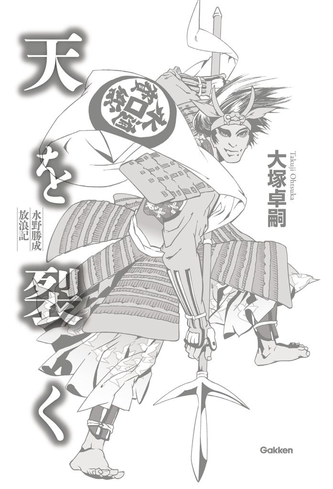

| 天を裂く | |
| 大塚卓嗣 | |
| (2013) | |

天を裂く
水野勝成放浪記
大塚卓嗣
カバーイラスト 森 美夏
天を裂く
１
天正十年（一五八二）の甲斐国（山梨県）は、ひどく慌ただしかった。
一月、浅間山が火を噴いた。灰が地に降り、その年は正月から不作が決定してしまった。
おりしも、甲斐を支配する武田家は、韮崎の地に新府城を造営中であり、国人衆には重税がかけられていた。
国人衆とは、「その地を代々治める、惣領を中心とした武士団」のことである。戦国大名は、彼らの代表にすぎない。勝手な政を行えば、国人衆は大名を見限り、離反する。
二月、さっそく信州・木曾谷から、反乱が起こった。
それを好機と見た織田信長は、急ぎ軍勢を甲斐へと押し進めた。待望の甲州征伐である。武田家中では謀反が相次ぎ、ついに三月の中頃、戦国大名としての武田家は滅亡してしまった。信長は満足して、信州・甲州を漫遊、富士山を詣で、三河（愛知県東部）で徳川家康の饗応を受けながら帰京した。
しかし同年の六月二日、今度はその信長が謀殺された。いわゆる「本能寺の変」である。謀反人・明智光秀は、中国地方からとって返した羽柴秀吉によって討ち取られた。
もっとも、そのような果断が下せたのは、秀吉のみである。多くの織田旗下の将は、突然の凶事に慌てるのみであった。
特に甲斐国では、関東管領として入っていた滝川一益が相模（神奈川県）の北条勢に隙を衝かれ、本領の伊勢へと逃げ帰ってしまった。
結果、甲斐国から主は消えた。
甲州は、越後の上杉、相模の北条、三河の徳川という周辺三国の草刈り場となったのである。
後に「天正壬午の乱」と呼ばれる騒乱の始まりであった。
村が、北条方の手で焼かれていた。
甲州の山間にある、小さな集落である。炎が渦を巻き、枯れた村を舐め尽くしていた。
熱は風を呼び、この切り立った崖へも吹きあがってきた。気流が、勝成の頬を撫でる。
鉄と血の焦げる匂いが、鼻腔をくすぐった。戦の薫りだ。思わず、頬が緩んだ。
（いや、笑うのはまずいよな）
何しろ今は勝手働き、つまり「抜け駆け」の大将である。うるさい親父殿や、お目付け役の鳥居元忠様もいないのだ。勝成は歯を食いしばり、笑みをこらえた。
だが、なぜか馬廻りたちは、怯えたように、自分から半歩も引く。
牙でも見えたか、かなり凶悪な面となっていたようだ。頬を撫でると、やはり筋肉の笑窪ができていた。
そうでなくとも、彼ら馬廻りは、北条の大軍を目の前にして、怯えていた。先遣隊の報告では、一万を超える数らしい。「とって返すべし」「韮崎の徳川本軍に合流すべし」などという声が、勝成の耳にも入ってくる。
（なんでこいつらは、この炎を見て、滾らないのだろう？）
勝成には、それが不思議だった。あの中に入れば、同じ熱となれるのだ。武辺者なら、今こそ見せ場であろう。その程度のこと、まだ十九歳の自分でもわかることだ。
周りを見れば、焼け出された村人たちも集まっていた。
皆が、村に入った北条の徒士を気にしている。おそらく、何か物を埋めたのだろう。たいていは、銭の束や証書である。簡単に見つかる場所に隠すはずもないが、もし奪われれば、命にさえかかわるはずだ。
「なあに、そんなに心配するなよ」
勝成の声に、皆が振り向いた。
「助けてやる。俺たちが、あいつら全部、裂いてやる。そして、徳川につけ。年貢は武田の頃より軽くなるぜ。なあ、おい」
「は、はい」
鑓で小突いた小姓が、慌てて声を返した。
同時に、安堵の笑い声も聞こえた。これなら、いい客になってくれそうだ。前古より、合戦とは見世物だ。客は、楽しむだけでいい。ようやく、本来の役割に戻ってくれそうだ。
ならば始めよう。勝成は、頭上で大きく鑓を回し、続けて、腕を広げ、見栄を切った。
「さあ、婆娑羅に風流尽くそうかい」
周囲が、わっと沸いた。賞嘆の声である。中には、激しく手を叩くものまであらわれた。
風が、さらに強まった。永楽銭の旗印が、威を以てなびく。
頃合いだ。
「いざっ」
勝成は鐙を踏み入れ、眼前の崖へと跳ねた。
自決とでも思われたのか、背後から馬廻りの嘆声が聞こえた。
何も心配はない。この程度の崖なら、馬で降りられる。時々、鑓の石突で体勢をとればいいだけだ。あとは馬に任せれば、危ないことは何もない。手綱を握る必要さえなかった。
もっとも、彼らには真似できまい。それで構わなかった。ゆっくり、下り口を探してくればいい。
この戦場は、俺が貰う。
「水野藤十郎勝成、一番鑓っ」
着地し、大いに叫んだ。
北条方が一斉に振り向く。
勝成は、手近な徒士の頭を、鑓で穿った。そのまま、鑓を捨てた。そして、敵の鑓持ちから勝手に、得物を奪った。
そいつで、また突いた。斬り上げ、叩き、首を裂いた。
あちこちから、慌て声が上がりはじめた。荒肝を抜かれたものから順に、背き走る。
勝成は、叫喚を追った。いまだ単騎だが、不利は感じない。
逃げる敵から順に、首を刈る。前後左右に区別なし。いい悲鳴が八方から聞こえた。
「慌てるな。長柄を揃えろっ」
敵に立ち直りの早い将がいた。前方にずらりと鑓が並ぶ。
なあに、構わない。勝成は、そのまま突っ掛けた。
まだ、手綱は握らない。代わりに、馬の首を強く叩いた。
頭の方向を強引に変えられ、馬体が大きく傾く。
勝成は、鐙を踏みしめた。そのまま回転の力を、足から腰、腰から胸、そして腕、さらに鑓の先へと伝えていく。
刃は、目にも留まらぬ速さとなり、鑓衾を切り裂いた。さらに力を加えた一撃で、兵の首まで吹き飛ばす。
穂を大きく頭上で回すと、血煙が雲のように広がった。
「ははっ」
いい気分であった。いよいよ調子に乗り、勝成はさらに馬の尻を叩いた。
速度を上げながら、水平に戦場を見る。そろそろ、もっといい首が欲しいと思った。だが、ほとんどの旗に威は見えない。ようやく、中に唯一、気焔はく一群を見つけた。さらによく観る。そこには、確かに兜も鑓も申し分ない大将がいた。
名は知らないが、首は貰おう。勝成は再び馬を叩き、馬首を変えた。
すると、目の前の兵が一斉に引いた。その先には、鉄炮の横列がある。
「ほう、いい動きじゃないか」
少しだが、感心した。そして、計算する。
（どうせ慌てて仕込んだ弾だ。いくつもこっちにはこない。いや、それでも数は揃っているな、おおよそ一〇挺というところか）
一斉に撃たれれば、幾つかは当たるだろう。並んでいる数から考えると、二発は貰う。
しかし、手柄首も目の前である。ここが、手綱の使いどころだ。
「放ていっ」
号令と共に、敵の弾丸が発射された。同時に、勝成も力任せに手綱を引く。
黒色火薬の煙は黒く、濃い。一瞬にして、周囲は暗雲に包まれた。
北条の群れが呟く。
「やったか？」
「どうだ？」
そしてようやく、彼らは黒煙の向こうに、馬の死体を見た。
だが、喜ぶのも束の間、見知らぬ刀が黒霧を断った。血飛沫と共に、絶叫が上がる。
勝成は馬を盾に、そのまま煙の中へと紛れていた。武器は、鑓から太刀へと持ち替えている。
鎧の隙間に刃を差し込み、丁寧に兵を切っていく。身をかがめながら奔り、人の群れを裂いていく。
そして、ようやく拝めた。望みの侍首である。
「そこの奴、名乗れっ」
勝成は誰何した。だが、将は慌てふためくばかりで、
「うお、な、な、内藤、ないとうっ」
と、諱も通名も言い切れない。焦れた勝成は手に持つ太刀を、その内藤に向かって投げつけた。
切っ先が、首を貫く。鑓を合わせるまでもなく、内藤某は地に倒れてしまった。
（足りん。まだ、足りんぞ）
勝成は刀をねじり、乱暴に首を千切った。遺体からは、樽を倒したように血が溢れる。
「さあ、次の奴、鑓合わせいっ」
牙むく笑みで、周囲をねめつけた。
北条の兵は、一斉に引いた。恐怖は波となり、伸びた軍に伝播する。正体さえわからない一人の青年に、一万の軍が怯えたのである。
そこに、ようやく自分の勢が追いついてきた。太鼓を叩きながらの突撃である。
「おう、今頃来たか」
北条方は恐慌状態に陥った。もはや隊列も維持できず、甲斐の山中へと四散していく。
「ようし、追え。背を向けた奴から突き殺せ」
あとは、面白いくらいの大崩れとなった。遠くを見れば、出番を待っていたかのように、味方の徳川方も降りてきている。旗印は、重鎮・鳥居元忠のものであった。
「はは、さすが鳥居様。いい横鑓だなあ」
「さあ、若も早く」
馬廻りに追撃を促されるが、その前にやることがあった。
「ちょっと待ってろ」
鑓を拾い、内藤某の首を刺した。
天に掲げる。
村人たちの拍手喝采が、ここまで聞こえてきた。
これが、天正十年八月十二日、甲斐国・黒駒の風景であった。
２
「この、大うつけめっ」
父・忠重の拳骨が勝成の頬を打った。
甲州・古府（山梨県甲府市）、徳川方陣中でのことである。獲った首の化粧を待っているところを、いきなりだった。
父は、主君・家康とともに、韮崎の新府城へと移ったはずであった。どうやら、古府急襲の報を聞き、急ぎ戻ってきたらしい。
それにしても、勝成には、なぜ功を上げた自分が殴られなければならないのか、まったく理解ができない。
「なんだ、親父殿。なんの癇癪だ？」
腫れた頬をさすりながら、怪訝に問う。
「どうもこうもあるか。大将の身で一騎駆けなどする莫迦がどこにいる」
云われてみれば、もっともな言い分だった。確かに北条一万の大軍を相手に、古府二〇〇〇の兵で当たるなど、無謀にも見えることだろう。ましてや、勝成の手勢は五〇〇もいないのだ。そんな状況で一騎駆けなど、確かに正気を疑われても仕方がない。
だが、勝成にも自分の理屈があるのだ。思わず声も大きくなる。
「ふん、何だいそりゃ？ 将、軍に在りては君命を受けざるところも有りという言葉も知らんのか」
「理屈に屁をぶっかけるために、禅寺へ通わせたわけじゃねえ」
将在軍、君命有所不受。孫子の一節である。「いざ戦場にあたっては、指示を待たずに自分で動け」という意味だ。せっかくいい語を云ってやったのに、火に油を注いだだけであった。
ふてくされる勝成の胸ぐらを、忠重が掴みかかる。勝成も掴み返しながら、ねめつける。
そんな親子を、鳥居元忠が笑いながら宥めにきた。両者の間に、肩で割って入ってくる。
「いやいや、そんなに怒らんでもいいではないか、水野殿。手柄は手柄よ」
鳥居元忠は、家康幼少の頃からの、股肱の臣である。将器も大きく、この戦では家康の抜けた古府の全権を任されていた。
「そうだよなあ、鳥居様。三〇〇も首を獲って、道に吊るしてきたんだ。大手柄だよなあ」
勝成も、調子を合わせた。やはり、この人の横鑓は最高だと思う。
だが、忠重の怒りはおさまらない。
「黙れ、藤十郎。その舌、根から抜いてやろうか」
「おいおい、水野殿。まずは、まあ落ち着け」
腕を伸ばしてくる忠重に、元忠が組みついた。脇を抱きながら、なんども肩を叩いている。
もっとも、鳥居元忠には、勝成を叱れない理由があった。実は、先に北条方の位置を聞きつけ、抜け駆けしようとしたのは元忠本人だったのである。それを勝成に見つかり、咎められ、挙句に先を越されたのだ。
忠重は、三河の古強者たちに、息子を預けたつもりだった。だが、古府にいた将は、全員が単なる戦莫迦であったようだ。元忠からして、勝成を大きく買っている始末である。
「ふん。そもそも親父殿の頃とは、すでに戦が違うのよ」
勝成は腕を組んで居直る。
「なんだと？」
いぶかしむ父に対し、勝成は身振りをまじえて論じはじめた。
「昔は徒士の八割が鑓だったそうじゃねえか。鉄炮がなかったからな」
元忠は、若武者の頃を思い出したのか、大いに頷いていた。
「だが、今は違う。鑓はおおよそ徒士の四割。昔の半分だ。結果、騎馬をさえぎる長柄が減っている」
「それがどうした。鉄炮をどうする？」
確かに、あれは一撃で致命傷を負う兵器である。だが、そう恐れるものでもない。
「あいつは、すぐには撃てんだろう。慌てて詰めてもしくじるだけだ」
「ほう」
元忠も感心した様子であった。鉄炮の早撃ちには、技術を要する。扱いこそ簡易だが、奇襲への対応は難しいのだ。
「つまり今はな、虚を衝く一騎駆けこそ有効よ。そのまま将まで穿てば、潰走確実」
「ぬう」
思わずであろう。忠重も唸っていた。
「あとは簡単だ。足軽が崩れれば、お家大事の侍も逃げ出す。追い首上等、刎ね放題よ」
「なるほどのう」
元忠が破顔一笑する。いよいよ勝成は饒舌になった。
「これは、ただの理屈じゃねえぜ。俺は本当にやってのけたんだからな。どうだい、親父殿」
だが、忠重は、まだ納得しない。
「ほう、では聞くが、お前は先ほど、お家が大事と云ったな？」
「ああ云った。それが何だ」
「では、お前のお家はどうなる。一騎駆けで死んだとき、お前のお家は何してどうなる？」
埒外の問いであった。勝成は、しばらく間抜けに口を開くことしかできなくなった。そして、
「いや、考えたこともなかった」
と、ようやく云えた。
「まったき莫迦かっ」
忠重は、怒り心頭に発した。大きく前へ踏み込み、勝成を力に任せて殴りにかかった。岩を砕くような凄まじい音が鳴る。
だが、勝成はその一撃を額で受け、こらえていた。そして、
「痛てえじゃねえかよっ」
と、そのまま頭をぐいと押し込み、忠重の顎へ、肘打ちを喰らわせた。
しかし、忠重の首も太く、その反撃を耐え切ってみせる。
あとは、拳を避けることもない殴り合いとなった。交互に空いている場所を打ち、蹴り、叩く。とても親子とは思えない、本気の喧嘩であった。
「ははは、こりゃすごい。おい、見に来い、みんな見に来い」
喜んでいるのは元忠のみである。他の人間は、顔を青くするばかりだった。
なにしろ父も息子も、揃って人間離れした膂力の持ち主である。巻き込まれたら、それこそ大怪我だ。止めようにも止められない。肉が肉を叩く音が、しばらく続いた。
もっとも、この喧嘩は父に一日の長があった。迫る拳を柔でさばき、勝成の躰を宙で回した。そして潰す。いわゆる「俵落とし」である。
しっかりと、勝成は受け身をとるが、
「そこへ直れっ」
と、どやされ、その場に座した。
見れば父の手は、刀へ掛かっている。
「はは、抜くか。抜くのか、親父殿」
「ぬう」
忠重の手が震えている。一方、勝成は怖くもない。
「やるなら婆娑羅とやってくれ。天まで飛ばせ、さあ斬れ、親父」
勝成は自ら頭を傾け、開いた首を手で叩いた。顔は、牙むく笑みである。
余裕の挑発であった。どちらの胆が大きいか。勝成は、こんな勝負が好みである。父親が相手なら、なおさらだ。
忠重、迷うこと数瞬。
「うおおおおっ」
ついに拳を振り上げ、そのまま力任せに落とした。鉄拳は、一撃で勝成の顔を地に埋めた。
そして忠重は、何も云わず、その場から去った。
「お、親父殿」
勝成は、潰れた鼻を直しながら、顔を上げた。すでに、忠重の背は遠い。
「何をしている、俺を斬れ。殺せ。どこへ行く、親父殿、逃げるなっ」
勝成は喚きながら、地面を何度も叩いた。拳が地を揺るがせる。
そんな光景を見て、元忠は涙目になって笑っていた。
「いやあ、いいものを見た。いいなあ、いいよ」
もちろん、そんな余裕があるのは、元忠のみであった。
この黒駒合戦以降、甲斐国の戦局は北条方に著しく不利なものへとなっていった。
勝成の吊るした三〇〇もの首が効いたのだろう。北条方の友軍は、次々と持ち場を離れていった。北条は挽回を狙い、さらに軍勢を繰り出した。しかし、事態は好転することなく、ついには手薄となった関東に、北から軍勢が侵入するに至った。ようやく北条は甲州を断念し、徳川との和睦を決意する。
そして、十月二十九日。無事に講和となったのである。
３
「要するに、親父殿とは馬が合わん」
「よく合っているように聞こえるがね」
ここまで黙って聞いていた井伊直政が、率直に感想を述べた。
「どこがだよ。あんな石頭と、どこが似てるって？」
思いもよらない一言だった。勝成からしてみれば、あんな父親と似ているところなど一つもない。多少、目鼻立ちは重なるだろうが、武も知も徳も、自分の方が遥かに上だと思っている。
だが、直政は、笑顔のまま答えない。
木もれ日ものどかな、初夏の山道である。
轡をあわせて、二つの衆が進んでいく。勝成が率いる三河刈谷衆と、直政の井伊谷衆・赤備えである。
勝成の本領である刈谷は、三河の西端に位置する郷である。西を流れる境川が、尾張（愛知県西部）との国境だ。今度は戦場とも近く、衆を十分に集めての参戦となった。
対して井伊谷は、遠江（静岡県西部）である。はるばる東海道を上る行軍となった。大軍である。大将の井伊直政をはじめ、多くの武将が赤い鎧に身を包んでいる。
駒を歩ませながら、勝成の愚痴が続く。
「いや、この間も酷かったんだ。最近、いい鉄炮が手に入ってな。ちょっと遠くに飛ばしたくて、薬を少し多くしたんだ」
「私も時々やるよ。どうした？」
「多すぎたらしい。顔を火傷した」
勝成は右目を指さした。見れば、まだ黒い痣が残っている。
「でもな、そのときにちょうど貝や太鼓の音が聞こえた。戦だよ。駆けつけるだろう？」
「もちろんだ」
「で、兜を忘れた」
勝成の言葉を聞いた鑓持ちに、何やら動揺が見て取れた。だが、
「うむ、急いでいたなら致し方ない」
と、直政が返すので、さらに驚いた様子であった。確かに普通の兵には、とても首肯できる話ではない。
もっとも勝成は、ようやく仲間を見つけた気分である。身を乗り出して語りだした。
「だよなあ。なにせ、かぶると丁度痛いんだよ。外すだろう」
「もっともだ」
「でもな、それがまた親父殿は気に入らなかったらしい。何て云ったと思う？」
「なんだ、怒られたのか？」
勝成は、大げさに父親を真似てみせた。
「どうした、その様は。なぜ、兜をかぶらん？ 小便壷にでもしたのか、尿なら尿筒にせいっ」
「いやはや、大したお父上だ」
さすがの直政も、苦笑いである。
「こちらの云うことなど、はじめから聞く気もないんだ。黙って見てろと云って、とりあえず馬で駆けた」
「ほう」
「で、首一つ獲ってきて、投げつけてやった。そうしたら、また怒るんだよ。いい加減、聞いてられないので逃げだしてやった」
「たまらんなあ、水野家は」
直政は、嬉しそうに手を叩いた。
「親などとうにいない身には、羨ましい話だ」
「本気かよ、まったく」
確かに、井伊直政の両親は、すでに亡くなっている。いわゆる「桶狭間の戦い」の直後、主の今川義元を亡くした遠江の地は大混乱となり、直政の父は讒言によって、殺されたのだ。そこは、気の毒に思う。だが、「親ならどんなものでもいい」と云うのなら、それはさすがに違うだろう。
勝成は不満げに馬上で足を組み、肘を立てた。それでも勝手に、馬は進む。
「はは、大した腕だ。なるほど、御館様が云っていたな。水野家は風狂の血だと。その通りらしい」
「風狂ね」
勝成は、その言葉が気に入った。禅では「破戒」を意味する語である。
「自分も水野ということをわかっているのかね、あのおっちゃんは」
「さあ、忘れているのかもしれんな」
井伊直政の云う御館様とは、徳川家康のことである。その家康、母は刈谷・水野家の出身で、勝成には伯母にあたる人物だ。つまり、家康と勝成は従兄弟という続柄である。
ふと、直政が何かを思い出したのか、兜の縁を指で弾いた。
「そうだ、私も御館様の風狂は、見たことがある」
「本当か？ そんな無茶な戦い方はしないだろう。あのおっちゃんが」
なにしろ、望めば何でも手に入る戦国の世にありながら、「忍」の一字を知られた男だ。先年の天正壬午の乱でも、動きは慎重であった。
「まあ、今はな。だが、三方ヶ原ではすごかった」
勝成は、瞠目した。
「おい、見たのか？ あの三方ヶ原の戦を」
「見た。私のいた寺は、戦場のすぐ側だったからな。あのときはとばっちりで、少し焼かれたほどだ」
「おおっ」
自然と身が乗り出た。なにしろ評判の負け戦である。
十年程前、絶頂にあった武田家は上洛を決意し、西へと軍を進めていた。そのとき、通りがかりの徳川家は、次々に支城を獲られ、武田の西進を許してしまった。乾坤一擲、通過する武田勢の背後を衝こうとした戦こそ、世にいう「三方ヶ原の戦い」である。
そこで、家康は敗れたと聞く。だが父なども、その内容を詳しく語ろうとはしないのだ。ただ完膚なきまでに叩きのめされたということを、噂の形で伝え聞くのみである。勝成は、大いに興味があった。
「なあ、おっちゃんはどうだった？ 話では、一騎で駆けたそうじゃないか」
「ああ、すごかったぞ。三方ヶ原で鶴翼を布いて待ちかまえる武田に対して、まっすぐ突っ込んでいった。飛ぶようにだ」
「おう、いいねえ」
目に見えるようであった。史上最強の武に対して、華の一騎駆けである。胸の空く思いであった。
「だが、すぐに供回りもいなくなり、今度は来た道を飛ぶように逃げ帰った」
最高であった。よほどこってりと打ちのめされたのだろう。勝成は笑いが止まらず、何度も膝を叩いた。
「それよ、それ。まさに水野の血よ。風流がわかってるじゃねえか」
「まあ、それからは随分と慎重になった。今の徳川は、売られた喧嘩を買うだけさ」
「ふうん」
勝成は、口の端を上げてみせた。
「じゃあ、噂の荒淫のみが、今のおっちゃんの風狂ってわけか」
直政は、思わずむせた。
彼は小姓として、寝所の家康をよく知っていたからである。
家康は女を抱かなければ寝られない質の人間であった。相手は誰でもよい。武家の未亡人から、土にまみれた農婦まで、誰でも抱く。正室にあった今川方の嫁など、面倒になったのか、すでに始末済みであった。当然、子沢山である。にもかかわらず、子には一切の愛情を持たないという、稀有な人間でもあった。自身の人質生活が長かったことの反動だろう。子は道具と割り切っているようである。
「まあ、質の人選に苦労はないよ」
直政はようやく、その程度のことを呟いた。
天正壬午の乱以降、日本国の勢力図は大きく変わった。
徳川家康は、甲州を含めて五ヶ国を手に入れた。だが、中央は主君・信長の仇を討った羽柴秀吉が押さえていた。
困ったのは、信長の次男・織田信雄である。行き場をなくした彼は、家康に泣いて助けを求めた。
売られた喧嘩は、しっかり買うのが三河の作法である。家康は、およそ十倍の兵力を持つ羽柴方と敵対することとなった。
羽柴方は尾張・犬山城を占拠した。呼応して、家康は小牧山城に入った。両陣営は、近距離で睨み合う形となったのである。
対峙すること、およそ二十日。
功を焦ったのか、秀吉の甥・秀次は、徳川方の裏をかいて三河を奇襲する遊軍を動かした。
もっとも、二万という多勢である。隠密行動としては話にならない。動きはすぐに徳川方へ知られることとなった。
家康は各地に諸将を配置し、万全の体勢で迎え討つことにした。自身も現場を回り、指揮にあたっている。
井伊直政・水野勝成の軍勢は要所・長久手へと派遣された。
現場につくと、そこは、なかなか面白い風景となっていた。
よほど硬直した戦況を打破したいのだろう。長久手の山道を、羽柴の大軍が進んでいる。
敵はこのまま、三河まで進軍を続けるつもりらしい。成功すれば、大勝利である。
だが、奇襲にしては、兵の数が多すぎる。列を乱さないためか、旗まで立てている始末であった。
一方の勝成たちは谷を挟み、反対側の中腹に位置していた。
細作によれば、敵は特に道を変えるつもりもないらしい。このまま待っていれば、そのうち開戦となるだろう。
広げた絵図面を見て、勝成は唇を舐めた。
「はは、足止めと先駆けが、同時にできるな」
その言葉に、直政は少し首をひねった。
「説明が欲しいな」
「つまりだ。普通は鉄炮をけしかけ、敵の足が止まったところを馬で叩く。まあ基本だな」
勝成は、右掌を左手で突いてみせた。
「なるほど。この谷では、その二つを同時に行えるというわけか」
まだ説明の序盤だが、直政はこの段階で策をおおむね理解したようだ。
「ご明察。先に騎馬が下山し、鉄炮で撃ったところを登って叩く」
これで鉄炮と先駆けが、時間の差をなくして、仕掛けられるというわけである。だが直政には、まだ疑問もある。
「しかしだ、藤十郎。乱戦になれば、それ以上は銃を使えんぞ」
もちろん、そこも考えてある。
「じっくりと、狙って撃たせるさ」
「そんなことが、できるのか？」
直政が、眉をひそめた。確かに慌ただしい戦場では、火縄銃の弾など、ばら撒くだけに近い。じっくり狙う余裕はないのだ。だが、
「大丈夫。銃も少しずつ下山させればいいんだ。そうすれば、煙は上に、銃士は下に行く。常に視界が確保できることになる」
黒色火薬最大の難点は、爆発時の猛烈な黒煙にあった。あまりに黒すぎ、銃士は目を開けることさえ難しいのだ。だが、勝成の策なら、その問題が解消される。
赤備えの一同も感心した様子であった。確かに、理に適った策である。
「なるほど。そうなれば、的との距離も縮まるな。より弾が当たるようになるわけか」
「そう。乱射の必要はない。時間をかけて狙わせればいい」
「敵が崩れれば、楽しいことになりそうだ」
同時に突撃する騎馬を思ったのか、直政の顔にも笑みがあらわれた。
「ああ。山を登って逃げられはしないさ。そうすれば、さらに叩ける」
勝成も、遁走する敵兵の群れを想い、胸が高まる。景気よく手を打ち鳴らし、云った。
「さあ、長久手の谷を、風流に血で染めようかい」
勝成の刈谷衆への説明は、いつも適当であった。
「敵の横っ腹をぶっ叩くぞ。こっちから、こっちな。あと、鉄炮はあせるな。よくカルカで詰めてから狙えよ」
皆で輪になり、棒で地面に地形を描いていくだけである。少しずつ山を降りろなどと、面倒なことは云わない。それぞれが勝手に判断するだろうと思っている。
勝成の重大事は、もっと別のところにあった。
「辺りに見物衆がいないことが不満そうですね、若様は」
旗持ちに云われ、舌打ちした。その通りだったからである。
今も昔も、戦は最高の娯楽である。なにしろ数千数万の人間が、武器を手に取って相食むのだ。少し離れた所から見物する人々は、どこにでもいた。そんな衆の耳目を惹くことこそ、勝成の趣味であった。浴びる喝采が、たまらない。いつだって、そのための風流だった。
まあ、騒げば周囲の村から駆けつけるだろう。そのとき、どうやって見栄を切るか。勝成の頭には、それしかない。
一方、井伊谷の衆は直政からの命令が詳細に出ていた。それぞれが、威勢よく返事をして、配置につく。
勢の人数が違うのだから当然ではあるのだが、互いの性格はだいぶ違うようだ。
勝成は、赤備えと云われる兵たちを、じっくりと眺めた。
（あれが、武田の遺臣ねえ）
彼らの鎧は、全て「赤」で統一されている。その中でも、疵の多いのが元武田の勢であろう。
それに命令を与えるのが、まだ二十四歳の井伊直政なのだから、面白い。
彼らが徳川に組み入れられる際、多くの将が「自分の旗下に」と云いだし、一悶着があったらしい。だが、若い直政に全ての兵が譲られたという。
おそらく、井伊家が「外様」の大将だからであろう。井伊家が徳川に臣従したのは、つい先頃、直政の代からだ。確かに、よそ者同士で苦労を分かち合う方が、軍の結束は堅くなるに違いない。家康のいい判断であった。
直政は全ての配置を整え、小姓から面頬を受け取っていた。
目を閉じて、静かに顔に置く。
丁寧な所作であった。美しくさえある。
かつて、家康が鷹狩りに出たとき、まだ十歳の直政と出会い、小姓にしたという。この話を聞いたときは、彼のどこに、そのような魅力があったのか疑問だった。
今なら、なんとなくわかる。この男は、一つ一つの動作に無駄がないのだ。見ていて気持ちがいい。
寺育ちだからかとも思ったが、それを云ったら自分はどうかと、考え直した。
（これが、直政という男の良さか）
勝成は、そう理解することにした。
馬に乗り、鑓を持つだけで美しい。掛け軸の中に入れたくなる程だ。そんな絵になる男が、はるか前方を眺めている。水平に持たれた鑓の先は、羽柴方に向けられている。
「奴ら、いい旗の色だぞ。藤十郎」
敵軍の旗が、向かいの山に並んでいた。その色は、素直に軍の威をあらわす。進む旗は輝き、逃げる旗は濁るものだ。
旗の色に、威は見えなかった。油断は明白である。
「じゃあ、いくか？」
勝成は、気軽に問うた。
「ああ」
直政も気軽に応じる。お互い、色街にでも繰り出すような呼吸であった。
勝成は鑓持ちから得物を受け取り、りゅうりゅうと柄をしごいた。
一方、直政はゆっくりと目を閉じていた。よく見ると、大きく息を吸っているようである。
（何だ？）
いぶかしんだ次の瞬間、爆音が響いた。
なんと直政の口上である。だが、あまりに大きすぎて、人語に聞こえなかったのだ。
そして、驚く刈谷衆を置いて、一人で山を駆け下りたのである。
「殿が出たぞ」
「追えい、殺させるなよ。追えい」
続けて赤備えが、一斉に追っていく。先ほどの軍議は何だったのか。ただ一人の男を殺させないためだけに、歴戦の兵たちが全力で大将を追っていく。
勝成も、鐙を踏み込んだ。
「風流だ」
嬉しくなった。ここまで話の通じる奴とは思わなかった。
馬を叩く手も強くなった。あの男に追いつきたい。その一心で、斜面を駆けた。
４
戦局は、おおよそ思い通りの展開となった。
やはり射撃による足止めと、先駆けの同時攻撃は、敵の意表を衝くに十分であった。何が起こったのかわからぬ敵兵は、たちまち崩れた。
慌てて山を下りる足軽などは、鉄炮のいい的である。また、来た道を逃げようにも、味方が詰まって身動きが取れない。そして、坂の下からの攻撃は、重武装の敵に有効であった。股下や脇など、鎧の弱点が開いているからだ。
勝成は、鑓で隙間を穿つ。
刺しては投げて、斜面に放った。股を刺された兵は悶絶しながら、谷を転がり落ちた。
悲鳴と怒号が、山にこだました。首など獲り放題である。勝成は鑓を振るい、敵の群れを駆けた。すでに、旗持ちも置いてきている。
とにかく名のありそうな敵将は、蹴って倒した。そして、刀で首を掻き切る。やがて、そんな頭蓋が幾つも溜まった。
「ちくしょう、重いぞ」
ついには面倒になり、獲った首をまとめて捨てた。
もっと名のある首級が欲しい。そう思い、戦場を見渡した。
すると、はるか先、まだ濁りの見えない旗があった。よほど将に力量があるのか、列を立て直そうとする気配さえある。
（あれだ）
旗は煙の向こうであり、印もよく見えない。だが、只者ではないのは確かである。猛烈に、あの首が欲しくなった。
勝成は奔った。
徒士の群れをかいくぐり、脛を斬る。鑓の下を抜け、居並ぶ馬廻りをなぎ倒す。あっという間に距離は詰まった。
すると、将の旗持ちと馬が下がった。見れば、妙に毛並みのいい駿馬である。やはり、名の知れた武将のようだ。
いよいよ、手柄首の前に立つ。
「俺は水野藤十郎。どこの誰だか知らねえが、検分は後だ。とりあえず俺の手柄になれ」
「ほう、どの面下げて帰ろうかと思ったが、この面に決めたよ。水野ね、覚えた」
これだけ手近の兵を獲られながら、余裕の体である。
「あんた、名乗る気はあるか？」
「武蔵守長可」
驚いた。なんと森長可である。敵軍の重鎮、この隊列の責任者だ。よく見れば、旗は永楽銭の印であった。勝成と同じ、信長に認められた証である。
いかつい巨体だが、その表情は妙に涼しい。血に塗れた顔は、色気さえある。さすが、世に名の知れた美男の家系、森家の嫡子である。
（僥倖だ）
こんな機会はそうそうない。勝成は鑓を構え直した。
一方、長可の得物は、十文字鑓である。ただし、柄までも鉄棒らしい。銘に「人間無骨」とある。人間の骨などないも同然という意味のようだ。
おそらく幾百もの骨を砕いたであろう鉄塊が、勝成へと向けられた。
長可の噂は、知られている。猛者だ。特に先の甲州征伐、高遠城攻めの苛烈さはよく聞こえてきた。三の丸の屋根から侵入した長可と配下たちは、女子どもを的に見立て、次々と鉄炮で撃ち殺したらしい。
また、本能寺で実弟である森蘭丸を討った男を自らの配下に加えたというのも、常軌を逸した行動である。
規律違反など気にすることなく、気ままに武功を立てるという点で、勝成とはよく似ていた。
南蛮胴を着込み、鉄塊を持つ巨人。
（さて、どう攻めたもんかな）
難しい相手であった。人間無骨は、こちらのどこに当たってもいけない。手足に当たれば千切れ、頭なら砕かれるだろう。しかも、こちらは敵の鎧を穿てない。南蛮胴の隙間は小さく、その奥には鎖帷子までが着込まれている。
どこを狙うべきなのか、勝成は逡巡し、牽制に幾つか突いてみた。しかし、軽くあしらわれ、鎧に届くことさえなかった。
そんな気の抜けた攻撃など、してはいけなかったのだろう。長可は鉄塊を一振りし、鑓の穂先を砕いた。勝成が慌てて引いたところに、二撃目がきた。残った柄で攻撃を受けたが、今度はそれも砕け散った。
「くっ」
急ぎ太刀を抜く。だが、構える前に、三撃目がきた。
人間無骨は、刀を横に打った。受けた太刀は、鈍い音をたて、根本から折れて跳ねた。勝成は一瞬にして、手持ちの武器を全て失ってしまった。
「その面、貰うぞっ」
長可の突きが、勝成を襲う。勝成の手は咄嗟に刀の柄を捨て、宙に舞う刀身を掴んでいた。そのまま前方へと飛び込み、脛斬りを狙う。だが、やはり南蛮胴に隙間はなく、膝の裏にまで鎖が入っていた。これでは斬れない。前転し、向かい直す。長可もまた構える。二人の位置が、入れ替わった。
よく躾けられているのだろう。長可の馬廻りに、加勢する気配はなかった。どうやら、この男もこういう勝負が好物らしい。
（たまんねえな）
勝成は、乾いた唇を舐めた。
「さあ、決めようぜっ」
手に力を入れると、刃が指に食い込んだ。下手を打ったら、掌半分を失うだろう。
だが、策は考えた。丁半の博打になるが、勝ちの目を拾う自信はある。
「おうっ」
長可渾身の一撃が、振り下ろされた。
勝成は、折れた刃の背でそれを受けた。
湾曲した日本刀の峰は、敵の攻撃を大きく逸らす特徴を持つ。垂直に落された一撃を、勝成は左下へと滑らせたのだ。
鉄棒が地を叩く。体勢を崩す長可に、勝成はすかさず組みついた。
「せいっ」
足を払う。父から習った柔である。首獲りには欠かせない技術であった。
もっとも、その先は坂である。
勝成と長可は、共に斜面を転がった。鎧の脇を握り、必死に食らいつく勝成と、鉄棒で頭を叩こうとする長可の攻防が続いた。
ついに、谷の底まで二人は落ちた。
「面倒なやつだな、お前は」
長可は、息を切らしながら勝成の腹に座った。そして、ゆっくりと鑓を振り上げる。顔に浮かぶ笑みは、ずいぶんと厭らしいものだった。思えば、女子どもを笑いながらいたぶれる男だ。格こそ高いが、品が見えない。
「哀れなもんだな、鬼武蔵さんよ」
言葉の意味がわからなかったのだろう。長可は、わずかに眉をひそめた。
刹那、その眉間に穴が開いた。
銃声は後から聞こえた。長可の躰が痙攣し、跳ね上がる。その巨体に、再び複数の弾丸が撃ち込まれた。
谷底は、すでに水野と井伊の鉄炮で埋め尽くされていた。そんな場所で首を上げたら、絶好の的である。踊るように血潮を振りまきながら、長可は絶命した。
勝成は立つこともできず、戦場を仰いだ。次々と徳川方が入って、逃げる羽柴軍の背を斬っている。
ここでようやく、自分の手も大きく切れていることに気がついた。だが、もう見栄を切る体力も残っていない。
「ふん、ちくしょうめ」
勝成は悪態つきながら、黒く染まる天を眺めていた。
５
日が、西に落ちた。
篝火が立つ陣幕の内では、本日の検分が進んでいた。軍監が首を虜囚に確認させ、手柄を帳面につけている。
また、軍目付による報告もなされていた。よく動いた兵や、よく働かせた将には、それぞれ手柄として褒賞が与えられていた。
もっとも、そんな結果を気にする勝成ではない。いつだって、やりたい戦を勝手にするだけである。今日も、鈴生りとなった首の数々を、「重い」というだけの理由で捨ててしまった。とにかく風流尽くせれば、満足なのである。
だが、刈谷衆全体のこととなれば、さすがに話は別であった。今日は馬廻りから「手柄を赤備えに奪われた」という声が、ずいぶん入ってきた。
確認しなければならない。本陣へと戻った勝成は、目付から帳面を奪い取った。
まず、獲った首の数を比べた。赤備えと刈谷衆に、大きな差はないように思えた。人数に、数倍の違いがあるにもかかわらず、刈谷衆はよく働いたのある。
何より、刈谷衆は戦死者が少なかった。人間、死んだら元も子もないのだ。進退の判断は各々でするように、勝成はいつも云っている。
（やはり、働きに遜色はないよな。なら、どういうことだ？）
帳面をめくり続け、ついに気になる軍功を見つけた。森武蔵成敗。この合戦、最大の誉である。それが、井伊谷鉄炮衆の手柄とされていたのだ。
さすがに、これは目を疑った。何しろ、自分が一番よく知っている件である。
あのとき、長可は眉間を撃たれて死んだ。その射手を、勝成はその目で見ていたのだ。間違いなく、水野家中の杉山孫六という男であった。
勝成は、孫六をよく知っていた。なにしろ、十を撃てば七は当てるという腕自慢である。特に眉間を狙うことが常で、それを信条にまでしている。
また、鬼武蔵の巨体には、八発もの弾丸が当たっていた。だが、兜と胴に多くが弾かれ、致命傷は頭部を穿った一撃のみだったのである。
（なんでこいつが、孫六一人の手柄になってないんだ？）
まずは、目付を問い質した。しかし、彼らの目には赤い鎧しか入っていなかった。地味な孫六は、見逃されたようであった。
次に軍監に詰め寄った。自分が一番近いところで見た。鬼武蔵の首は孫六の手柄だと主張した。だが、「弾丸に名など入っていない」と勝成の言は一蹴された。いくら怒鳴りつけたところで、断は変わらなかった。
やりきれぬ思いで自陣に戻ると、隅で小さくなっている孫六の姿が目に入った。
哭いているようである。
その悔しさはよくわかった。なにしろ、顔の右半分を煤だらけにして磨いた腕である。努力の男なのだ。勝成には声をかけることさえできなかった。
（このままには、できねえな）
強く思った。赤備えに勝つ策を、一刻も早く考えねばならない。勝成はこれ以上、自分の下に哭く男など見たくなかった。
だが、果たしてどうすればいいのか、やはり方法がわからない。
陣所を出ると、戦場だった山が、色町のように変わっていた。ここ長久手は羽柴方の所領であり、徳川方には敵地である。それにもかかわらず。兵を相手に商いを行うものは、かなりの数がいた。飯や酒はもちろん、口入れ屋、武器や防具を修復する鍛冶師もいた。そして何より女である。もっとも、小屋などあるはずもなく、ござ一枚、中には土の上でという女までいた。
勝成は、薄い明かりの中をただ歩く。どうすれば、赤備えを超えられるか。頭にはそれしかない。
女に、強引に腕を引かれても、まだ考えていた。
金の簪が鮮やかな、上等な女であった。勝成は、そのまま女の上にのり、襟を開いた。
勝成は女を、元服前に夜這いで覚えた。荒淫は、水野の血である。女は幸い、よく肉の乗った好みの躰であった。ここで一戦交えるのも、構わなかった。
遠い薪の明かりに、女の白い顔が浮かんでいた。勝成は口を重ね、舌を絡めた。女は積極的で、頬の裏まで舐めはじめた。
「不思議な歯をしてますね」
女が、何かに気づいたか、聞いてくる。
「どうした、何か挟まってたか？」
「いえ、どうか見せてくださいな」
女は勝成の咽喉を覗いた。
「奥歯が、まっ平らですよ。何をしたら、こんなになりますの？」
「戦場では、常に歯を食いしばってるからな。なに、食うには困らない。さて、いただこう」
勝成は、豊かな乳房に口を寄せ、強く吸った。喘ぎを、上目で見た。
「薄明かりでも、赤は目立つな」
まだ、赤備えのことが頭にあった。唇の紅が映える。勝成は、女の口に指を入れてみた。お歯黒の鉄は塗られていない。白い八重歯が、愛らしくこぼれた。
「ああ、白も目立つか。でも、それじゃあ、死に装束だしな」
頬を撫でると、女が甘い声をだした。そのまま、髪に手をのばす。柔らかく、絹の触り心地だった。
「緑に輝く黒もいいが、目には留まらない」
それでは意味がない。髪留めを解くと、長い髪が地に落ちた。
すき上げながら、髪留めを弄ぶ。金色の簪は、小さな珊瑚の粒で飾られている。
「いい物だな」
「そんなに高いものではありませんわ」
なるほど、全てが黄金ではなく、箔が貼られているだけらしい。そういうものかと思った。光が当たると、金の上に、闇と光が怪しくうねった。
「なあ、この簪、咥えてくれよ」
「は？ はあ」
女は云われるがままに、髪飾りを紅い唇に咥えた。
「赤に勝てるのは、この色かね」
勝成は、解を見つけた気がした。機嫌よく、秘所に指を添える。女は呻くが、勝成は、
「その簪は落とすなよ」
と、命じる。女は口を開けなくなった。
耳まで赤くしながら、鼻で荒く息をする。いい眺めであった。勝成は楽しみながら、いよいよ怒張する一物を持ち上げ、奥まで挿れた。女がどこまで粘れるか、いつまでも試した。
やがて朝となった。勝成は昇る太陽を見ていた。
たっぷり楽しんだ。もっとも、女は自分以上に楽しんだはずだ。まだ、口をだらしなく開いたまま、夢見心地の体である。
勝成は持っている衣服全てを女にかけ、手持ちの金も全て女の枕元に置いた。一糸まとわぬ帰陣となった。
褌も整えぬまま、文箱を用意させる。脇目もふらずに書面を整え、勘定方に提出する。
そして、勝成はあくびしながら、陣の奥へと戻った。そこでようやく、本来の眠りについたのである。
長久手での戦い以降、家康と秀吉の攻防は、局面が変わった。
相対する本陣同士は動かぬまま、支城を取り合う戦となった。まるで囲碁である。その展開は、目まぐるしかった。
一方、勝成は尾張・蟹江城の合戦に参加中であった。だが、なぜか父に呼び出された。
「なにごとだ、親父殿」
陣幕の中に入り、床几に座る父の前で、あぐらをかく。はたして何の小言か、考えるのも面倒であった。
「こいつだ」
差し出されたのは、一通の書面であった。覚えがある。自分が書いたものであった。確か数日前、勘定方に提出したものだ。
「なんだ、このふざけた上申は。本気か？」
「ああ、もちろん本気だ。間違いない。俺が書いた」
「黄金の甲冑五〇〇など、何をどう考えてのことだ」
いつもの怒鳴り声だ。勝成はひるまない。
「恩賞のためだ」
「なんだと？」
父の憤怒に、勝成は襟元を正し、口上を述べた。
「これより、戦はもっと大きくなる。兵の数は増え、鉄炮も増える。当然、戦場はより黒く、暗くなる。正しく目付の目に留まるには、もっと風流を尽くした衆が必要だ」
「それで、黄金の甲冑か」
「おう」
勝成の考えは、概ね正しい。時代の流れに即した判断であった。
この頃より、視界の悪い戦場でより目立つよう、変わり兜が発達していく。そうでもせねば、己の武功を誇ることができなくなってきたのだ。また、信長が率いた尾張の兵も、派手な鎧でよく知られていたが、理由は同様であった。
勝成の問題は、兵の全てに黄金の鎧を支給するという、徹底した公平性にあった。
「莫迦か、お前は。恩賞の前に足が出てしまうだろうが」
父が、ため息混じりに呟いた。だが、不満はこちらの方だ。
「家臣に正しい恩賞を与えられずに、何が大将だ」
「要するに、赤備えに対する嫉妬ではないか。見苦しいぞ」
「その台詞、孫六の前でも云えるかっ」
あの夜の孫六の姿を思い出し、勝成の声は、いよいよ荒くなった。
「戦のたびに、目付に盾突いていては、きりがないわ」
父の額にも、青筋が奔った。握る拳も、震えている。
「そのための、甲冑だ。風流だっ」
「適当な我儘で、勘定方を悩ませて、何が風流だっ」
忠重が、何枚もの書面を、勝成の鼻面に突きつけた。
一番上は、勘定方の詫び状であった。その後ろには、黄金の甲冑の費用概算があった。それは、小城一つ建つほどの、莫大な金額であった。続いて、金銭工面の方法、先々の年貢米の計算、果てはつまらぬ商いの振興策まで書いてあった。知恵を限界まで絞ったのであろう。紙の端には鼻血の跡までついている。
「どう足掻いても、金銭の都合がつかんと泣いて謝ったぞ。これが家臣を思う大将か」
勝成は窮するしかなかった。自分の案が、単なる世間知らずの横車だと、ようやく理解したのである。
所詮、彼は御曹司であった。武にも文にも才はあるが、世の荒波には揉まれていない。ゆえに、世間を知らなかったのである。
勝成は、己を恥じた。歯ぎしりと共に、悔悟の涙が目尻に滲む。
そんな慚愧に至る息子を、父はまだまだ、徹底的に追い詰める。
「答えろ、藤十郎。何でお前はいつまでも、どこまでも莫迦なのだっ」
云うなり忠重が、勝成の頭を殴った。額が切れ、血が飛び散った。それでも、まだ殴った。
「莫迦め、それで刈谷の地を守れるかっ。屁理屈で国を治められると思うかっ」
父は、ひたすら息子を殴り続けた。一発一発、やはり岩を砕くような音が響いた。
「じゃあ、どうすればいいんだよっ」
勝成が、ついに殴り返した。拳は、綺麗に忠重の頬へと入った。同時に、目に浮かんでいた涙も、千切れ飛ぶ。
まだ自分が、国を治める器にないことは、十分にわかった。だが、孫六の涙はどこへ行く。汲んでやれるのは自分だけなのだ。
頭が、内からも外からも痛かった。もう、何をどうしていいのか、わからなくなった。
「知らんわい、この莫迦がっ」
父の拳は顔の正面に入り、勝成の鼻を潰した。
「知らねえじゃねえだろ、答えろ親父殿っ、俺は、俺はなあっ」
鼻から血を垂れ流しながら、勝成は父をひたすら叩き続けた。
「この莫迦が、大莫迦者がっ」
父の拳も、同じ数以上に、息子を打った。
以降は、再び親子の殴り合いとなった。互いの顔が、どんどんと腫れ上がっていく。
だが、今日の勝負は尋常ではなかった。二人とも、一歩も引かない。
互いに、家臣への深い情けがあり、国主としての矜持があった。そして、謝ることのできない親子であった。
どちらの顔も拳も、血の赤に塗れた。それでも、殴り合った。
やがて、周囲にもわかってきた、この親子、決着のつけ方など考えてもいない。
風狂の血が、悪い方向に出はじめていた。殺気を帯びた殴り合いは、最後には、どちらかの命が奪われかねない喧嘩になってきている。
ついに、この事態に耐え切れなくなったものがあらわれた。
「もう、おやめください」
飛び出したのは、件の勘定方であった。
「邪魔立てするかっ」
勝成は、組みついてきたその男を、反射で殴ってしまった。
次の瞬間、背筋が凍った。それが、あまりにいい手応えであったからだ。
水野一族の膂力は、尋常ではない。同じ力量以上の父親だからこそ、勝成は手加減抜きで殴ることができたのである。他人が喰らえば、その結果は明白であった。
地で跳ねる勘定方を、勝成は呆然と見ていた。ようやく止まると、頭頂部が笑うように開いていた。
確認するまでもなく、死んでいる。
気が抜けた。
そこに、地へと叩きつける一撃が、忠重から放たれた。
「大うつけめっ」
父の怒声を頭上に、息子はのたうつ。しかし続けて、忠重は這う勝成の腹を蹴りあげる。
重い一撃であった。勝成は反吐をはきながら、ようやく立ち上がり、肩で息した。
「こんな無体な無礼討ちがあるか。忠臣一人に何たることをっ」
そんなことは、云われるまでもなくわかっていた。一番後悔しているのは、勝成自身だ。
だが、事がここに至っても、まだ謝ることができないのが、水野の血である。
「うるせえっ。勝手に来た奴が、勝手に死んだだけじゃねえか。何が悪いっ」
「それを本気で云っているか、藤十郎」
父の顔に、暗い影が差す。
「おう、もちろんだ。嘘でも頭を下げさせたいか、親父殿。俺には、何の咎もない。さあ、どうすんだよ。俺をどうする？」
「こんな不祥の器、刈谷には不要と儂は見た」
「ああ、そうかい。それなら、どうするっ？」
「勘当だ。今すぐ水野の家を出ろ。今後、刈谷にあらわれること、罷りならんっ」
その言葉に驚いたのは、家臣たちだった。ここまで育てた嫡子を家から追い出すなど、聞いたこともない話である。しかも、性格に難はあるが、戦には天賦の才がある男なのだ。
だが勝成に動揺する様子はない。血に濡れた姿のまましっかり忠重を見据えると、朗々と口上を述べはじめた。
「これより水野藤十郎、気ままに風流尽さん。自分の城くらい、自分で獲ってきましょう。それでは、おさらば」
云いきると、勝成は背を向け、陣を出た。
多くの兵が彼を止めようとした。だが、勝成は何一つ答えず、馬にまたがった。
そして、そのまま陣を去った。
６
水野家を出奔した勝成は、徳川の本陣にいた。家康の前で、がっくりと肩を落としている。
どんなに強がっても、さすがに勘当は応えたのだ。時々頭を自分で叩いては、歯をくいしばっていた。
「うむ、困ったもんだな。なんとか助けてやりたいが」
家康は、勝成を贔屓にしている。
なにしろ、息子を愛せない男である。その分、愛情は年の離れた勝成や、小姓の直政に注がれてきた。いつ人質になるかわからない実子よりは、水野の従兄弟の方がよほど可愛いのだ。
それでも、今回の件は庇いにくい。
「まあ、そりゃあいかんよなあ、藤十郎よ。いきなり家臣を斬られたら、忠重だって体面が立たん」
「斬ってねえよ」
「さて、無礼討ちにしたと聞いたがな。なら、どうした？」
「ああ、それはだなあ」
勝成は抗弁を試みた。だが僅かでも、あの一撃を思い出すと、口の中が酸っぱくなった。
そもそも、自分が殺したことに間違いはないのだ。もはや斬ったことでも構わんと思い、口をつぐんだ。胸の痛みは、拳を固めることで、どうにか耐えた。
「で、これからどうするね？ 藤十郎よ」
「誰の下でもいい。徳川で働かせてくれ。恩は武功で必ず返す」
ここでようやく、勝成は家康に頭を下げた。
「まったく。その頭は忠重の方に下げるべきだったのだ。相手が違うぞ、藤十郎よ」
「わかっているが、容赦してくれ。ほら、このとおりだ」
勝成は、そのまま逆立ちでもしかねない勢いで、額を床にこすりつけた。
だが、どれほど平伏されても、家康は困る。この男の出鱈目な性格は、存分に知っていたからだ。
「そうは云ってもだなあ。どうする万千代」
家康は、傍らに控えていた井伊直政に訊ねてみた。万千代は彼の幼名である。
「軍規さえ守れれば、私の下でも構いませんが」
「守れると思うか？」
弱り顔の家康だが、勝成は気楽なものであった。
「もちろん守れるさ。簡単じゃねえか」
直政は、勝成の云うことに耳も貸さず、首を横に振った。
「無理でしょう。次の日には首を斬ることになるかと」
「だよなあ」
家康はため息をつく。だか、勝成にはその理由がまったくわからない。
「いや、守れるって、ちょっとは信じろよ」
家康は、笄で頭を掻く。不機嫌なときの癖である。
「まったくなあ。水野を下に使うなんて、そもそも馬鹿げているのだよ。誰に扱えるものでもない」
「自分だって水野じゃねえか」
少なくとも、半分は水野である。だが、家康はこともなげに云う。
「ほう。儂が今まで、誰かの下についたことがあったかね？」
勝成は唸らされた。なるほど。思えばこの人は、今川家からの独立以降、あの織田家とも対等の同盟関係を保ってきたのだ。彼は、いつも人の上に立っている。もっとも水野家らしい男であった。
「すると、しばらくは儂が預かるしかないわけだな。この面倒なときに、まったく」
「もうちょっと、喜んでくれてもいいじゃねえか。何なら、今から蟹江の城を獲ってきてもいい」
「伯耆守様に殺されますよ」
さすがに、直政が止めた。
伯耆守とは、徳川旗下の将・石川数正のことである。現在は、蟹江城攻めで、全軍を指揮している。文武ともに優れた男で、徳川の外交交渉には欠かせない人物であった。
「いやはや、まったく扱いきれん」
家康が再びため息をついた、そのときである。
慌てた様子の使者が、部屋へと飛び込んできた。なんと水野家からの書状を携えている。
家康が開くと、忠重の直筆であった。花押も間違いがない。読み終えた家康は目をつむった。
「何かありましたか？」
家康は、文を直政に渡した。
「奉公構だ」
全員が、驚いた。
奉公構とは、出奔した家臣を他家が召し抱えないように釘を刺す回書である。現代でいえば、破門状に近い。藤十郎勝成を雇った家は、水野家を敵にするという、父からの宣言であった。
直政も書状を確認した。それは間違いなく、水野家から発せられたものであった。
「信じられません。親と子で、ここまで憎みあうことができるものなのですか？」
直政は、驚きを隠さなかった。なにしろ、御恩と奉公で成り立つ武家社会では、切腹より重い処分である。
「ああ、親父殿め。ここまでするかっ」
勝成も、やりきれず、大の字になって寝た。
「風狂の極みです。まさか実の父が、嫡子に奉公構を出すとは」
「いやはや、まったく水野だ」
皆が、しばらく放心の体であった。だが、勝成の決断は早かった。
「では、徳川の下にはいられませんな」
云うなり、跳ね起き、荷物をまとめだしたのである。
場を辞そうとする勝成を、家康が慌てて止めた。
「いや待て、藤十郎。どこに行く？」
「男が一人です。どうとでもなりますよ」
「だが、どこかに当てがあるわけでもないのであろう？」
「もちろん」
そんなもの、あるはずがなかった。まずは女のところで世話になろうと思っていたくらいである。
「ではな、人を紹介してやる。使える男だ、ちょっと待っていろ」
家康は祐筆を呼ぶと、さっそく一筆したためさせた。
「京に行け。人に聞けば、場所もわかるだろう。儂の名を出せば、悪いようにはせんはずだ。その男に頼めば、どうにかしてくれる。なにしろ顔だけは妙に広いからな」
その言葉を聞き、直政が気色ばんだ。
「まさか、あいつですか？」
「そう、あの男だ。こんなときにこそ、役に立つ」
珍しく、直政の眉がつりあがっている。戦場以外で、このような顔をする男ではないはずだ。
「誰です、そいつは？」
がぜん興味の湧いた勝成に、家康は、
「まあ、兄貴みたいなもんだよ」
と、応じた。一方の直政は、
「親の仇だ」
と牙をむく。まるで正反対の答えであった。
だが、二人の答えに合致する人物にたった一人、心当たりがあった。ただ、まだ生きているとは思わなかった。
勝成の上げた人物の名に、二人は、同時に首を縦に振った。
７
小牧・長久手を盤とした碁の打ち合いは、少しずつ家康有利となっていった。物量に勝るはずの秀吉であったが、徐々に長考が目立つようになった。
そこで秀吉は、盤外戦に打って出た。対戦相手を家康から、彼に泣きついてきた織田信雄へと変えたのである。
それは、碁にも将棋にもならなかった。信雄は、自領である岐阜を、徹底的に蹂躙された。
そして十一月十一日。秀吉は信雄へ講和を申し入れた。信雄はこれを独断で受諾してしまう。結果、徳川方は戦の名分を失い、兵を引くこととなった。
その後、秀吉は家康へも使者を送り、講和を取りつけた。家康も人質として次男・於義丸（後の結城秀康）を大坂に送った。
こうして、小牧の役は幕を閉じたのである。
ところが、それからひと月後の十二月二十五日。家康が居する遠江・浜松城に、意外な来客があった。
浜松城の庭は狭いながらも、猿楽の舞台があった。もっとも、今は舞うものもなく、男二人が端に腰を掛けている。
家康と佐々成政である。
井伊直政は、その様子を見所から眺めていた。
成政の姿は凄まじい。足には皮の足袋、手も同様である。背には大荷物を担ぎ、カンジキまで括りつけられている。
彼は何と、越中（富山県）から冬の連山を抜けてきたらしい。家や樹よりも高く雪が積もる、いつ雪崩が起こるともしれない山道を、命がけでやって来たのだ。
直政が取り次いで、城の中へと誘った。だが、成政は断った。「火急の用件ゆえ、ここで結構」と云うのである。しかし、門前で立ち話というわけにもいかない。しかたなく庭へと誘ったのだ。
挨拶と労いから会談は始まった。だが、すぐに成政の声が荒くなった。
「どうしても、続けられんか？ 秀吉如きに、跪くことになるぞっ」
必死の形相である。成政は北陸の地で羽柴方と戦をしていたが、ここにきて分が悪くなり、家康に対羽柴戦の続行を求めてきたのだ。
佐々家は、代々織田に仕えてきた忠臣の家柄である。成政は、まず信長の小姓を務め、馬廻りに出世し、黒母衣衆筆頭となり、ついには越中一国を任されるまでになった男であった。織田一族を蔑ろにする羽柴などに、下げる頭は持ち合わせてはいないのである。成政は家康に対し、徹底抗戦を主張し続けた。
だが、そんな強弁を、家康は涼しい顔で聞き流している。
「もう、我らは跪いたのよ、成政殿。ひと月も前にな」
「おいおい。まさか息子を質に出した程度で、芋を引くあんたでもあるまい」
確かに、その通りである。家康は長男の信康を、権力闘争の末、自分の手で殺している。子どもを愛する男ではない。むしろ、道具として使えるなら、積極的に使う人間である。於義丸のことなど、最早どうでもよいと思っているだろう。
成政の説得は続く。
「なあ。ここで粘れば、各地の反羽柴勢が動く。もちろん我らもだ。あの鼠面に、天下をくれてやる気か」
「それは、成政殿の都合であろう。もう徳川にとっては、終わった戦だ」
何を云っても取り合わない家康に、成政の顔が、いよいよ険しくなった。
「では、どうあっても動かんか」
「動けんのだよ。喧嘩を売ったのが信雄殿なら、手打ちにしたのも信雄殿だ。我らは所詮、助太刀にすぎん。もはや名分がない」
「なら、織田信雄様を動かせば、どうにかなると？」
「できるものなら、やってみなさい」
家康は無理を承知で云っている。信雄は、岐阜の自領を完膚なきまでに叩かれているのだ。その末の和睦である。もはや、これで十分。命拾いしたと思っているくらいであろう。
成政は、唇を噛んで動かない。流れる血が、顎を濡らしていく。
心中を思うと、やるせない。直政は、自分だけでも助太刀したい気持ちとなった。
「なあ。俺は天険を越え、無理を通した。それでも、あんたを動かせんのか？」
「そう簡単に、道理を引く気はない」
家康は、成政を突き放した。
主君の非情も、直政にはわかる。政道を行くものは、多くの命を肩に載せているのだ。家臣である自分の命も、自分に従う井伊谷衆の命もである。その責任は、あまりに重い。
「そろそろ落としどころを考えなさい、成政殿」
成政が立ち上がった。一方の家康は、鏡板に描かれた黒松を眺めたまま、動かない。主君にかわり直政が、成政の後を追った。
城の外に、成政が率いてきた越中の衆がいた。十数人というところか。
皆、疲れ果てていた。
それでも、主人の顔を見て結果を察したのであろう。下ろした荷物を、再び担ぎはじめた。
「無作法な主人で、申し訳ありませんでした」
直政は、古強者に頭を下げた。
「いや、家康殿は全てにおいて正しかった。そこを曲げてもらうための議であったが、通じなかっただけだ」
「これから、どちらへ」
「もちろん、信雄様のところよ。織田に忠のある身だ。秀吉なんぞに頭は下げられん」
そう云うと、佐々成政の一行は岐阜へと、早足で向かって行った。
越中衆の姿が、やや小さくなったところに、家康が来た。やはり、気にはなるらしい。
さすがに、家康の顔もどこか寂しげに見えた。少なくとも、同情はあるようだ。
「凄まじい方ですね。まさか、さらさら峠を越えてくるとは思いませんでした」
なにしろ、現代の北アルプスである。日本登山史上に残る偉業なのだ。
「まあ、慮外の者はどこにでもいる。儂に云わせれば、お前もその一人だ」
「まさか。私にはあんな真似できません」
ただ、同じ状況で、同じことをしそうな人間には、心当たりがあった。
あの男が気になった。
「藤十郎は、今頃どこでしょうか」
「京まで、そう離れているわけではない。もう着いているだろう」
家康の目は、まだ成政を追っている。
「成政殿が本当に苦しむのは、これからだ。信雄殿に抗戦を断わられたなら、また同じ山道を引き返すこととなる」
「まさか？」
思わず、息を呑んだ。しかし、現地ではいまだ籠城中なのだ。冬を理由に休戦しているだけなのである。成政は、一刻も早く帰国しなければならない。
つまり、あの山脈を往復することとなるのだ。考えるだけで、気が遠くなる。
「生き急いでいる」
成政の背中が、かつての勝成と重なった。
（ああはなるなよ、藤十郎）
直政は、心から願った。
１
延暦十三年（七九四）の造営当初、平安京は、ほぼ正方形の形をしていた。よく碁盤にたとえられる、誰もが知る姿である。
だが、湿気の多い西半分は早々に捨てられた。
大内裏から遠い羅生門も、また捨てられた。
やがて武士の時代となり、都は時々の都合で何度も焼かれた。大内裏の修復も不可能になり、帝は里内裏へと移った。現在の京都御所である。
足利末期の頃は、多くの館や寺社仏閣に堀が作られ、京は要塞と化していた。長い戦国を生き抜くためである。
そのような地に、秀吉が手を入れ始めていた。
かつての大内裏跡に、政庁兼邸宅として「聚楽第」を着工しはじめたのである。完成までは、まだ歳月を要するが、いずれ各国の大名も、周囲に屋敷を持つことになるだろう。すでに、土地の整備も進んでいた。
木材を運ぶ車の軋み。商人の掛け声。赤子の笑い。都は、景気のいい音に溢れていた。
勝成が見た京は、そのような風景である。
聞いていた屋敷へ向かう。そこは、鴨川も近い都の端であった。
思っていたより、小さな館だ。壁に隔てられ中はよくわからないが、むしろ庭の方に手を入れているように思えた。木々の枝ぶりがいいのである。
下男に紹介状を渡す。しばらくすると、主人が出てきた。
今川氏真だ。
現在は頭を丸め、仙巖斎宗誾と名乗っている。長衣も袴も黒という、風流のない出で立ちであった。蹴鞠の名人と聞いていたが、しばらくは怠っているのだろう。躰はやや小さく見えた。
氏真は、かの戦国大名・今川義元の嫡子である。だが、義元が桶狭間の地で討死した後、国を建て直すことができなかった。三河を失い、遠江を錯乱させ、最後に駿河を奪われた。簒奪者は、かつて人質であった徳川家康である。
それゆえ勝成は、今川家など、とうの昔に滅ぼされたものと思い込んでいた。だが家康は、かつての主を弑することなく、今川という名家の命脈を保っていたのである。
実は先の甲州征伐でも、家康は武田の血筋を保つのに腐心していた。勝成などにはよくわからない心理だが、家康は歴史のある家柄に弱いらしい。
その名家の末裔が、勝成を値踏みするように見た。
「ほう、これはなかなかいい男だな。水野とあったが？」
「藤十郎勝成と云います」
「ふむ、藤十郎ということは、忠重の嫡子か。それは結構。確かに、父によく似ている。まあ、あがりなさい」
突然の来訪であったはずだが、やけにすんなりと招き入れられた。
「茶の心得はあるかね？ 藤十郎くん」
「ん？ まあ、一応」
不意の問いである。曖昧な答えしか返せなかった。
「そうか、なら来なさい」
縁側を進むと、庭の奥、隠れるように、小さな茶室があった。
雪隠のような大きさだ。これが、近頃の流行りだと、勝成は聞いたことがある。
「へえ、噂の侘びってやつですか？」
「そうだよ。宗易さんがいい仕事をしてくれてね。ああ、刀は外に置いてくれ」
なるほど。入り口が小さすぎて、帯刀したままでは入れない仕組みになっている。勝成は云われるままに太刀を外し、指示された場所に架けた。
くぐるときは、少し楽しかった。冒険の心持ちである。
「はは、こりゃあいい。まるで洞だ」
「そちらに、座りなさい」
氏真は、手前畳に座り、勝成を奥の客畳へと促した。
「はいよ」
勝成は素早く袴を引き、音もなく正座した。
この洗練された動きには、氏真も感心したようであった。
「なるほど。いい所作だ。これは、誰か良い師匠でもついていたかな？」
「いや」
勝成は皮肉に笑ってみせた。
「親父殿のせいだよ。いつも旅の茶坊主から、いろいろな話を聴きだしていた。おかげで俺まで、連歌や蹴鞠をやらされた」
「なるほど。いかにも今どきの武将だ。まあ、水野など、難しい立ち位置だったしな」
「自分がその原因だったってことは、覚えてます？」
勝成が知る限り、全てはこの男のせいである。
なにしろ三河は、今川と織田に挟まれた、両国の草刈り場であった。水野家は、判断を一つ間違えれば、一瞬で一族の命を失う外交を強いられていたのである。だが、氏真は、
「忘れた」
と云い、茶を練り続けた。
「こりゃあ、直政も怒るわ」
呆れて足を崩しかけたが、そこに碗が差し出された。勝成は作法も適当に飲んだ。
美味かった。
茶葉の良さだけではなかった。寒い冬、手を温めるために、薄い茶碗が使われている。それでいて、内の湯は決して熱すぎない。一気に飲み干せ、躰を温める加減がしてあった。見事な手前である。
「驚いたな」
「いつ、誰が来ても、最上の形でもてなすことが極意だ」
「それが、侘び茶ですか」
「宗易さんも云ってるよ。茶の湯とは、ただ湯を沸かし、茶を点てて、呑むばかりなり、本を知るべし」
「はは、いい唄だ」
茶を喫する。そんな簡単なことが、単なる作法から思想へと移行しようとしていた。もてなされる方は楽でいい。だが、主人は生き様から茶に捧げねばならない。
まさに、道だ。
おそらく、氏真は極めているのだろう。さすが、かつての大大名である。思えば国を捨て、命まで惜しんで執着した風雅だ。少しだが、勝成はこの男を好きになった。
やがて、夕餉の膳が運ばれてきた。狭い茶室で、男二人が飯に箸をつけながら話し合う形となった。
「次郎三郎の紹介はわかったよ。奉公構とはいえ、できる限りのことはしてみよう。藤十郎くんの望みは何かね？」
家康を「次郎三郎」と通名で呼べる人間は、そう多くはいないだろう。確かに、仲は悪くないようだ。それならば、勝成も遠慮なく云うことにした。
「鑓働き以外、特技はないよ。近くの戦場に放り込んでくれれば、それでいい」
「そうでもなかろう。先ほどの所作は、見事なものだ。やはり、学のある男は貴重だよ。鑓も振れるなら、なおさらにな」
勝成の言葉を、氏真は謙遜と受け取ったのだろう。だが、勝成としては本気であった。
「俺は首を獲りたいだけなんだよ。風流にな」
「ふむ、それならしょうがない。だが、徳川と当たりそうな東国にやるわけにはいかんしな。では四国かな？」
それはいいと思った。確か、今は四国征伐の真っ最中である。
「長宗我部か？ 羽柴相手なら、やりがいがありそうだ」
勝成は勝手に、弱卒側につくものと勘違いした。だが、紹介する方としては、そうもいかない。
「莫迦を云うな。四国攻めは右府様（信長）の頃より継続中の案件だ。淡路に仙石権兵衛久秀という男がいる」
名は、聞いたことがあった。確か、羽柴古参の武将である。特に、その巨躯と武辺の程で、よく知られていた。
「ああ、四国攻めの大将か」
「彼について行けば最前線だ。望む戦もあるだろうよ」
「さすがだな。最上の形でもてなすことが極意か」
「紹介状は書く。あとは腕次第であろう。武運を祈るぞ」
氏真の厚情に、勝成は頭を下げた。
やがて、酒が出てきた。これも美味い。せいぜい酔ってから、南下することにした。
２
翌日、氏真の屋敷を出た。目指すは大坂である。勝成の足なら半日であった。
まず、大坂城に行き、羽柴方に臣下の礼をとることとなった。確かに氏真の紹介状は効いた。得た扶持は五〇〇石である。早速、四国へ行くことが決まった。
そうなれば、禄に見合う兵を雇わなければならない。とりあえず、手持ちの金で口入れ屋から侍を二人、下僕を十人程買い入れ、船に乗った。そして、淡路で案内を請い、四国へと渡る。
ようやく着いたのが、阿波（徳島県）の木津城というところであった。
三万もの兵が、平山の城を囲んでいた。勝成はその中に陣借りすることとなった。
しかしである。勝成は着陣から数日で、もうこの戦に飽きてしまった。
何も起こらないのである。
（本当に、これが城攻めかよ？）
本来、攻城戦とは賑やかなものだ。挑発行為を繰り返して、城から兵を誘いだせば攻め手の勝ち、耐えれば守り手の勝ちなのである。ところが、この戦では何も起きない。小競り合いどころか、口喧嘩まで皆無である。勝成は、こんなに静かな城攻めを、初めて見た。
せっかく兵を雇ったのに、使いどころもない。それ以前に、自分が暴れられない。
辛抱たまらず、勝成は大将へ具申することにした。
「権兵衛さん」
「おう、藤十郎。どうした」
仙石秀久は、陣幕の中央に座していた。巨体を小さな床几に乗せ、まんじりと城を見ている。
この二人、すでに同じ永楽銭の旗印を見て、意気投合している。勝成の旗は、黒地に白抜きの永楽銭、対して秀久は、白地に黒の永楽銭である。
永楽銭の旗印は、織田信長に認められた猛将の証だ。勝成はこの旗を、名刀・左文字と共に貰っている。かつて、遠江・高天神城を攻めたときのことであった。齢十六にして、幾つもの首級を挙げ、将来有望と見られたのだろう。おそらく、信長が授けた最後の永楽銭であった。
（しかし、鬼武蔵といい、よくよく永楽銭の男と縁があるな）
信長も、出鱈目に旗印をばら撒いていたわけではないはずだ。それでも出会うなら、縁としか云いようがない。銭は、銭にひかれるもののようだ。
「いやあ、何しろ暇です。あそこの曲輪、落としてきてもいいですかね」
黒地の永楽銭が、気楽に云った。
「河岸に魚でも買いに行く調子で、云うことじゃねえだろ、そんなこと」
さすがの勇将も呆れ顔となった。だが、何しろ勝成は不満である。もう風流したくて、たまらないのだ。
「でもこれ、戦にも何にもなってないじゃないですか。俺に任してもらえれば、虎口の一つや二つ、すぐに獲ってきますよ。ほら、そこの太鼓、思いっきり叩いてください。笛を吹きながら、突っ込みますから」
「そいつは無理だろ。両手が塞がるじゃねえか」
「じゃあ、鈴にしますかね。羽織に縫いつけましょう」
「なんにしろ、やめてくれ。しかし、こいつは困ったな」
秀久は、いかにも扱いきれないという顔になった。もっとも、勝成と相対する人間は、大抵この表情となる。それにも、勝成は飽きていた。
（何なら、あの曲輪に俺が入ろうかな？ やっぱり、あちらにつく方が楽しそうだ）
なにしろ、つい先日まで羽柴方は敵であった。勝成の心情としては、長宗我部に味方したい。
そんな考えが、勝成の頭をよぎったとき、
「待てよ、藤十郎」
と、秀久が不意に云った。
「お前、今、よからぬことを考えたろう」
「なんでわかるんですか？」
勝成は素直に驚いた。確かに考えはしたが、まだ何も云っていない。ぼんやりと、そんなことを思い浮かべただけである。
「なあに、そういう勘働きがなければ、羽柴での将は務まらんのよ」
秀久は、事もなげに云った。
思えばこの男は、かの本能寺の変に動じることなく、淡路の地を死守した勇将なのである。果断を下せるものなのだ。一見、鷹揚にも見えるが、気はしっかりと張っていたらしい。
そんな秀久が、頼み込むように、勝成に云う。
「だからな、そいつだけは勘弁してくれ。佐吉の報告では、あと数刻の辛抱なんだ」
「そいつはわかりましたが、佐吉って誰ですか？」
それは、陣に着いてから、初めて聞く名であった。
「石田佐吉って野郎なんだが。なんて云うんだろうねえ、あの手合いは。本人は軍配者などと気取っているが」
「軍配者ねえ」
いぶかしんだ。この時代、世間で軍配者といえば、いわゆる「占い師」のことである。吉兆を見極め、戦の行方を見るものであった。古い合戦の方法であると、勝成は考えている。はっきり云ってしまえば、信用できない。
「で、その軍配者様は、いつ城が落ちると云っているのですか？」
「今日だ」
「そんな莫迦な」
いよいよ眉唾である。城の中には兵が詰まっているし、兵糧も十分だ。あと数ヶ月は立てこもれる。城攻めで勝つには、門扉をこじ開けるか、挑発して中から開けさせるしかないのだ。とても信じられる言葉ではなかった。だが、
「なあに、佐吉の云うことなら、間違いない。絶対だ」
と、秀久は腕を組みながら断言する。どうやら、その軍配者に相当の信を置いているらしい。
「いよいよ何者ですか、そいつは？ ただ占卜を鳴らしているだけという奴でも、なさそうですが」
「まあ、普段は兵站などを扱っているな。ここに三万の兵がいるのも、あいつのおかげだ」
「ほう」
羽柴流の城攻めは、とかく大勢で囲むことが大前提となっている。兵站線の確保は、難事であろう。その裏にいるのが佐吉という男なら、確かにたいしたものである。
「俺はな。三年もの間、この四国を細作したよ。ところが佐吉の野郎、集めた情報を一目見て、なんと必勝の策を出しちまった」
必勝とは大きくでたが、勝成は、秀久の態度に少し呆れた。
「権兵衛さんは、それでいいんですか？」
「なにがだよ」
「これじゃあアンタ、竹釘大将と思われますよ」
鉄の釘には頭があるが、竹の釘にはない。ようするに「莫迦」という意味である。
「なあに、それで勝てるなら、竹の釘でも結構だ。佐吉や官兵衛、昔は半兵衛さん、考える仕事は連中に任せてある。俺は、ただ働くだけさ」
官兵衛と半兵衛は、聞いたことのある名前であった。黒田官兵衛孝高と、竹中半兵衛重治。共に、羽柴の知恵袋である。もっとも、半兵衛の方は先年、病で亡くなっているはずだ。佐吉とは、そのような男たちと比肩するほどのものらしい。
「ずいぶん賢い奴のようですね、その佐吉ってのは」
「もちろんだ。お前と大して年も変わらんぞ。後で会わせてやろうか？」
「いや、いいですよ」
とにかく、このつまらない戦を終わらせてくれるなら、なんでも良かった。何をするかは秘密らしいが、策があるなら、もうしばらくは、我慢してやろう。事態が進展しないなら、その佐吉とやらを、存分にぶん殴ればいいだけである。
だが、やがて城の裏手が騒がしくなった。同時に、城内からは悲鳴が聞こえてくる。
「ほらみろ、やったぞ」
「何を？」
「水の手を切ったんだ」
つまり、敵城の井戸まで、横穴を掘り抜き、水を全て抜いたのである。
城内には、近隣の村人が丸々入り込んでいる。あっという間に、悲鳴が大きいものになった。
近頃は、水の手曲輪などを用意して、対策を講じている場合が多い。つまり、古い城の造りが、仇となったわけである。
「わかったろ。食い物ならなくても、どうにか粘れる。だが、水は絶対に駄目だ」
「だから、挑発もしないで、ただ囲んでいるだけだったわけですか」
「全部が隠密の行動だからな。皆に云えないのがつらいところだよ。まあ、それも俺の仕事だからな」
久秀はそう云うと、部下に指示して、荷物をまとめ始めていた。
「権兵衛さん、どこに行くんです？」
「次だよ、次。この先の脇城、一宮城も同じ工作で動いている」
「全部、同じ手で落ちると？」
「俺の細作に間違いがなければな」
「毛利方には全軍で当たらせておいて、羽柴はこんな策ですか？」
四国征伐には、羽柴と毛利の二方面から当たっている。毛利は長宗我部に対して、力攻めで押しているはずだ。
「なんだよ。怒るか、藤十郎」
「いや、面白いとは思ってますよ」
勝成は今後、戦の形は大きく変わると思っていた。
信長の頃から、戦には農耕から切り離された本職の兵が当たり、その役割も専門化している。これからは、後方を支える土木や兵糧の管理も、そうなるだろうと、勝成は考えていたのである。その具体例を、見事に見せられた気がしたのだ。
佐吉こと石田三成。この名前は覚えておこう。そう思った。
結局、勝成は四国征伐を最後まで見届けた。長宗我部が降伏するまで、大した時間はかからなかった。秀久の云う通り、全ての城が水の手を切られて落ちてしまった。勝成は扶持を二〇〇石加増され、七〇〇石となった。その場にいただけで、これほど加増されるとは思わなかった。
そして、勝成はこれからの戦を思った。軍事と内政を含めて、とうてい羽柴に勝てる国はないであろう。鑓の振り方も、少しは頭を使わなければなるまい。
（いや、そういえばこんな戦は望んでなかったなあ）
そのうち氏真の家に乗り込んで、ひと暴れしてやろう。そんなことを思いながら、勝成は四国をあとにした。
３
もっとも、勝成は七〇〇石取りの侍である。扶持分の仕事は、しっかりとあるらしい。大坂城に帰ってくると、見知らぬ男に声をかけられた。
「藤十郎さん、一つ、仕事を頼まれてくれませんかね。ここはもう、藤十郎さんの才を見込んでのお願いですから。どうか、是非」
誰かは知らないが、向こうはこちらを知っているらしい。妙にぐいぐいと押してくる。その人懐っこい笑みを、勝成はつい許してしまった。
「ああ、わかったよ。できる仕事なら、してやるさ。それで何だい、こいつは？」
勝成は、奇妙な道具を手渡された。今までに、見たことのない代物である。
「これがなかなか便利でしてね。近頃の勘定には欠かせません」
「ふうん。これがねえ」
見れば、四角い枠に、幾つもの珠がはめられている。指で動かす仕組みのようだが、使い方がよくわからない。
「なに、難しいことはありません。例えば、この帳面の石高を出してみましょうか。縄張りさえわかれば、ほらこの通り」
侍が幾つかの珠を弾くと、たちまち答えが出たようだ。珠の並びが数字になっているらしい。
「おい、凄いぞ、今のは。速すぎる」
勝成は勘のいい男である。瞬時にこの道具が、大変なものであることを理解した。
「このように動かせば、知行地の全てをまとめられます」
「おいおいおいっ」
勝成は、初めて見る「算盤」に興奮した。
日本における算盤の歴史は比較的新しく、最古のものでも戦国大名・前田利家が所蔵していたものである。江戸期には爆発的に普及するのだが、この時代では、まだ珍しい存在であった。
「藤十郎さんには、仙石様から届いた検地の仕分けをして欲しいのですよ。これが結構、溜まってましてね」
「ようしわかった。じゃあこいつを、もう少し詳しく教えてくれ」
それからしばらく、勝成は大坂城の一室で、算盤を弾くこととなった。
四国からは、続々と国力の調べが届いてくる。勝成は、仙石久秀の配下として、それらを銀に換算していった。好奇心旺盛な勝成は、勧められるまま算盤を教わり、うかつな集中力を発揮して、次々と石高を弾き出した。
そして数日後、ほとんど全ての知行地を仕分け終えて、ようやく我に返ったのである。
「違う、俺はこんな現場を望んでたわけじゃねえっ」
思わず叫んだが、喜んで仕事をしていたのも自分であった。何に怒ったらいいのかわからず、とりあえず城を飛び出した。
（ああ、違う、違う。そういえば、氏真相手に暴れてやろうと思ってたな）
勝成はそのまま、氏真のいる京に向かった。半日の行程が、怒りのあまり数刻での到着となった。
屋敷に着くと、肝心の氏真は留守であったが、構わなかった。ここには莫大な蔵書がある。退屈することはない。
「すごいねえ。よくぞここまで集めたもんだ」
この時代、まだ日本では、印刷技術は発達していない。書物は全て手写しである。かつて、今川家は駿河において、京に引けを取らない文化圏を形成していた。これらの蔵書は、その残滓であろう。勝成は嬉々として読みはじめた。
茶を勝手に淹れる。飯も勝手に作る。使用人まで勝手に使う。
いよいよ誰の屋敷かわからなくなった頃、ようやく主人が遠国から帰ってきた。
さっそく勝成は門に向かった。もっとも、出迎えではない。怒りをぶつけに行ったのである。
「てめえ、よくもあんな大将に就かせやがったな。ふざけんなよ、じじい」
珍客の登場に驚いた氏真であったが、その背後に見える下男たちの怯えた様子で、概ね事態を察したようだ。
「なんで俺が算盤なんか弾かなきゃならなかったんだ。鑓働きって云っただろうが」
「そりゃ、勘定方の怨念かなんかじゃないかね？」
「そういう嫌な一言が、国を滅ぼしたんじゃないか、あんた」
氏真の嫌味を、勝成も負けずに返した。
対して氏真は、口に笑みを浮かべるのみである。勝成も、これ以上の口喧嘩が莫迦らしくなった。
「まあいいさ。長旅お疲れ様」
「お主もな」
勝成は氏真の手を取って、屋敷へ誘った。さっそく、美味い酒が呑みたくなった。
「お主、正月はどうする？」
夕餉の席で、氏真が訊ねてきた。そういえば、もう年の瀬である。
「そうだな、大坂に帰るのは癪だ。何なら、ここに居てやってもいいぞ。どうせ寂しいもんだろ」
「ふざけるな。年始くらい主筋のものに顔を見せるものだ」
「ふむ、そういうものか」
宮仕えも面倒なものだと思った。氏真が己の滞在を本気で嫌がっているなど、考えてもいない。
「そうなると、権兵衛さんの讃岐まで行かねばならんか。ちょいと面倒だな」
「なに、大坂で構わんではないか。ちょうど、次郎三郎から仕事も頼まれた」
どうやら、氏真は家康と会っていたらしい。その仕事というなら、勝成にも興味はあった。
「面白そうだな。何だい、そりゃ？」
「面倒なだけの話だよ、近頃の伯耆守の様子を知りたいそうだ」
「伯耆守って、どの？」
この頃、通名としての官位は、功績を挙げた家臣に、勝手につけることができた。実際の知行地とは全く関係がない。世に伯耆守と名乗っている人間は、何人もいるのである。それだけではわからなかった。
「石川伯耆守数正だよ。よく知っているだろう？」
それなら勝成にもわかる。最近も亀井城攻めの陣で、彼の下にいた。
「なんだ。石川様、大坂に来ているのか？」
「知らんのか？」
この世間知らずと、云われた気がした。
「おい、話が通じん。何だ？」
「伯耆守は徳川を出奔したのだよ。今は羽柴方だ」
勝成は、その言葉を信じなかった。理解できなかったと云う方が、より正確であろう。
「いや、それはないだろう。ありえない」
だが、氏真は顔を突き出して、勝成に云う。
「本当だ。はじめは私も耳を疑ったがな。理由がまるでわからん。だから頼まれた」
「なるほど」
どうやら、嘘ではないらしい。
「なあ。伯耆守数正っていえば、おっちゃんがあんたのところで質になっていた頃からの家臣じゃねえか？」
「そうだ。故に私も、よく知っている」
「すると何か？ あの一端の将が、高禄に目が眩んで、主家を裏切りましたということか？」
話しているうち、つい力が入ったか、箸がぼきりと折れた。肺腑の奥は、煮え始めている。
「あるいは、そうかもしれん。三河はずいぶん動揺していたよ。ゆえに、皆が本当のところを知りたくてな」
勝成は膝を叩き云った。
「よし、頼まれてやる」
正月は、大坂と決まった。不忠者を相手に、ひと暴れである。
大晦日の追儺が終わり、年も天正十四年（一五八六）と改まった。勝成も、二十三歳である。
大坂城は、年賀の挨拶に訪れた人々で溢れかえっていた。どこの誰かはわからないが、名だたる大名なのであろう。知っている家紋も、ずいぶんあった。
羽柴からは、大判が振る舞われていた。景気の良い話である。見たこともない秀吉であったが、どうやらすでに天下人のようだ。
もっとも勝成は、そんな男に興味などない。目当ては伯耆守数正だけである。
人の波を掻き分けながら、城内を探し続けると、隅の部屋に、ずいぶんと大勢に囲まれている男がいた。
間違いない。石川数正である。
邪魔な男の背を横に除けて、前に進んだ。
「なんだお主は」
「ああ？」
勝成は相手を睨んだ。それだけで、どこかの大名は目を逸らした。
ようやく、数正の前に立つことができた。したたか酔っているようだが、構わなかった。睨むと、睨み返してきた。どうやら、こちらが誰かを認識したらしい。
「ほうほう、水野の小倅か。何用かな？」
「なあに、単なるガキの使いだよ」
勝成は、数正の肩を掴んだ。
「何でこっちに来たのか、聞いてこいってさ。おっちゃん達が気にしてるらしいぜ」
「知れたことだろうよ」
数正は鼻で笑い、勝成の手を強引に払った。
「力量に見合う扶持を貰うことが、なぜ悪い」
「ほう、力量ね」
「徳川は羽柴に折れた。これから国替えもされるだろうよ。土地も減る。間違いなくな」
「ふうん。そういう話を羽柴の殿様としていたわけだ」
数正は、徳川で外交を担当していた。おそらくは、秀吉とも直接やり取りし、そのような話になったのだろう。だが、
「いや。自分でそういう結論に達しただけだ」
と、本人は云って憚らなかった。
（はは、嘘ばっかりだ。年をとっても、これだけ見栄を張らねば、気がすまんのか）
そう考えると、思わず笑いが込みあげてきた。あまりに小さい器である。まるで、お猪口だ。そう思うと、エラの張った顔の形も、お猪口に見えてくる。ついにこらえきれず、勝成は吹き出した。
その嘲笑が、よほど気に触ったのだろう。今度は、数正が突っかかってきた。
「ふん。御曹司に何がわかる。国を持つという大望を持って、何が悪い。男の悲願であろうが」
「はは、忠を忘れて男が立つか。そんなもん、犬以下じゃねえか」
「なら、水野も犬か」
「なんだと？」
「忠重も羽柴につくぞ」
数正の顔に、嫌な笑みが浮かんでいた。勝成の心が、やや揺れる。
「あるかよ、そんなことが」
「水野は昔から、織田につき、徳川につき、常に力へ身を寄せてきたではないか。すぐに羽柴にもつく」
確かに、水野家が力になびいてきたのは事実である。それは、小国の悲しさだ。戦国の世を生き残る術である。すでに父・忠重がそのように動いている可能性はあった。数正は、それをどこかで知ったのかもしれない。
否定しきれず、勝成は歯噛みする。そこを、数正は畳み掛けてくる。
「国持ちなら、犬でも許されるのか？ 家臣は、男であることも許されぬのか？」
二の句も継げない勝成を見やり、数正は、気を良くして問い続ける。
「答えろ、犬の小倅め」
「てめえっ」
勝成は、拳を振り上げかけた。
「ほう、殴るか。いいぞ、殴れ。水野のお家が取り潰されてもいいならな。いくらでも殴るがいい」
数正が、手を招いて挑発する。
「どうした。犬。もっと怖がれ。指一本でも私に触れたら、羽柴様に云うてやる。お家を滅ぼしてくれるわ」
「ふうん、そういうものか」
面白いと思った。そうなったときの、親父殿の慌てぶりも見ものであろう。そそられる誘いであった。
だが今は、それよりも風流な遊びを思いついた。
「なあ、伯耆守。その言葉に、偽りはないな？ 触れれば家が滅ぶってのは」
「おう、そうだ。ほら、どうする？」
「じゃあ、いくぞ。俺は少しもお前には触れんからな」
勝成はそう云うなり、数正の背後にある壁を殴った。
土で塗られた壁は崩れ、中に組まれた竹まで打ち抜かれた。
そして、勝成は吠えながら、次々と部屋の壁を破壊した。殴り、蹴り、叩き、砕き、潰していった。
数正をはじめ、その場にいた人々は、呆然として動けない。なにしろ、男一人が無機物を相手に暴れているのである。
やがて三方に壁はほぼなくなり、部屋は外と変わらない明るさになった。
しかし、勝成はこれで終える気などない。今度は柱を蹴りはじめた。何度も、何度もである。
しばらくすると、部屋全体に軋む音が聞こえはじめた。
実は、日本家屋は屋根が非常に重く、柱のみではその重量を支えきれない。壁の強度で、ようやく保っているのである。ゆえに、地震が起こると、まず土で固められた壁が壊れ、その次に柱が倒れる。
勝成の行動は、その現象の再現であった。
頭上で、次々と梁の折れる音が聞こえた。やがて、部屋は大きく傾き、不思議な平行四辺形になった。
そして、天井が落ちた。瓦も地に滑り落ち、次々と砕けた。轟音と共に柱が倒れ、ついに部屋は跡形もなくなった。
大坂城の一部が、崩落したのである。
舞い上がった埃が落ち着く頃には、勝成の姿も消えていた。
残されたのは、同じ位置に呆然と立つ数正と、やはり身動きの取れなかった有象無象の大名たちであった。
大坂城を出ても、勝成の興奮は収まらなかった。
一応、こちらにも屋敷はあるが、帰る気も起きない。そのまま京に向かう。あっという間に着いてしまった。
鴨川へと向かった。河原には岡場所がある。
風流な街であった。緋の襦袢と、白塗りの顔。朧の明かりに、女たちが浮かんでいる。
勝成は、ほっつき歩いていた幇間を捉まえ、器量の良い遊女がいる店を聞き出した。とにかく、肉の乗った女である。いくら細かく注文をつけても、それに見合う女が出てくるところが、ありがたかった。やがて、面よし、器量よし、締りよしという、最高の女があらわれた。
その女を、朝まで突いた。喜悦を悲鳴に変え、泣き声にまでした。息さえ苦しくなるまで責め立てた。終いに奥まで突くと、女は魚のように跳ねた。
結局、夜明けを待たず、女は気を失ってしまった。勝成もようやく満足できた。手持ちの銀を全て置いて、座敷を後にした。
紫に染まる暁を見ながら、勝成は氏真の屋敷を目指した。一応は、仕事の報告である。
ところが、そこにあったはずの屋敷が、なくなっている。気に入っていた、庭の木もない。ただ、焼けた柱と、砕けた瓦のみが残されていた。
その先に、頭を抱えている氏真の姿を見つけた。声をかけると、詰め寄ってきた。
「おいおい、どうしてくれるのだ、お前は」
「いきなり俺のせいかよ。というか、何があったんだ、これは？」
驚く勝成に、氏真が小声で問うてきた。
「何があったか、聞きたいのは私の方だ。突然、何者かがやって来て、家ごと私を焼き殺そうとしてきたぞ。本当に、全て失ってしまったわ」
「そいつはひどいな」
「心当たりは、お前しかない。おい、元日の大坂城で何をしてきた？ 羽柴の勘気だとしたら、やはり尋常のものではない」
「いや、別に何もしてないぞ。約束通り、指一本も触れていない」
「指一本とは、何のことだ？」
勝成は、大坂城での顛末を説明した。大判のことに、数正のこと。そして、大坂城崩落のことである。
氏真の顔は青ざめていた。血の気の引く音さえ、聞こえてきそうである。
「何をしているんだ、お前は」
「いやいや、しっかり約束を守った。褒めてくれても構わんぞ」
「羽柴を敵に回しただけではないか」
氏真は思わず勝成の胸を叩いたが、手に痣を作っただけであった。
勝成もようやく納得できた。思えば、一部とはいえ大坂城を落としたのである。勘気を被って当然であった。
「なるほどなあ。と、いうことは、七〇〇石も霧散したか。惜しいことをした」
呑気な勝成に向かって、氏真は喚きたてる。
「それで済むか。天下に武を布く羽柴を敵にしたのだぞ？ 見つかれば、命はない。その場で殺される」
「おお、いよいよ興が乗ってきたな」
「莫迦かっ」
普段は温厚な氏真も、さすがに気色ばんだ。
「冗談じゃない。私は逃げるぞ。巻き込まれてはかなわんわ」
氏真は、焼けた家から、つかえそうな物をかき集め、輿に乗せはじめた。
困ったのは勝成である。これでは、いよいよ行き場がない。
「さて、俺はどうしようかね」
「知らんわいっ」
氏真は、これ以上勝成に関わる気もなさそうだった。勝成は氏真を嫌いではないのだが、ここまで嫌われては仕方ない。
「ふん。世間知らずめ。せいぜい苦労すればいいわ」
氏真は捨て台詞を残すと、下男に輿を担がせてどこかへと去って行った。
「おう、わかったよ」
気軽に応えた勝成は、まだ、この言葉の意味を理解していない。
４
「待ちやがれ、てめえっ」
夜の山道に、勝成は叫んだが、その声は盗人の足をさらに速めただけだった。
勝成も、追って奔る。深夜の一本道、あまりに殺気だった鬼ごっこであった。
（ちくしょう。追っ手をかけられてから、ろくなことがねえ）
なにしろ、住むところがなくなった。しばらくは、馴染みの女のところに入っていたが、やがてそこもばれ、京の町にはいられなくなった。ついには手持ちの銀もほとんどなくなった。
そんなときほど、人肌が恋しくなるものである。とりあえず、道に立つ安い女を買ったが、御堂で寝ている隙に刀を取られた。挙句がこのざまである。
それにしても、あの盗人め。足には自信があるようだ。なかなかいい奔りっぷりである。だが、こちらも武辺者だ。商売道具をなくすわけにはいかない。ただ、ひたすらに後を追った。
しばらく走ると、耳に水の流れる音が聞こえてきた。前に川があるのだ。
盗人は着衣である。一方、勝成は、褌一つであった。これなら追いつける。
盗人は覚悟を決めたらしい。立ち止まって刀を抜いていた。
物々しいダンビラは、勝成の好みである。普通の太刀より厚く、重い。勝ちの目が出たとでも思ったか、盗人はほくそ笑んでいる。
「あの野郎、人の得物を、勝手に」
勝成の足は、さらに速くなった。褌さえ途中で脱げ、一物を揺らしながら突っ込んでいく。
盗人は笑いながら、突進してくる裸体に切りつけてきた。
一閃、袈裟斬りである。
勝成は、振り下ろされる光刃を、拳で殴った。
折れたのは、刀の方であった。盗人は驚愕の表情である。
勝成は、宙を回りながら落ちてくる刃を、素手で取った。
「莫迦め。たとえ真剣でも、横から叩けば、たやすく折れるものだ。素人が迂闊に振ってよいものではない」
だが、ここまで云って気がついた。この刀は、自分の得物だったのである。たった一つの武器を、自ら砕いてしまったのだ。
さすがの盗人も呆れた様子であったが、そこまでだった。
「ええい、ちくしょうめっ」
恥をごまかすように、勝成は盗人を両断した。
「やっちまった。ああ、うっかりだ。ちくしょう、ちくしょうめ」
勝成は、自分の頭を存分に叩いた。仕方なく、刀は捨てた。
御堂へ戻ると、女が出迎えた。
「ちょっと、お侍さん。どうしたんだい、そりゃあ」
頓狂な声である。なるほど。よく見れば、全身が返り血で染まっていた。刀を持った手も切れている。血に塗れた素っ裸の男を見れば、こんな声になるのも当然であった。
「殺したんだよ。わかるだろ。成敗だよ、成敗」
「そうかもしれないけど、じゃあ、刀は？」
「知らん」
「知らんってことはないでしょう？ 大切なものだったのでしょうに」
まさか自分で折ったとは云い出せない。不機嫌な面で誤魔化した。
「本当に、とことんついてないな」
女に躰を拭かせながら、ため息をつく。
「よくわからないけど、どうすんのよ？ これから」
「さて、何か得物は残っていたかな」
勝成は、脱ぎ捨てていた着物を漁ってみた。しかし、出てきたのは短刀と、笛が一本であった。
女も呆れ顔である。
「ほんと、どうすんのよ、お侍さん？」
「まったく、どうしたものかな」
女は笛を手にとった。漆塗りの筒に、短い縦笛が入っている。
「ねえ。この笛、吹けるの？」
「できない笛を持ち歩くほど、酔狂じゃないな」
そう云うと、勝成は女から笛を取り、静かに口へあてた。
一節切と云われる竹の笛である。尺八の原型であり、この時代には主流の形であった。
だが演奏は難しい。力で吹いて音が鳴る仕組みにはなっていない。口の形をしっかり作り、丁寧に息を注がねば、どうにもならない代物である。
もっとも、勝成は器用な男である。心を落ち着かせて口にあてると、夜の空気を引き締めるような、高い音が鳴り響いた。
ついていない自分を慰めるような、もの悲しい旋律となった。
「はあ、すごい」
女はため息をついた。
「これなら、そこら辺の虚無僧より、よっぽど上手いわ」
勝成は、演奏を止めた。
「ふむ、虚無僧か」
顎を撫で、考える。
「それもいいな」
「いいって、何が？」
「虚無僧になろう。何しろ編笠一つ買えばいい。便宜じゃないか」
膝を叩く。これ以上の手はないと思った。
「とりあえず、笛が上手ければ、食うには困るまい」
「困ると思うけどなあ」
女は首をひねったが、勝成はいよいよ多弁となった。
「うむ。これで諸国を回り、奉公構など気にしない主家を探すのだ。きっと、どこかに禄がある。ああ、あるぞ」
「ないと思うけどねえ」
「いや、刀を失ったのも、また好機だ。世話になった」
そう云うと、勝成は持っていた銀の全てを、名も知らぬ女に与えてしまった。
「せいせいした。はは、もう朝か。さっそく笠を買いにいくか」
「いや、編笠だって只じゃないんだよ？ ほら、これくらいかな」
女は、笠代分の銀を返した。
「おお、かたじけない」
勝成は頭を下げる。
「あなた、だいじょうぶ？」
女は、さすがに心配になったようだ。
「まかせておけ、いままで戦で後れをとったことなど一度もない」
勝成は女の頭を撫でた。ついでに乳房を揉み、軽く口を重ねた。
「こりゃ、六左衛門だわ」
「なんだそりゃ」
「ろくでなしの六左衛門って云ったのよ」
「ついでだ、その名も貰おう。今日から俺は向こう見ずの六左衛門よ」
「はいはい、がんばってね」
そう云うと、女は、あくびしながら御堂に戻った。勝成は、笠を買うため、街へと向かった。
結果から云えば、虚無僧になったことは失敗であった。
世は、勝成が思うよりはるかに飢えていた。他人に施しをする余裕など、まるでなかったのである。やはり、勝成は世間を知らなすぎた。虚無僧になった唯一の利点は、関所を無礙に通れることのみであった。
はじめは笛など吹いて道中をのんびり進んでいたが、すぐに腹が鳴った。
しかし、どこの誰とも知らぬ男に、分ける米などあるはずがない。勝成はあっという間に飢えた。
それなら仕官したいと思ったが、どこの城に行っても、雇ってもらえない。
勝成には奉公構が出ているのである。そして、水野家はすでに羽柴の家臣となっていた。そんな面倒者を抱えようという家など、あるはずがなかった。
「そんな莫迦な。なぜ、俺を召し抱えない？ やつら、莫迦がすぎるぞ」
ぶつくさと文句をいいながら、勝成は歩く。
西へ東へ、あらゆる城をまわった。だが、どこに行ってもよい反応はなかった。追手を出す家まで出てくる始末である。
日々、腹は減る。喉も渇く。
僅かな糧を得るため、道行く人に頭を下げた。恵んでもらった麦一粒を、噛み締めて食べた。
だが、足りない。道の草を口に含んで吐き出し、生水を飲んで腹を壊した。
夜、雨に降られたときなど、ひどく情けない気持ちとなった。
日がな一日、日の出から日の入りまでを、眺めていたこともあった。だが、特に何かを悟れるわけでもなく、いよいよ勝成は食うことしか考えられなくなった。
思考が停止した。
とにかく一粒の米、一粒の麦である。人里を巡り、糧を得る。ただそれだけの人間となった。総髪となり、髭も伸び放題。肌は垢にまみれたが、拭う気力もなかった。
いつしか、笛の存在も忘れた。
ただ、食いたい。腹を満たしたい。米などいらない、麦でいい。粟でも稗でも構わない。口に何かをいれさせて欲しい。勝成は、西国を延々と歩いた。
はたして、どれほどの月日が経ったのか、勝成にはもう記憶がない。
ここがどこかもわからず、幽鬼のように歩いていたときである。
道の向こうから何かが来た。
旗が見えた。そして、長蛇の列である。どこかの軍であった。ずいぶんと数も多い。しかし勝成には、連中がどこの勢かもわからなかった。
行く列をしばらく眺めていた。やがて勝成は、笠を捨て、小荷駄の群れに紛れた。
意識はなかった。ただ、足がこの衆を選んだ。
当然、どこへ行くかもわかっていない。
５
いつの間にか、船に乗せられていた。
対岸が視認できる。それほど遠い距離ではないらしい。
なんでもいい。鑓さえ振るえば食える。勝成の頭には、それしかなかった。
もっとも、兵に配られる強米など僅かであった。この程度で腹は満たされない。
食うには、まず敵を倒さなければならないのだ。後は乱取りでしのごうと考えている。侍首を獲れば、恩賞も出る。
陸に着いた。与えられた得物は、長柄である。
鑓は、柄の長さで名称が異なってくる。二間半（約四・五メートル）以上なら「長柄」、未満なら「持鑓」である。多くの長柄は三間（約五・五メートル）以上の長さがあった。勝成が渡されたのも、そのような代物である。
ここがどこかもわからないまま、勝成は隊列の中に入っていった。
歩くこと数刻、ようやく、戦場が見えてきた。血と鉄が焦げる、懐かしい薫りがしてきた。勝成の意識も、少しずつまともなものになってくる。
矢弾が行き交っている。運の悪いものが、流れ矢に当たって呻きを上げている。負けじと、こちらも弾を撃つ。矢を放つ。礫を投げる。
倒れたものは首を獲られ、その首を狙う悪いものがいる。
（やっぱ、いいな）
なんとも居心地のいい、清々しい気分であった。心の中の百畳敷を、全て張り替えたような心持ちである。
だが、腹は空いている。
「そうだ、手柄だ」
勝成は、さっそく持ち場を離れ、隊列の前方左端に向かった。誰かに怒られた気もしたが、無視した。運が良ければ、これですぐにでも首が獲れるはずである。
すぐ近くの徒士が、弾を頭に喰らい、倒れた。敵軍の調子もいいらしい。勝成には良い流れであった。
自軍の人数は、かなり多いようだ。ただひたすら、押していくのみである。奇策を用いる気配はない。屍を乗り越えて進んでいく。
やがて前線が、敵の勢とぶつかった。
「叩けい」
指揮が飛ぶ。雑兵は云われた通り、長柄を持ち上げ、地面を叩く。
その下に、敵の足軽がいれば、儲けものである。列は再び鑓を持ち上げ、ゆっくりと前進していく。
ようやく、勝成も最前列に出てこられた。多くの足軽が、鉛弾の餌食となっている。列が徐々に崩れはじめていた。
それでいい。
馬蹄の地を叩く音が、聞こえてきた。
「来やがった」
隊列の横へと、敵の騎馬が突っ込んできたのである。いわゆる横鑓だ。先駆けによる突撃であった。
勝成は、これを待っていた。
ここは長柄の兵がもっとも鑓を振るいづらい「左端」である。敵が奇襲をかけるなら、まずこの位置なのだ。
雑兵では対処できない突撃である。だが、勝成は違う。武器も長い。迫る馬など怖くもなかった。
勝成は大きく一歩を踏み込み、長柄を強引に横へ薙いだ。狙いは馬である。
柄が歪み、穂先が消える。
振り抜くと、馬の頭骨が砕かれた。鮮血を撒き散らしながら、獣は倒れる。馬上の主も、旗指物と共に放り出された。
「ようし。その首、貰った」
だが、前方に大きく飛んだ兵は、そのまま人の海へと落下した。挙句、雑兵が十数本の鑓で切り刻んでしまったのである。悲鳴さえ聞こえなかった。
「おい、俺の首に何をする、やめろっ」
だが、文句を云う暇はなかった。先ほどの先駆けに続き、騎馬は隊で来ていたのだ。
これを倒しても、先ほどのようになっては手柄にならない。だが、逃げれば自軍も散り去ってしまう。
負けるのは嫌いだ。
「ちくしょうっ」
せめて丁寧に、勝成は長柄を振った。穂先が、再び馬の脳漿を舞い上がらせる。だが、首を獲る暇はない。すでに次の騎馬が迫っている。
しかも、馬の頭蓋は硬かった。安物の長柄は、撓りを失っている。これでは、当てても折れるだけだ。
「おい、そいつを貸してくれ」
近くの兵から、得物を奪った。
「返せよな」
無茶を云われる。しかもこの男、ちゃっかりと刀を用意している。首を奪う気が見え見えであった。
それでも、勝成は長柄を振らねばならない。
「やってられねえっ」
それなら、せめて上手く落とす。今度は、馬の足を狙って切り裂いた。
騎馬は横に倒れ、兵が地へと投げ出される。だが、さらに次が迫っている。
「いいぜ。次の奴、鑓合わせいっ」
勝成は、敵の持鑓をかいくぐりながら、最下段から跳ね上がり、馬主の股を引き裂いた。
馬は、侍を残したまま。どこかへと走り去った。
「よし」
やっと首を獲れる。そう思ったが、はたと気がついた。自分は太刀を持っていなかったのだ。
そして再び、虫のように雑兵が集まり、侍の首を切り刻んでしまった。
もう、動けなかった。これ以上、先駆けが来ないことだけが、幸いであった。勝成は、戦場に躰を投げ出し空を見上げた。
「知らねえ。ああ、知らんぞ、俺は」
やってられなかった。軍監の所見に期待したいが、旗を持っていない雑兵など、目に入っていないだろう。
ふてくされた。だるい。喧嘩の声だけが、遠くに聞こえた。
ふと、目の前が暗くなった。誰かが自分を見下ろしているらしい。自軍の侍のようだ。
「見ていたぞ。お前、何者だ。名は？」
「おう。飯でもくれたら、教えてやるよ」
強がりも、ここが限界であった。そのまま勝成の意識は、泥土の中へと沈んでいった。
喉に何かが入ってきているのに気づき、思わずむせた。
強引に粥を流し込まれていたのである。
見れば、荷駄衆の女の手であった。ござに寝かされていた。勝成は碗を奪い取り、自分ですすりはじめた。突然の反応に、女の方がたじろいだ。
「おう、ようやく目を覚ましたか」
男が近づいてくる。どうやら、先ほどの侍らしい。
年は自分とたいして変わらないようだが、顔の傷から、修羅場は踏んでいると思われた。なかなかいい面構えである。傍に寄られると硝煙の匂いがした。戦を生業にしている男の薫りであった。
特徴的なのは、籠手である。左手をがっしりと鎖で固め、手盾まで持っている。
「では、教えてもらおうか。名は？」
侍は顔を近づけ、問いかけてきた。
「六左衛門だ」
「姓は？」
「水野」
「向こう見ずの六左衛門ってことか。洒落が効いているな」
全て偽名と思われたらしい。名前はこれでよかったようだ。なにしろ、お尋ね者の身である。上々であった。
「それで、お前は？」
「阿波鳴門介という」
「はは、越すに越されぬ阿波の鳴門か。近頃は、そんな奴ばっかりだ」
だが男は、顔を近づけて繰り返した。
「阿波鳴門介という。大事なことなので、二回、云うことにしている」
念押しだ。どうやら、本名であると云いたいらしい。だが、さすがに疑った。
「でたらめだ。そんな名前をつける親、いるはずがない」
「いたんだよ。それがな」
男は憮然と言い返した。
ようやく躰に力が戻ってきたところに、鳴門介が、酒を出してきた。久しぶりである。勝成は注がれる前から涎を垂らし、一気に呑み干した。
空の臓腑に、じんと染みた。だが、妙に甘い。
「ふうん。この辺りの酒は、こんな味か」
「もっと南に下れば、さらに効くものになるそうだ。ぜひ、薩摩（鹿児島県）まで行きたいものだな」
地名を云われて気がついた。ここは、どこだ？
「おい鳴門介。ここはいったいどこだ？ なぜ、戦などしている？」
「お前、よほど呑気に生きてきたようだな。ここは筑前（福岡県西部）だよ。九州征伐。わかるか？」
驚いた。いつのまにか、太宰府の近くまで来ていたらしい。地の果てという感覚であった。
「船に乗ったのは覚えているが、またずいぶん遠くまで来たな」
「この調子では、誰に仕えているのかも、わかっておるまい」
「おうよ」
勝成は胸を叩いた。
「何で、そんなに偉そうなのだ？ ここは関白様小姓組の一つ、佐々成政様の下だ」
いきなり、幾つもの名を云われ戸惑った。まず、関白様がわからない。
「関白様の勢って、どういうことだ。お公家様の軍だと？」
「違う、違う。先日、羽柴秀吉様が、関白に宣下されたんだよ。まあ、武家では初めてのことらしいな。織田の一武将が、今では公家の最高位ってことだ」
「そいつは、すごいな。その下の小姓組か。だが、そこに佐々成政だと？」
それは、広く知られた名であった。かの織田家で、黒母衣衆筆頭を務めた男である。ただ、勝成の記憶では、佐々は越中の大名であったはずだ。いつの間にか、羽柴に臣従していたらしい。
「というと、皆、はるばる北陸からか？」
大変な旅だ、と思ったが、
「いや、越中衆は少ない。五〇〇程度だな。だから、我らのような浪人でも入れる」
と、鳴門介は返してきた。
ようやく、いい言葉を聞いた気がする。鑓働きができそうな気配であった。
「なあ、働き次第では、扶持もくれるか？」
「佐々様は、越中で降伏してから関白様の御伽衆だったからな。ご自身が必死だよ。なんとか次の秋月城攻めでも、いい働きをしたいもんだな」
「ああ。懸命は、俺も同じだ」
勝成の顔に、悪い笑みが戻ってきた。いつもの口上が、口に出る。
「ようし。次の戦、婆娑羅に風流尽くそうかい」
６
秋月城の堀に残された一本の橋を見て、堀尾吉晴は、感心していた。
攻め手が、敵に逃げ道を残して追い込むように、守り手も、敵に侵入路を残して守るのが、最善手である。
もっとも、いざ籠城となると、この決断は難しい。手足を全て引っ込めて、引きこもりたいと考えるのが、人情だからだ。
さすがに九州の名門、秋月家である。よく戦を知っていた。
だが、寄せ手としても負ける気はない。何しろ、吉晴が率いるのは関白直下の小姓衆なのである。
織田家の旧・重鎮が揃えられている、まさに古強者の集団である。今でこそ、かつての木下藤吉郎に仕える身とはいえ、胸にはそれぞれ矜持があることだろう。この程度の小城、鎧袖一触の心持ちだ。
もちろん、吉晴自身もである。
普段は、その通名から「仏の茂助」とまで云われる将だが、羽柴家中で長年、出世競争を重ねてきた男であった。自信は十分である。
さて、どこから攻めたものか。吉晴はゆっくりと自陣を監督していった。
その中に、なにやら騒がしい一群があった。
馬印は三階菅笠だ。つまり、佐々成政の陣である。何事かと人を掻き分けて前に出ると、なんと宴が始まっていた。
陣中ではない。城門近く、残された橋のすぐ手前である。
矢弾の降り注ぐ戦場で、歌い、踊る集団がある。ただごとではない。
さらによく観た。音頭をとっている男は、最前で楽しげに笛を吹いていた。
鉄炮の射程に身を晒しながら、余裕の体で敵を挑発している。顔には、緊張の欠片もない。
「おい、あれは何者だ」
吉晴は近くの雑兵の裾をとり、訊ねた。
「それが、水野の六左衛門と名乗っておりますが、どこの誰かはわかりません。しかし、全身肝っ玉なのか、たいした御仁のようでして」
「水野だと？」
吉晴には、心当たりがあった。刈谷衆の嫡子が数年前に勘当され、行方知れずとなっている。
（確かに、こんな莫迦をするのは、水野家という感じだな）
金ヶ崎、姉川と、徳川の戦にことごとく同行し、豪鑓を振るった一族である。件の水野藤十郎勝成め。こんなところにいたのだ。
それにしても、楽しげな節回しであった。味方には痛快、敵には不快に聞こえるだろう、なかなか凝った音曲である。
即興と思えた。自分の心情を素直に吐き出しているだけにも聞こえる。来るなら来い。全て俺が相手をしてやろう。そう云っているようであった。
これを聞いて黙っていられるほど、秋月もおとなしいわけがない。正面の門扉が、やや開いた。
「ほう、さっそく来たな」
南蛮胴の武者が一騎、橋の向こうにあらわれ、なにやら口上を述べている。
だが、勝成の耳には届かないらしい。ひたすらに笛を吹き続けている。
ただ、目の端ではしっかりと敵の動きを追っているようだ。このあたりのしたたかさは、やはり水野である。
騎馬の得物は持鑓で先は十文字であった。
「馬を傷つけない自信があるのか。いい腕のようだ」
十文字鑓は構造上、刃先が馬に当たってしまうことが多い。それでも用いるのなら、腕に覚えがあるということだ。
武者は鐙を入れた、馬が駆けだす。笛を吹く勝成へと一直線である。
一気に距離が詰まる。ようやく、勝成が曲を止めた。
笛は筒にしまわれ、代わって大太刀が握られた。
大きい。刀身だけで五尺（約一・五メートル）はありそうである。
おそらく、どこかの神社に奉納された刀を、そのまま拝借してきたのであろう。ご神体として、日本刀が納められることはよくあり、それは、長ければ長いほどいい。人間には扱いきれないからだ。
あの水野は振るつもりらしい。見ものである。
十文字鑓が、勝成を突いた。
勝成は、刀の峰で刃を受けた。そのまま腕をひねると、鑓は峰を滑り、大きく軌道が逸れる。勝成は、そこから刀をさらにひねった。馬の腹下に、刃が入る。
肉を斬り裂く、すさまじい音が響いた。
勝成は馬を下から寸断し、同時に騎乗する男まで切り捨てたのである。
肉片と化した人馬が、勝成の背後に崩れた。弾けた血潮が地に落ち、赤い一の字を作った。
あまりにも凄まじい光景に、敵も味方も固まった。
だが、勝成は構わず刀を拭い、再び笛を吹き始めた。
味方が沸き立った。
吉晴も、思わず叫んでいた。
あまりにも鮮やかな返り討ちである。年も忘れて、血が騒いだ。
笛の音と、早鐘となった鼓動が重なる。久しく感じたことのない興奮であった。
「はは、とんでもない息を育て上げたな、藤十郎め」
堀尾吉晴は感嘆した。どのような鍛え方をすれば、あんな男が育つのか。武士として、水野の血脈に嫉妬する。
一方、ここで折れるわけにはいかない秋月方である。続けて、三騎の武者が橋の上に躍り出た。
再び太刀を抜く勝成の隣に、もう一人の侍が立った。
左手に鎖を巻き、鍋の蓋のようなものを手にしている。手盾だ。刀を手にしないところを見ると、どうやら柔を使うつもりらしい。
「あいつ、馬を投げるのか？」
その答えはすぐにわかった。
鎖の男は、突撃してくる馬に対して、盾で鼻面を殴ったのだ。
どれほどの痛みか、殴られた馬は狂ったように暴れだした。人を落として、他の馬まで蹴った。
つられて、残りの馬が暴れ出す。橋の上で、馬と人とが乱舞していた。
敵方は落馬し、蹴られ、混乱するばかりである。勝成と鎖の男は、馬を器用によけながら、敵の首を刈っていく。
「やりおる。それにしても、あの二人、いい呼吸だ」
勝成が、大太刀で敵を斬る。鎖の男が、近づいてとどめを刺す。
たった二人の敵と見たか、秋月方は次々と兵を出し続けるが、ことごとく捌かれていく。
そして、絶叫と悲鳴の後、再び笛が響き、宴は続けられるのだ。
「こりゃ、すごい」
秋月方の士気は、完全に挫かれたであろう。こんな奴らと、まともにやりあえるはずがない。
この戦いは、すぐに終わる。自分の見せ場は、また先になりそうだ。
吉晴はおとなしく自陣に戻った。
予想通り、秋月城は五日後に降伏した。
この話は、小姓衆の間にたちまち広がった。ただし、間違っても、関白の耳には入れられない。知られれば、勝成の命がないからである。
もちろん、まっさきに聞きつけたのは、大将の佐々成政であった。
進軍中の勝成を見つけるや、成政は感嘆の声を上げた。なにしろ父・忠重の生き写しである。勝成は力任せに肩を叩かれた。
「おおう、間違いない、水野だ。藤十郎の血だぞ、これは」
確かに、父も同じ藤十郎を名乗っていた。そう呼ばれるのは仕方がない。だが、いささか迷惑である。
「あのなあ、一応ここでは六左衛門で通っているんだよ。俺は」
「そんなこと云ってもなあ、お前、親父さんの生き写しだぞ。こりゃあ間違いなく藤十郎だわ」
「しつこいっ」
いくら勝成が追っぱらっても無駄であった。終いには、鑓の石突で小突いてくる始末である。
「あんたなあ、俺は一応、関白から追っ手が出ている身なんだよ。迂闊に名前を呼ぶんじゃねえ」
「おう、そうだったな。すまなかった、藤十郎」
この親父、人の話など、まるで聞いていない。勝成は仕方なく、鳴門介に助けを求めた。
「鳴門、この人、どうにかしてくれ。一応、お前の大将だろう？」
「無理だ。というか、お前、大身の嫡子じゃねえか。何で浪人なんかしてるんだよ？」
「親から勘当されて、関白から命を狙われてるんだぞ。必要以上に浪人だ」
「むしろ、悪人って感じだな」
鳴門介がため息をついた。
「いやあ、涙がでる。姉川での三河衆は、すごかったぞ。あのときの藤十郎も、斬っては捨ての鑓働きでな」
成政は構わず、昔を語りはじめる。
「やめてくれ、こそばゆい」
父親の武勇伝など聞きたくもなかった。これ以上、年寄りの昔話につき合ってなどいられない。
さすがに鳴門介が、話を変えてくれた。
「そんなことより、約束を忘れるなよ、佐々殿」
「おう、約束？」
「扶持だ。あんた一国は内定したのだろう？ 活躍しだいで一千石という約定、忘れたとは云わせん」
勝成には初耳であった。
「聞いてなかったぞ、おい。なあ、俺にも一千石かい、佐々様」
雑な口約束であったが、成政も一応、記憶にはあったようである。
「おう、薩摩の国人衆もおとなしいもんだし、もうすぐ島津も頭を下げる。それからだな」
「でもずいぶん、恨みは買っているみたいだぜ？」
大名の家で育った勝成は、国人衆の反応に敏感である。この地に新たな領主を望んでいる雰囲気は、感じられない。
「なあに、全ては政で決まるさ。まずは民と話すよ。そこからだ」
大した自信であった。だが勝成には、どこかその言葉が危うく聞こえた。
１
天正十五年（一五八七）、三月。関白・羽柴秀吉は、九州を二手から、物量にものを云わせて攻め入った。各地の国人衆には、為す術もなかった。ついに秀吉が薩摩に至ると、島津家は剃髪し、降伏した。かつては、九州地方全域を支配するに至った島津家であったが、結果、薩摩本領の安堵という形で収まることとなった。
同年六月、水野勝成は阿波鳴門介と共に、肥後（熊本県）・隈本城に入った。
「なんだ、ずいぶんでかい城だな。鳴門」
隈本城は、虎口と門が複雑に絡み合った、いい城であった。堀も十分に深い。いくつもの櫓が立ち並び、天守もかなりの大きさである。
九州征伐に際し、関白・秀吉は、ここに二日間滞在している。十全な施設は整っていたということである。
「ああ、五千人は入れると聞いたぞ。我らの手勢だけでは持て余すな」
「国人衆からも、人を集めねばならんというわけか」
「まあ、殿の云う通り、全てはこれからということだ」
意気揚々と、二人は門をくぐり、登城の太鼓の音を聞いた。
佐々成政の肥後入国を聞き、越中にいた家臣たちも駆けつけてきた。信長旗下の頃から成政に従っていた家臣団である。
もっとも、肥後にも古くからの国人衆が五十二家も存在している。事実上の小国分立状態であった。
彼らの動きを抑えるため、秀吉は朱印状をもって、所領の安堵を約束した。一方で、成政には制書を与え、動きを牽制した。よって、二つの勢力に、たった一つの土地の自治権を認める形になってしまった。
「なんだい、制書って？」
それも、勝成は初耳であった。櫓に登り、番をしていたときにようやく聞いた。
「五箇条の定書だよ。ようするに、揉めごとを起こすなということだろう。ほら、これだ」
制書の写しを鳴門介に見せられた。
一、肥後国五十二人の国人に、先規の如く知行相渡すべき事
一、三年、検地有るまじき事
一、百姓等、痛まざる様に肝要の事
一、一揆起こさざる様に、遠慮あるべき事
一、上方普請、三年免許せしめ候事
最後に「佐々陸奥どのへ」と締められている。陸奥守は、成政が御伽衆のときに受けた官位であった。
「無茶だろう、これは。三年は絶対に動くなということか？ 奴ら年貢など納めんぞ」
勝成は呆れた。水野家も、国人衆に認められた独立大名である。このあたりの感覚は、よく知るところであった。実力のわからぬ男に大事な米を与えるほど、彼らも呑気ではない。
「では、どうなる？ 六の字」
「いや、手順通りにするしかないな。国人衆に、石高を訊いて回るんだ。だが、連中は関白の朱印状を持っている。素直に応じるかは、成政殿の器量次第だ」
鳴門介も、渋い顔になった。
「いきなり反発をまねくことになるかもしれんな。制書の三番目がさっそく破られるわけか」
「ああ。だが、そうなれば、検地を断行せざるおえまい。こちらも食わねばならんからな。そして、国人衆が反発する。すると、一揆が起こる」
鳴門介は勝成の言葉を反芻しながら、制書を見なおした。
「おい、もう五箇条の全てが破られてしまうじゃないか？」
「そういうことだ。成政殿も見込まれたものだな」
櫓から眺める肥後は、まだ静かであった。嵐の前ゆえかと、勝成は案じた。
思った通りとなった。
成政は国中の領主に、石高を記した「指出」の提出を命じた。これに対し、隈部親永という国人が反対した。「御朱印を所持する上は、検地の儀は思いもよらず」と、秀吉からの朱印状を盾にしたのである。
成政の動きは早かった。自ら、手勢である五〇〇〇を率いて、親永の立てこもる隈府城に向かったのである。
一方、勝成ら新参の将には、別の手で当たらせた。
「おう、皆揃ってるな」
隈本城には、かつての浪人たちがひしめいていた。彼らを前に、成政が悠然と座る。
「我ら本軍は、これから隈部親永を討つため、隈府城に向かう。それ以外の城は、貴様らの勝手とする」
勝手という言葉に、皆がざわついた。
「つまり、早いもの勝ちか？」
「そうなのか、殿？」
「城など村に一つはあるぞ。どれでもいいのか？」
皆の疑問に、成政は頷いた。
「おう、その程度でいいならな」
場がどよめいた。勝成の手にも、力が入る。
「さあ、誰もが一城の主になれるぞ。行ってこい」
礼もなく、皆が一斉に駆けだした。隈本城から、蜘蛛の子を散らすように、将が出ていく。
もちろん、勝成と鳴門介も奔っていた。
「おい、どうする六の字？ どこを獲る？」
鳴門介の鼻息が荒い。突然の吉報に、考えがまとまらないようだ。
一方、勝成の決断は早い。
「そりゃあ、そこらの山城じゃあ、つまんねえよ。隈部の連中の喉元を衝くしかあるまい」
「おう、なら永野城か」
隈部親永の一族が、そこに拠っていることは、よく知られていた。どうせ狙うなら、でかい首である。二人はそれぞれに人を集め、さっそく馬で駆けだした。
永野城は、峻嶮な峰の上にある。麓の集落では、あちこちで将の怒鳴り声が飛び交っていた。皆、考えることは同じだったようだ。
「さあ鳴門、手勢を連れてきたな。侍、雑人、まあそんなもんか」
「おう。全部で二十人ちょっとだ。お前もだろ」
「しょうがねえ。あとは竹束だ。それに、こちらも鉄炮がなければ話にならん」
「門はどうする？」
「真面目に落とす必要はねえさ。一気に押し込もうぜ」
さらに人を集めていると、他の将も何人かついてきた。出陣する頃には、おおよそ百数十名の衆となっていた。
時間はない。ここで躊躇していたら、他の人間に獲られるのだ。一斉に城へと駆けだした。全員が、獣のように吠えている。士気は凄まじく高かった。
山を登ると、見えてきた。障害は逆茂木に空堀、そして、積まれた土塁である。
すでに城から敵も出てきていた。横に列を組んでいる。鑓衾だ。
「おい、竹束、前に出ろ」
鳴門介が叫んでいた。配下が、竹の筒を抱えて前に出る。対鉄炮用の盾である。
勝成も、裾野を馬で駆け上がり、鑓を振りながら命じていた。
「撃て。鉄炮持っている奴、とにかく放てっ」
何挺もない鉄炮であったが、敵の足を止めるには必要である。
「弓を使えるなら使え。俺は動きを止めた連中から叩く」
云うが早いか、勝成は馬を叩き、大きく迂回しながら敵軍に突っ込んだ。
止まっている兵など怖くもない。一振りで、幾つもの首が飛ぶ。返す鑓で男を一人、釣り上げる。それを、回して投げつけた。やる気のないものは、これで逃げる。士気を挫くのは得意だ。
「ようし。このまま突っ込むぞ」
「俺も行くぞ、いいな」
鳴門介もやる気である。
「おう。盾も必要だ。ついてこい」
「俺はお前の壁になったつもりはねえ」
云い合いながら、大将二人は味方をおいて、土塁を登り始める。
高所から、矢が降ってきた。だが、正確にこちらを狙えるものはいないらしい。闇雲に放っているだけなら、恐れることもなかった。
土の壁さえ登りきれば、塀など一蹴りである。乾いた板は、簡単に割れた。
向こうには、鑓を構えた何人かの侍が見える。
「おう、勝負よ。かかってこい」
刀を抜き、血気にはやる鳴門介を尻目に、勝成は戸惑った。
変だ。なぜ矢だ？ ここまで火縄の匂いを嗅いでいない。
「おい、お前ら。鉄炮はどうした？」
敵兵の面が、僅かに歪んだ。笑ったのだ。
「まさか、全部どこかに運んだか？」
どうやら、その通りだったらしい。どうりで、ここまで楽に来られたわけである。
「ようし、散れ。お前ら、隈部の城に帰れ」
勝成の言葉を聞き、敵は背を見せて逃げ出した。死兵のつもりで残った連中だ。殺すのは面倒であった。
鳴門介は、事態を理解できていない。
「なんだい、こいつは。どうなっている？」
「謀られたんだよ、俺らは」
勝成は頭を掻いた。
「隈部の連中、戦力を一つに集めていやがる。ここじゃねえ、別のどこかだ」
ようやく、鳴門介にも、得心がいったらしい。
「この城に鉄炮なかったのは、そのためか。じゃあ、全部が隈府城かよ？」
「ああ、行くぞ。成政殿に注進せねばならん」
誰もいなくなった城を占領し、ついてきた将は喜んだ。だが、勝成は違う。次の戦場に向かわなければならない。
厄介な目に遭うことは、今からわかった。
２
その後、隈部親永は隈府城さえも捨てた。嫡子の居す山鹿城へと移り、近隣の集落から人を集めて立てこもったのである。人数は、武装した侍が一〇〇〇、村民が一万四〇〇〇程度とみられた。
成政も近隣諸国からの助勢を集め、二五〇〇の兵で城を囲んだ。
急いで付城も築いた。南北に一つずつである。人や、兵糧の出入りを見張るためだ。
勝成も、付城に入る将の一人となっていた。隣には鳴門介もいる。
「よし。これ以上は、人が入る様子もねえぜ。六の字よ」
鳴門介は真面目に周囲を見張っていたが、勝成の目は、近くの曲輪に釘付けとなっていた。
狭い城に人がひしめいている。苦しいはずだ。だが、なぜか活気に満ち、皆が戦を楽しんでいるように見えた。
木に囲まれた天守の様子はよくわからない。しかし、時々だが発砲音と黒煙らしきものが見える。
調練であろう。村人たちが、鉄炮を覚えはじめているのだ。
「やばいぞ、これは」
「どうした？ あの人数なら兵糧がすぐに切れる。もう勝ちじゃねえか」
「そう簡単にはいかねえよ」
勝成は付城を出て、本陣に出向いた。
戦場でも、成政の政務は続いている。陳情待ちの列ができていたが、割り込んだ。誰かに止められたが、無視した。
押さえる兵を引きずりながら、勝成は成政の前に出た。
「献策だ、成政殿、こいつはやめた方がいい」
「なんだ、うるさいっ」
成政は、書状に花押を書き入れている最中であった。忙しい身なのである。だが、そんなことを慮っている場合ではない。
「山鹿城の連中、いかんぞ。鉄炮の数が多すぎる。力押しじゃあ落とせねえ」
成政は筆を置いた。
「お前らしくもない言葉だな」
「仕方ねえだろう。奴ら、村人を内に入れているんだ。鉄炮は、ガキでも女でも撃てるからな。あの城の兵数はもう一〇〇〇じゃない。内の人間、全部ひっくるめた一万五〇〇〇と考えろ」
「云われるまでもない」
成政も、理解はしていたらしい。矢や刀を扱うには数年の修業がいるが、長柄や鉄炮は、二日で覚えられる。それこそ、隈部家が村人全てを城に入れた理由である。
「なら、わかるだろ？ ここで失敗したら、味方についた国人衆が、全て敵になるぞ」
「引いても同じことだ。国人衆に力を見せなければ、肥後は抑えられん。やはり負けになる」
「頭を使え。攻めるな。搦めて封じろ」
「それができれば、苦労はない」
成政は吐き捨てた。
「邪魔立ては無用だ。文句のある奴は家にでも帰れ」
勝成は舌打ちをして引き上げた。後ろにいた鳴門介がたしなめる。
「無茶を云うな。ここまで来て、戦わんなど、ありえんだろう？」
「しょうがねえ。こうなったら、意地でも勝つ。絶対だ」
主が腹を決めているなら、ついていこう。こういう遊びも、たまにはいい。
勝成は、このまま成政を死なせたくなかったのだ。
こんな小城に、いつまでも時間はかけられない。ついに一斉攻撃のときとなった。
文字通り、鉄炮の火蓋が切られ、鉛玉が宙を交差した。
勝成と鳴門介も、支度十分である。
「ようし」
「いくかい」
鳴門介の集めた衆は、皆が竹束を抱えている。例の弾除けである。
一方、膂力に優れる勝成とその部下は、門を破るための丸太を皆で持つ。
鳴門介が鉄炮をさえぎるあいだに、勝成が門をこじ開けようというわけである。
「進むぞ。気を抜くなよ」
鳴門介の命と共に、竹の壁が少しずつ前進しはじめた。勝成も、腰を落としながら、後に続く。
やがて、門扉である。虎口ともなれば、全方位から弾丸が飛んでくる。少しの隙間が命取りとなる。
銃声と、竹の割れる音を聞きながら、勝成と配下は、鐘を突く要領で門扉を丸太で叩き出した。
門は、鉄で補強された頑丈な作りであった。木製ならすぐにでも開くものが、歪むばかりで砕ける気配がない。
勝成は、歯噛みしながら打ち続けた。
「ちくしょう、開け」
叩く。叩き続ける。
背後で、味方が倒れる音がした。抱える丸太の重量が増す。だが、そんなことに構っている場合ではない。
こじ開ける。何としてでも、開けなくてはならない。なにしろ、国がかかっているのだ。
「開けよ、開けっ」
だが、開かない。
黒煙で真っ暗になった虎口に、味方の悲鳴が増えはじめた。竹の盾が、もたなくなってきたのだ。丸太の重さが、さらに増える。
だが、勝成には関係ない。叩くのみである。
やがて、勝成以外に、丸太を持つものはいなくなった。勝成は、頭を門にぶち当てることしかできなくなった。
「開けって云っているだろうがっ」
丸太の先を抱えながら、ひとり頭突きを繰り返す。出血が、門に華のような痕を残す。
銃声の中、鳴門介が叫んだ。
「駄目だ。こいつは無理だ。下がるぞ」
「冗談じゃねえ。開ける」
開けねば負けなのだ。土塁を登る別の衆もいるが、期待はできない。自分がやらねばならないのである。
「止めろ。今日はもう無理だ。下がるしかねえ」
「勝手にしろ。俺はやる」
「いい加減にしやがれっ」
鳴門介は竹束を勝成に叩きつけた。
すでに何十発もの弾を受けた竹束が、四散する。これで、二人を守るものは、何もなくなった。
「さあどうする。ここで死ぬか？ 下がるか？」
弾丸の飛び交う虎口に、二人が立つ。鳴門介もまた、命を懸けているのだ。
勝成には、この男も殺すことはできなかった。
「ちくしょう」
叫びながら、逃げだした。鳴門介も後を追う。
「ちくしょう、恨むぞ。恨んでやるからな、鳴門」
「構わん。死んだらそれもできなくなる。恨みたければ、恨め」
「ちくしょう、ちくしょう、ちくしょう」
怨嗟の言葉を、何度も口にした。もう、誰に云うものでもない。自分への罵倒である。
鳴門介が慰める。
「なあに、今日が駄目なら明日だ。明後日もある。何度だってやればいい」
「それは、ないんだ」
勝成には、わかっていた。
「明日はないんだ、鳴門。俺たちの負けだ」
「なんでだ？」
「敗北を国人衆に見られたんだ。俺なら、こんな烏合の衆は舐めてかかる。だから、負けだ」
鳴門介に、まだその言葉は通じなかった。わかるのは、翌朝である。
佐々成政とその旗下の将全員が、驚いた。
軍から、肥後の国人衆のみが、綺麗にいなくなっていたのである。全員が郷に帰ったのだ。
いよいよ、猶予はなくなった。成政は、連日の突撃を命令した。
それでも、軍は本丸に届かない。
そして、勝成が一番心配していたことが起こった。肥後の国人衆たちが、各地で一斉に蜂起しはじめたのである。
後に「肥後国人一揆」と呼ばれる、異常事態であった。
こうなれば、城攻めどころではない。成政はあわてて自城・隈本城へと引き返すこととなった。
馬に乗る成政に、勝成が叫んだ。
「献策だ、成政殿。これだけは聞いてくれ。帰りの軍は二つに分けろ。おっちゃんは伊賀越えのとき、それで助かった」
「わかった。そうしよう」
いわゆる神君伊賀越えのとき、徳川家康は同行していた武田の遺臣・穴山梅雪と別れ、二手で逃げた。結果、梅雪は途中で討たれ、家康は命を拾った。撤退時の鉄則を、勝成は改めて述べたのだ。
佐々成政は、勝成の言を聞き入れ、甥と二手に別れて隈本城を目指した。結果、成政の甥は一揆の群れに囲まれ、殺された。成政自身は命を拾ったのである。
もっとも、広がった国人一揆を押しとどめる術は、すでになかった。
近隣諸国への波及を恐れたのは、誰よりも天下人・秀吉であった。九州は、明・朝鮮への基地となる地である。大陸進出という大計を、国人衆の反乱程度で頓挫させるわけにはいかない。
秀吉は、九州全土の諸将に対し、肥後救援の命を下した。ついには北野の大茶会を中止して、中国地方の諸将にも出陣命令を出した。
その間、勝成は肥後を駆けずり回った。隈本城の危機を聞きつければ蹴散らし、山鹿城の門を破るためなら、あらゆる手を講じた。
結局、隈部親子を降伏させるのに、半年かかった。周辺の城も次々と降ったが、まったくとんでもない戦となった。
後に明らかになったことだが、山鹿城には、八三〇挺もの鉄炮が入っていた。
３
形ばかりの一千石である。城下の仮住まいは、狭い。時々、女がやって来て勝手に片付けていくが、名前は知らない。その場で金をやり、その場でいたすだけの関係である。
よって、佐々成政が突然あらわれても、困ることはなかった。ただ、城に呼び出すこともなく、こちらに足を向けたことだけが不審であった。目つきが、つい険しくなる。
「なんでもないさ、藤十郎。そう気を張るな」
成政は、いつものように悠然とした体であった。
「その名で呼ぶんじゃねえよ」
「はは、このたびは苦労をかけた。礼を云いに来ただけだ」
軽く、頭を下げられた。
「そんなのいらねえよ。俺が欲しいのは城だ。山城の一つもくれれば十分だ。あとは自分でやるさ」
「それが、まあ、無理になってな」
「約定が違うぞ」
「関白様に呼ばれてな。大坂へ行くことになった。茶など振る舞いたいと、書状にあったよ」
「行くのか」
つい、顔が皮肉に曲がる。
「仕方あるまい」
もう、ため息も出ない。成政の運命は決まったのだ。
「大坂なんて着けないぞ。その手前で腹を切らされるだけだ。常套じゃねえか」
「使い古された手だな。兵と将を切り離して、罪を問い、殺す。まあ、俺だってやってきたことだ」
「城はなしかよ。あれだけ人を働かせておいて」
「すまんな」
「すまんで済むか。掻き集めた兵とはいえ、俺のために死んでいったぞ。奴らの手柄も全部なしか」
いつの間にか、勝成の声は大きくなっていた。それでも、成政は落ち着いている。
「じゃあ、ここで関白相手に兵を挙げるかね。全部踏みにじられるぞ」
「知らねえよ。戦くらい、勝手にやらせろ」
「俺の肝一つで、皆が助かるんだ。そうするのが当たり前だ。誰だってそうする。同じ立場なら、お前だってそうだ」
「そうかい？ 案外、逃げだすかもしれねえぜ」
「できるなら、してみるがいいさ。まあ、俺も一度やってみたかったんだ。肝を掴んで投げつけるってやつをな。重畳よ」
事実、成政はいい笑顔なのである。勝成にはそれが辛い。
「藤十郎。お前も家に帰れ」
気になる言葉であった。
「あんた、戦の途中でも、そう云ったな」
「ああ」
「それは何だ？ 俺に刈谷へ帰れという意味だったのか」
「そうさ。それが一番いい」
「いいわけがない。奉公構を出された男が、なぜ家に帰れる？」
「頭を下げればいいだけだ。許してくれるよ」
「嫌だね」
そう云うと、勝成は後ろへ倒れ、仰向けになった。
「まったく、父に似すぎたな。お前は」
成政も足を崩した。
狭い屋敷に、主従の関係もなくなった。強者と、古強者がいるだけとなった。
「なあ、俺にはガキもずいぶんできたが、ほとんど女だった。兄の子を跡継ぎにしたかったが二条の御所で焼け死んだ」
「知ってるよ。信長の息子に殉じたらしいな。律儀なもんだ」
成政の兄は、桶狭間の戦いで討死している。その息子が本能寺の変で死んだのだから、まるで織田家への生贄だ。
「だから、俺のようにはなるな。お前は家に帰れ」
「家には弟がいる。別に親父殿は困らないさ。跡継ぎの心配はないんだよ」
「あのなあ、そういう意味じゃねえんだよ」
「さっぱりわからねえぞ」
成政の顔を見た。薄笑いである。諦観しているようにさえ見えた。
「まあ、いい。そのうちわかるさ。とにかく、俺の真似はするなってことだ」
「しねえよ」
「それなら、いいさ」
やはり笑いながら、古強者は去っていった。
予想通り、成政が大坂に着くことはなかった。
彼は旅の中途、尼崎の地で一揆の全責任をとらされ、腹を切ることとなった。腸を天井に叩きつけての、壮絶な切腹だったという。享年五十三。
佐々家は断絶し、家臣は離散することとなった。勝成の功績も、全て水の泡となった。
隈本を出立するとき、勝成は成政の高笑いを聞いた気がした。
４
大坂城は、とにかくよい城であった。
特に天守が素晴らしい。
大きさばかりではない。黄金の細工は緻密を極め、よく黒地に映えていた。一部で崩落などもあったそうだが、急ぎ修復されたようである。
「藤十郎が、喜びそうな城だな」
井伊直政は、素直にそう思った。
もっともこのとき、勝成は九州の地で大変な目に遭っているのだが、直政は知らない。
本日は、豊臣方からの招きで訪問した。
秀吉は、家康と講和する際、自分の妹を人質に出し、母である大政所まで差し出した。結果、上洛を決めた家康であったが、このとき、彼女たちの接待をしていたのが直政であった。
寺で礼儀作法を基礎から叩き込まれ、家康の小姓を務めた男である。失態などあるはずがない。つけ加えれば、講和の際、万が一にも家康が秀吉に殺されることがあれば、こちらも人質を全て斬らねばならなかった。つまらないことで逃げられたら、全てが無駄になってしまう。過剰な接待は、あくまで戦略的な意図に基づくものであった。
だが、直政はずいぶんと大政所に気に入られたらしい。ついには、豊臣家による接待まで返されることになったのである。
石川数正出奔の後、外交問題の多くは、直政によって捌かれている。家康にも文句はなかった。
「せいぜい、楽しんできなさい」
云われたのは、その程度であった。
直政は、大坂城の一角にある、茶室に通された。
「意外と、広そうだな」
近頃は、利休好みの狭い茶室が流行りである。だが、多くの武人を歓待するのに、全てを窮屈なものにするわけにもいかなかったのだろう。これなら、身を縮めて戸をくぐる必要はなさそうだ。直政は、刀を腰から外し置き、中へと入った。
そこに、意外な人物がいた。
石川伯耆守数正であった。
ずいぶん老けた印象である。かつての覇気は感じられない。
「久しいな、兵部大輔。接待を仰せつかった、伯耆守数正という」
「はい、よく存じていますよ」
先日まで同胞だった男だ。現在は、豊臣の饗応役らしい。もっとも、直政から見れば、謀反人である。
躰から、すっと熱が抜けるのを感じた。戦場で、口上を述べる直前に、こうなる。いざ人を討とうとする前は、意外と冷静になれるものだ。
察したのであろう。数正が、ため息をついた。
「まったく、お前も水野藤十郎と同じか」
「藤十郎と、会いましたか？」
「ああ。とんだ恥をかかされた」
「そういう男でしょう」
何をいまさらという感であったが、
「膂力のみで、城を倒壊させるような輩を人間とは云わん。あれは獣だっ」
と、酷い剣幕で喚かれた。
詳しく聞くと、どうやら勝成は怒りに任せて、城の一角を風流に崩したらしい。
いい男だ。どうしようもないほど、素晴らしい。
「あいつめ。人の話さえろくに聞かなかった。兵部、おぬしはこちらに来い。関白様ならば、力に見合った恩賞を与えることができる」
「例えば？」
「豊臣姓」
直政は呆れ、指の根を鳴らした。
「祖から頂いた井伊の姓です。豊臣などという箔をつける必要もない」
数正は、信じられんという顔をした。
「お前らは阿呆なのか？ いつまで三河や遠江などに拘泥する？ 自分の政をしたいとは、少しも思わんのか？」
もちろん、望むところである。
だが、そのために主君を裏切る気などさらさらなかった。畜生にも劣ると思う。
おそらく、勝成も同じ怒りを覚えたことだろう。そう考えると、僅かにだが、気持ちが和らいだ。あの男が我慢したのである。自分がしないわけにはいくまい。
直政は、左手の指先で、畳に触れた。何をするものかと、数正が覗き込んでくる。
「私もこれで、我慢しましょう」
直政は、全身の筋肉に力を込めた。躰が膨れ上がり、一瞬、裃が浮かぶ。
同時に、手刀が畳にめり込んだ。
数正は呆然と見ている。
武器のない茶室でも、確実に人を殺せるということを、実感させたまでである。直政は、畳から指を引き抜き、そのまま茶室をあとにした。
結局、秀吉と会う前に、大坂城を出てしまった。礼には失したが、最大限の配慮はしたと思っている。
帰り道、想ったのは勝成のことである。
「まったく、どこで何をしているのだ、お前は」
関白の勘気を被ったなら、まともな仕官先さえないだろう。それでも、無理を通せば、道理など容易く引っ込むと思っている男である。
「まあ、そう簡単に首など獲られる奴ではないが」
一応、心配ではあった。
家康に云わせれば、お互い慮外の者である。苦労の多さも、どこか通じる気がした。
５
天正十六年（一五八八）、閏五月十五日付で、肥後は加藤清正と小西行長に分けられた。
加藤清正は隈本城を本拠とし、一方、小西行長は宇土に在城する形となった。
佐々家の遺臣に関しても、二家が召し抱えるよう、朱印状が出た。勝成は、自然と小西家に仕えることとなった。禄は一千石である。
しかし、一度広がった国人一揆の熱は、埋み火のように各地で燻っていた。
小西行長は肥後への入国当初、国人衆から接収した宇土城に居住していた。しかし、そこは小規模な山城であったため、新城の築城に着手することとなった。旧城の東にある低い丘に、三重の天守を築かせたのである。
さらには、城を取り込むように町筋を引き、城下町も造られつつあった。近くを流れる川は、外堀に見立てられている。側の街道出口にも、小城が配されていた。いわゆる「惣構」と呼ばれる形態である。大坂城を模しているのだ。
宇土に入った勝成と鳴門介は、その光景に驚いた。広い平地に縄を張り、次々と家屋が建てられている。
道を歩くと、木を打つ音と職人の叫び声が響いてくる。通りに店を広げる商人たちも多い。
「また、ずいぶんと活気があるな」
勝成は、京都を思い出していた。
「そりゃあな。近隣の国人衆が集められているらしい。ほら、あれ見てみい」
海である。川の河口に、たくさんの商船が泊まっている。
「小西家は、ずいぶん商いに熱心のようだ。まあ、元が薬屋だしな」
小西行長の親は、和泉（大阪府南西部）・堺で薬問屋を営む商人であった。秀吉は、行長の操舵術と経済観念に才を見たのだろう。彼を船奉行に任命した。小豆島を与えられたのが三年前である。そこから、今の大名にまで成り上がった。
港をよく見れば、南蛮人がずいぶんいる。背が高いから、すぐにわかる。
「あれは、耶蘇教（キリスト教）の坊さんか」
「だろうな。南蛮と商売するには、必要だろうよ。お前好みの風流も、すぐに買えるさ」
鳴門介の軽口に、勝成はやや機嫌を悪くした。
「あのなあ、皆が普通に買えるものを、風流とは云わねえんだよ」
野に乱れ咲く花に、風流などない。その中から一輪を摘み、花入れに挿して、ようやく風流なのである。その程度の機微は、わかってほしいものだ。
だが、鳴門介は気に留めることもなく、歩みを進める。
「さて、こちらが我らの屋敷になるところかね」
北側には、一〇〇軒以上の家臣の屋敷があった。南北の道に沿って、整然と並んでいる。さらには、区画ごとに溝までめぐらされていた。
「ほう。造りかけとはいえ、大したもんだな」
「完成すればな。これで、唐入りの準備も万全というわけだ」
大陸への出兵は、広く「唐入り」と呼ばれていた、もっとも、当時の王朝は明であり、実際に攻め入るのは朝鮮半島である。
「ああ、そうだな」
勝成は、乱暴に頭を掻いた。
「しかし、そう上手くいくなら、苦労はねえよなあ」
勝成のこういう予感は、たいてい的中する。
宇土城惣構の着工より約一年後、事件が起こった。
肥後・天草諸島の国人衆が、城普請の資材と、賦役の提供を拒否したのである。
彼らは、かつての肥後国人一揆には参加していない。おとなしく島で、キリシタンとしての信仰を護っていただけであった。小西行長も、同じくキリシタンであり、国人衆は味方と信じ込んでいたらしい。だが、彼らの手には、やはり秀吉の朱印状があった。以前の一揆と、全く同じ構造である。
行長は憤り、秀吉へと訴えた。当然、誅伐が下知される。行長は腹心に三〇〇〇の兵を与え、天草へと差し向けた。
もっとも、勝成はそのような戦に、参加する気などない。
天草の地には、国人衆が五家も集まっているのだ。三〇〇〇程度の人数では、勝ち目などない。どうも豊臣方の将は、国人衆を舐めてかかる癖があるように思えた。
（なんで、連中をいちいち敵に回すんだ？ 揉まれてねえんだよなあ）
勝成は負け戦など御免であった。故に不参加である。
直接の上役である行長の弟にも、そのように上申した。現在、勝成は彼の副大将という身分である。
兵を出さないことは、勝手ながらも許された。しかし、天草攻略中止の献策も、また無視された。
聞き入れられないものは、仕方がない。今日も屋敷を抜け、色街へ出かけた。
女が欲しかった。戦は始まっているくせに、参加しない。当然の判断とはいえ、悶々とする。やはり肉の乗った女を誘い、夜具を共にした。
こちらが武人とわかると、女は愚痴をこぼしてきた。
「まったく、困りますよ。お侍さんの都合で、皆が行ったり来たりですわ」
「俺だって、流れ流れてだよ。変わらん」
乳を掴み、ゆっくりと回した。同じ動作を飽きずに続けると、女の力が抜けてくる。
「戦が、近いのですか？」
「もう、始まっている。前哨の奴らが出ただけだがな。結果次第では、俺も行く」
「私も行きますよう。稼がないと」
「なんなら、次も俺が買おう。戦場でな」
「まあ、期待しないで、待っていますよ」
それはそうだ。戦場はそれなりに広い。これまで、どんな女とも一期一会の関係であった。
「さあ、はやく、へのこを」
一物を誘われた。「へのこ」とは、どうも陰茎を指す言葉のようである。
内側にもたっぷりとついた肉を楽しみながら、勝成は女を攻めた。
天草での戦は、想像以上の被害が出た。
三〇〇〇の軍勢は、船で上陸したところを天草の衆に襲われたらしい。上陸の途中では、騎兵の数など意味がない。悉く打ち殺された。船頭などを除いて、兵は全て屠られたのだ。文字通りの全滅である。
勝成は、その報を宇土城で聞いた。全ては、この豪奢な天守が原因である。
もっとも、勝成は構わなかった。次が勝ち戦になるなら、それでいい。
「さて、そろそろ出番だぜ。鳴門」
「ここで出るかよ、六の字」
「皆殺しはさすがに無茶だ。こちらの士気も高くなる。風流尽くすには、いい舞台だ」
「それなら、つきあうわ」
小西家中の全てが、兵を整えた。いざ、渡海である。
黒塗りの安宅船で、乗りつけることとなった。行長が自ら率いた兵は六〇〇〇を超えた。船団は、一斉に天草へと渡った。
さすがの天草国人衆も、これには手が出せない。全軍が城にこもることとなり、小西勢は、悠々と上陸した。
「はじめから、こうすれば良かったのになあ」
鳴門介が、呑気に砂を踏みながら呟いた。
一方、勝成は気を張っていた。まだ、油断をするつもりはない。
「なんだ。やっぱり、この戦が心配か？」
「そうじゃねえよ」
鳴門介に、顔色を読まれた気がした。
「なあ、お前。この戦を自分が起こしたなんて、思ってないよな」
「なんだい、そりゃ？」
「お前が、あの門さえ破れていれば、佐々の殿様を死なすこともなかったとか、だよ」
確かにそうだ。あのとき、山鹿城の門さえ開けられていたなら、肥後の一揆も起こらず、そのまま国人衆はおとなしく従ったはずだ。今さら、天草諸島が逆らうはずもない。
だが、勝成は鼻で笑った。そんな訳のわからぬ重荷を背負うつもりは、毛頭ない。
「知らねえよ。俺はさ、城が欲しいだけなんだ。そのためなら、何でもするさ」
「まあ、俺もだ。できれば国が欲しいな。弓馬の道の行く末などは、それだけだ」
その通りだと思った。ましてや、春秋戦国にたとえられる、このご時勢である。決して不可能なことではないのだ。
「ああ。一つ獲れれば、次も獲れる。そのまま、隣の城も獲る。最後は国だ」
「そいつは、いいな。やっぱ、国持ちがいい」
「そうだ、国だ」
言葉に出すと、いつかそんなこともできる気がした。特に、鳴門介が傍にいるなら、心強い。
この男なら、いつでも背中を任せられる。そう思えた。
やがて、見えてきた。天草の国人衆が立てこもる志岐城である。
「おいおい、攻めづらいぞ、こいつは」
現場に着くと、この城の堅さがよくわかった。南は山、北西には町に続く道がある。だが東は深い渓谷であり、その他は全て海であった。天然の要害である。
「まったく面白いな、九州は」
勝成は、思わず笑った。
「こんな城がかよ？」
「勝てると思えば我を通す、生き様がだよ」
どいつもこいつも、反骨の塊であった。勝成は、どこか親近感を覚えるのである。
思えば、薩摩の島津家なども、そうであった。関白・秀吉自身による九州遠征の前、実は仙石秀久と長宗我部の連合軍が、九州征伐に臨んでいる。
完敗したと聞いた。
そのとき、島津のとった策が「すてがまり」と呼ばれたそうだ。単純に「捨てる」という意味らしいが、何を捨てるのかと云えば、「構」であり、つまり「命」である。
死兵を相手に、持ち前の勘が働いたのであろう。秀久は、すぐに戦場から逃げ出した。判断としては正しいが、現場の責任者としては失格である。仙石家は改易され、秀久は浪人の身となったらしい。
この話に、勝成は「風狂」を見た。権兵衛さんには悪いが、痛快である。単に命を捨てることを「策」と呼ぶような連中など、そうそういないだろう。つまり、九州の国人衆とは、そのような男たちなのだ。
舐めてはかかれない。こちらも風流尽くさねば、勝ちなど拾えないのである。
城側からは、威勢のいい罵声が飛んできていた。
「おら、鑓せんかい、都衆め、鑓じゃあっ」
「臭橙の皮のすもりか、己らあっ」
それにしても、あまりに言葉が違いすぎ、意味が通じない。鳴門介も困惑している。
「すもりって何のことだよ？ 六の字」
「守人だよ。番人だ。橙の皮を見ているだけの役立たずって云っているのさ」
「はは、詳しいな」
「女をつくれば、言葉も早く覚えるぜ」
そこで、勝成も叫んだ。
「おら志岐衆、鑓せんかい。己らへのこだ、へのこしきだ」
へのこは陰茎、しきには城の意味がある。勝成は要害の志岐城を、珍宝城と罵ったのである。いよいよ、口合戦は汚くなった。
「おう、我が名は木山弾正。いざ、鑓合わせんっ」
先駆けが、城から飛び出してきた。勝成もそれに当たる。
小競り合いが、いつしか大喧嘩へと変わっていった。鳴門介など、手招きで敵を呼んでいる。
「ようし、鑓するぞ。さあ、来いやっ。木山とやら、来いやっ」
鳴門介は、相変わらず鎖で刀を受け、敵の鎧の隙間を刺す構えであった。雑兵を相手に、次々と死体の山を作っていく。
勝成も大太刀を振るい、戦を楽しむ。
大笑いと叫喚が交じり合う、いつもの戦場となった。
６
勝成たちが気ままな戦をしていた、ある日のことである。奇妙な援軍が到着した。
「加藤の殿様が、来た？」
思わず頓狂な声が出た。志岐城の裏手から、加藤清正の勢が上陸したというのである。
「ああ、よくわからんが、裏から上がって来たらしい」
鳴門介の言葉だが、勝成はまだ半信半疑である。
「これは小西の戦だろう。何で横から加藤なんかが出てくる？」
「知らんよ。ここの大将はお前だろう。行けよ」
その通りであった。すでに勢を率いてきた行長は現場を離れ、宇土の城へと帰っている。全軍の指揮は、勝成が執っていたのだ。
鳴門介に様子を見に行くよう促されたが、その必要もなかった。件の本人が、こちらの陣へと来たからである。
清正は、髭に覆われた、無骨な顔をしていた。面頬をつけるときなど、苦労しそうに思えた。
「意違による大義と聞いたが、やはりあの薬問屋の倅に、やる気はないか」
勝成を現場の長と見るなり、いきなり訊いてきた。
「ないわけじゃないですよ。ただ、耶蘇教の坊さんも動いているようですし、厄介なんでしょう」
そこが、小西家にとっては一番の問題であった。この一帯は、とにかく宣教師の力が強い。そして、小西行長もまた、アウグスティヌスという洗礼名を持つ、立派なキリシタンなのだ。
「だろうな。で、お前はどうだ？」
清正に睨まれた。恐ろしくはないが、不快である。
「さあ？ 家は一応、禅宗ですがね。神にも、仏にも、天主にも、特に頼ったことはありません」
「それなら、連中に天誅を下すことにも、躊躇はないな」
言葉に怒気がある。よくわからないが、なにやら頭に血が上っているようだ。
清正は陣を出るや、自軍の兵を集め、配置をはじめた。どうやら、この城を一撃で落とすつもりらしい。
「おい、どうする？」
不安げに、鳴門介が耳打ちする。
「行くしかねえよ。この人数なら、力押しでいける。本意じゃねえがな」
城攻めにおいて、寄せ手は三倍以上の兵が必要と、一般的にはされている。ここで加藤の兵が加われば、十二分の人数であった。しかし、屍の山を踏み越えての攻城となる。戦死者の数が莫大となることは、今からわかった。
「それに、誰の手柄になるんだ？ この戦は」
「全部わからん。だが、獲れる首は獲っておくしかねえさ」
勝成は自軍を加藤の布陣に組み込んでいく。馬上でため息をつきながら、突撃を促す貝の音を聞いた。
宗教の問題だと理解できたのは、志岐城攻略の後である。
小西家は、キリスト教をよく庇護していた。そして、この天草諸島は、日本におけるキリスト教布教の中心地であった。
だが、加藤清正は熱心な日蓮宗の門徒である。日本仏教史において、最も急進的な集団だ。
どちらの教義も、討死は殉教である。「死ねば救われる」という思想が、戦場を覆いつつあった。
勝成は、生きて世を楽しみたい人間である。こんな面倒な戦は、できれば御免被りたかった。
「まったく、やっかいな御仁が来たものだ」
死体の散らかる志岐城で、勝成は呟いた。
だが、鳴門介の考えは、やや違うようだ。
「まあ、俺は加藤様についていくがね。小西にいるより、手柄が多そうだ」
「本気か？ 敵は全て死兵だぞ」
勝成から見ても、厄介な相手であった。敵に「勝つ」ことほど難しいことはないが、「相討ち」なら素人でもできるからだ。覚悟を決めた人間など、この世で一番始末が悪いと、勝成は思う。
だが、鳴門介は云ってのける。
「俺に心配はいらん」
「理で、勝つつもりか？」
鳴門介は、勝つことに徹底してきた男だ。手盾を用い、鎖を纏う。武器を丁寧に片手で操る。合理こそ、鳴門介の信条である。
「ふん。無理を通せば、道理は引っ込むさ。俺の検分、間違えるなよ」
次の戦、勝成は軍目付の予定である。どうやら「しっかり見とけ」と云われたようだ。
「ああ、わかった。ちゃんと目をつけといてやる」
「頼んだぜ。まあ、今さら御家再興もねえけどな。やっぱり、獲れるものなら獲っておきてえ。自分の城ってやつをさ」
気になる言葉を、聞いた気がする。
「御家ってなんだ。主家があったのか？」
そして、訊いてから気がついた。自分は鳴門介の過去など、まるで知らない。
あの手慣れた戦い方から、勝成は鳴門介を、一介の渡り奉公人と思っていた。まさか、誰かに忠がある身とは考えてもいなかった。
鳴門介は、少し照れた様子で、語りはじめた。
「ああ。親父の代までは、国衆だった。尼子家に仕えていたんだよ。鹿介幸盛様の下だ」
幸盛とは、おそらく山中鹿介のことであろう。衰退する尼子家の再興に尽力した人物だ。「願わくば、我に七難八苦を与えたまえ」と、三日月に祈ったという逸話で、よく知られている。勝成も、聞いたことのある話であった。
だが、その夢はすでに破られている。尼子家はもう十年も前に、毛利家によって滅ぼされている。そのとき、鹿介も自刃しているはずだ。
「とっくに滅んだ家のために、命を懸けるのか？」
「まさか」
鳴門介は苦笑する。
「親父の時代ならともかく、今さらどうにもならねえよ。そんなもん」
「そうか、そうだよなあ」
「ただな、ガキの頃から戦場で、鹿介様の話ばかり聞いて育てられたからな。城持ちには、どうしても憧れる」
ようやく、鳴門介の考えがわかってきた。
「なるほど。今の小西よりは、加藤の方が出世が早いと見たか」
「まあ、そういうことだ」
思えば加藤家は、石高に相当するような武勲を立てていない。秀吉の縁者というだけで、大名になった一族だ。水軍の実力を持つ小西家とは、ずいぶん違う。悪く云ってしまえば、秀吉の贔屓一つで大身に押された家なのである。
ここで功を成せば、関白・秀吉に名を覚えられることだろう。そして、続く唐入りで手柄を立てれば、大名さえ夢ではない。
勝負所と、鳴門介は踏んだのだ。
「千載一遇と、俺は思ってる。これまで鍛え上げた技前、全て使い切ろう。これで城が獲れなけば、死んでも死に切れん」
「わかったよ。よくよくお前から、目は離さねえ」
「ああ、頼んだ」
心中では「離さない」どころではない。「離せない」と思った。勝成には、なぜか今の鳴門介が、とても危ういものに見えたのだ。
（不思議なもんだな。自分のことなら、何の不安もねえのに）
まあ、できることはしてやろう。贔屓はしないが、武勲があったら、思いっきり褒めてやる。
まだ血の薫る志岐城の庭で、勝成は思った。
すでに十一月に入っている。南国とはいえ、肌寒い。
戦場は、より天草本島の中央に近い、本渡城へと移った。
清正は諸将を従え、地形を確認している。
たいした大きさの城ではないが、二の丸の教会が目を引く。やはりここは、日本におけるキリスト教の総本山らしい。
また、本丸の後方が高台になっているのも面白かった。登るのは大変だが、ここから攻め入ることができれば、十分な戦果が挙げられるだろう。
「この城に、木山弾正という剛のものがいるらしいな」
清正が聞いてきた。隣に控えている鳴門介が答える。
「志岐でも鑓を合わせましたよ。それなりに、強かったです」
勝成も知っていた。述べた口上も覚えている。天草には客将として入っているようで、それなりに、将器もあるように見えた。
もっとも現在、天草の国人衆は孤立気味である。小西行長のキリシタン温和策が、肥後各地に放たれているためだ。肥後国人衆の多くは説得を聞き入れ、次々と自領へと帰ってしまっていた。残る人数は、もう僅かである。
「まあ、名があるのは木山のみ。残りは有象無象です」
「よくわかった。ここでひねり潰そう」
鳴門介たちのやり取りに、勝成が一応の注意を促した。
「どうでしょう。教会に入っている兵は、それなりに強いですよ」
殉教狙いの兵は、さすがに厄介である。だが、清正は下知した。
「よし。明朝、木山と一戦交えるぞ。一気に陣を切り崩す」
諸将が頷いた。
「小西行長へは、自分の城にこもっているよう、しっかり伝えておけ。いいな」
いよいよ、この戦が誰のものかわからなくなってきた。勝成は、頭が痛い。
夜明け前、清正の率いる勢は、天守の上の高台へと、旗指物を隠しながら登った。
皆が、静かに合図を待つ。勝成も同行し、軍目付として目を光らせていた。
そのとき、小さな吶喊が聞こえた。
見れば、阿波鳴門介がただ一人、鑓を掲げて進み出ていた。
あの男には似合わない、軍令に背いての抜け駆けである。
「あいつめ」
駆けつけたかったが、自分は軍目付である。黙って見ていることしかできない。
「あれは誰だ？ まだ早い、止めろ」
清正が叫んでいた。
だが、鳴門介は既に天守へと向かっている。見張っていたのであろう。敵方より数名が鑓を構えて待ち受けていた。
鳴門介はそのまま、敵の内へと入っていった。
一つの抜け駆けは、全軍に伝播する。加藤方の三〇〇〇が、堪え切れず駆け出した。
天草方の兵も、一斉に出てくる。すぐに、鑓衾が布かれた。
坂の途中で刃を突き立てられ、自軍の旗本勢が崩れた。
清正が、高台の大上段から叫んでいる。
「貴様ら、旗を乱すな。進めい」
下知が響く。だが、地の利は天草方にある。自軍は、左右の谷へ落ちる。
前線が崩れた。先駆けが来る。
敵の群れから、騎馬があらわれた。人の波を割りながら、加藤本陣へと迫ってくる。
「あれが、木山か？」
旗指物に見覚えがある。勝成は、清正の問いに首肯した。
清正は、自ら鑓を掴んだ。豪鑓である。鑓持ち二人で持っていた大物を、片手で振り上げた。
乱戦の中でも、二人の目はしっかりと合ったようだ。
「来いっ」
清正の呼びかけに、木山が応じた。騎馬が一直線に、本陣へと詰めてくる。
一方の清正も鑓を構えた。突くでも叩くでもない、横へ振り抜く構えである。
ところが突如、木山が落馬した。ゆっくりと背を反らせたかと思うと、そのまま馬から滑り落ちたのだ。
清正は、呆然の体である。
「見てきます」
勝成は混乱する戦場を駆けた。
主を失った馬は、すでに走り去っていた。肝心の木山に、動く様子はない。
背に、矢が立っている。
「待て、それは俺の首だ。失せろっ」
怒鳴り声は、鳴門介である。
手には弓があった。どうやらこれは、奴の仕業らしい。
「慌てるな、鳴門介。俺だ、六左衛門だ。軍目付だぞ」
「なんだ、六の字か」
斬り合いを避けながら、鳴門介が駆け寄ってきた。
「なんだとは、なんだ。てっきり、死んだと思ったぞ？」
「なあに、狙いは初めから木山のみよ。ずっと背後を尾けていた」
珍しく自慢気である。どうやら戦の開始直後から、矢を射る機会を窺っていたようだ。見れば、弓も弦を強く張っていた。
「なるほど。それで、抜け駆けか。いいように、戦場を乱しやがって」
「ははっ、悪いな」
鳴門介が笑いながら、手柄首へ近づいた。
主君の目前で、大将首の献上である。これ以上の誉はあるまい。
だが、その鳴門介の頭が、突然揺れた。
「どうした、鳴門」
呼びかけにも返事はない。そのまま、鳴門介の躰は、力なく地に倒れてしまった。
勝成は、鳴門介の顔をのぞき込んだ。
小さな穴が、額に開いている。
「おい、鳴門介。どうした、おいっ」
目の前の事態を、勝成は疑った。だが、鳴門介には、もう動く気配もない。
戦場を飛び交う、流れ弾に当たったのだ。
「嘘だろ、鳴門。お前、何してんだよっ」
今まで、鳴門介は全て理に基づいて行動していた。大きな失敗など見たこともない。これまでも、自分のほうが、よほど落ち着きのない戦をしてきた。だが、そんな理屈など関係なく、鳴門介は命を落としたのだ。つまらない、一粒の流れ弾で。
「なあ、目の前には大将首じゃねえか？ あとはもう、落とすだけだぜ？」
肩を掴むと、血が兜から流れ落ちてきた。おそらく、後頭部には大穴が開いていることだろう。絶命は明らかであった。
だが、勝成にはまだ信じられない。こんなことで死んでいい男ではないのだ。
「おい、起きろ鳴門。首だぞ、鳴門っ」
「どうした目付、報告せいっ」
清正の声が、遠くから届いた。
「うるせえっ」
「死んだのか。木山も、その男も死んだかっ」
「うるせえって云ってるだろうがっ」
怒鳴っていた。もともと主ではない。どうでもいい男である。どうなっても構わなかった。
「お前は軍目付だろう。仕事をしろっ」
「ああ死んだ。みんな死んだぞ、それでいいかっ」
清正も、ようやく納得したようだ。
「それでは全軍を進める。陣を整えい。本渡城を獲る」
清正は馬に乗り、軍配を振った。勇将を失った敵兵は退却し、味方は再び陣容を整える。
そのまま、自軍は進んだ。
一人、勝成のみが、友の傍から動けずにいた。
明け方からの戦いも、日が西に傾く頃には、終わっていた。
戦場の工作役である黒鍬者が、天草の地に穴を掘りはじめた。戦死者を埋葬するためである。
勝成も手伝った。軍目付が汚れ仕事を手伝うなど、珍しいとも思われたようだが、すぐに誰も気にしなくなった。皆が黙々と土に鍬を入れた。
「おう。もう、十分だ」
誰かの声を合図に、穴へと死体が落とされた。首の有無にかかわらず、男も女も、全て投げ入れられた。
野ざらしよりましであろう。勝成は、その程度のつもりで手伝った。
この中に鳴門介がいる。共に戦える、数少ない男であった。何を失敗することもなかった。常に最善手を打てる男であった。
それでも、死ぬのだ。
やがて亡骸で穴は埋まった。今度は、その上に土を盛った。
雨が降ってきた。まあ、心配はあるまい。犬に掘られるような深さではなかった。
だが、色の違う巨大な土の円を見ていると、心が沈んだ。
「俺も、死ぬのか？」
やや残る腐臭の中、勝成は呟いた。
「死んだことも気づかぬまま、野ざらしか？」
いよいよ、雨が強く勝成を叩いた。
加藤清正が、天草の完全制圧を果たすのは、それからふた月の後である。叛意を持っていた国人衆は、悉くが腹を切って果てた。
勝成の挙げた功も大きかった。仇討ちというわけでもないが、暴れに暴れたのである。
だが、小西方の兵が加藤の下で働いたのでは、評価が難しい。小西家中でも、扱いには困り果てた様子であった。
もっとも、勝成にはどうでもいい。論功行賞など必要ない。
勝成は、ここを去ろうと決めていた。
７
同じ頃、関東では小田原征伐が進められていた。
関白・秀吉の集めた兵は、日本各地より五〇万人。対して、小田原城に入る北条方の戦力は一万人程度である。現場は、すでに戦をする雰囲気ではなかった。
硫黄が強く臭う箱根の湯に、男も女も浸かっている。男の多くは大名、女は妾だ。
堀尾吉晴も、その中にいた。九州攻めの功により、「帯刀先生」という官職を頂いていた。
吉晴はもちろん、戦場が趣味である。だが、参加した山中城攻めは、僅か半日で決着してしまい、これ以上することがなかった。
女の声もかしましい湯けむりの向こうに、男が立っているのに気がついた。場に似合わない赤い鎧をつけている。
（ああ、またか）
すでに、何度か見た顔だ。井伊直政であった。
直政は連日、小田原城攻めを献策している。おそらく、今日もそれであろう。
主君の家康は、遊女を両腕に抱いて滑らかな肌を味わいながら、直政の話を聞いている。
「殿、このまま戦を進めるつもりですか？」
「まあな。放っておけば落ちる城に、ちょっかいをかける必要はあるまいよ」
「そんなもの、望む戦ではありません」
「では聞くが、あの城、そんな簡単に落ちるように見えるか？」
小田原城である。戦国城郭の完成形だ。武田や上杉の攻めにも耐え抜いた、堅城である。
もっとも、それも持久戦の結果である。石田三成が兵站を整えたこの現場に、兵糧の不安はない。各国の大名が、婦人とともに陣へと入るくらい、余裕のある戦だ。本陣では、終わりのない宴が続いている。近郊では、諸将が支城を潰しながら、本城との連絡を絶ち、孤立させている。中にいる北条方の不安はどれほどか、計り知れない。
「まあ、喧嘩を売ったのは北条だ。買い方にも問題はあるが、やり方に間違いはないぞ」
「いいえ」
直政は首を横に振った。
「干戈も交えずに領主が尾を振ったとなれば、この地に痼が残ります」
「後の支配も考えて、鑓を合わせておくべきということか？」
「はい。仙石殿の見事な手前もあります。今こそ、武功の立てどきでありましょう」
それを聞き、吉晴は山中城攻めの仙石秀久を思い出した。確かに、いい働きであった。
九州での失態で改易されていた秀久だが、この小田原征伐が始まると、美濃で兵を集め、堀尾と同じ山中城攻めに参戦した。その姿は何を考えたものか、陣羽織の全面に鈴を縫いつけるという、風流尽くしたものであった。そこで、あっという間に虎口を獲るという、抜群の戦功を挙げたのである。関白・秀吉からは、金の団扇が下賜された。今後は、失地回復もなされるであろう。
直政の言を聞き、家康は口を尖らせていた。結果の損得について考えているようである。
なにしろ、攻め入るのは、小さな支城ではなく、小田原の本城である。秀久の戦とは、状況が違うのだ。おそらく、大した成果は得られまい。だが、これ以上、直政を抑えておくのも厄介のようであった。
「まあ、いいだろう。確かに今後は、喧嘩で功名を上げる機会も少なくなる。やってきなさい」
渋々ながら、家康は許可を出した。
「ありがとうございます」
直政は、頭を下げた。
「ただし、曲輪を一つだぞ。それ以上は無用だ。たった一つ、喉元に楔を打ち込む。それだけでいい。敵が来たなら、すぐに引き返すこと。それが条件だ」
ようやく満足のいく答えを得て、直政は去っていった。
そのやり取りに不安を覚えた吉晴は、湯を泳ぎ、家康に近づいた。
「いいのかね、家康殿。関白様の許しも得ずに兵を出すなど」
「しかたなかろうよ、帯刀先生」
家康は肩まで湯に沈んで、眉を寄せた。
「どうにも万千代には甘いな。可愛いのだよ。藤十郎が消えてから、いよいよ甘い」
思わぬ名前を聞いた。
「藤十郎？ 水野の小倅か」
「うむ」
「最近見たぞ。九州だ」
家康がいきなり立ち上がった。男根が大きく揺れる。
「生きていたか」
「おう。まだ荒れている土地だが、武運もある男に見えた。どうにかしているだろうよ」
「帯刀先生、どうかそいつを、万千代に教えてやってくれんか？」
家康が、吉晴の肩を叩いてきた。
「構わんが、なぜだ？」
「たぶん、あの子が一番知りたがっている」
云うなり、家康は女を置いて湯から上がっていった。彼自身も興奮しているらしい。
よほど好かれているようだ。吉晴は、あの若者が少し羨ましくなった。
直政の狙いは、小田原城の東方に位置する篠郭と呼ばれる出島であった。
一応は曲輪である。もっとも、ずっと捨て置かれた場所でもある。橋はすでに朽ちており、大軍を通すには心もとない強度であった。
そこで、直政は船の端材を堀に浮かべ、即席の橋を用意することにした。
闇夜に紛れながらの作業となった。幸い、北条方の守りは薄く、ことは順調に進んだ。
問題は、曲輪を獲った後である。城から兵に出てこられたとき、どうするか？
実は、何も考えていない。
戦をすることこそが直政の目的であり、結果はどうでもいいのである。
（病だな、こいつは）
同じ病気を持っている男を、直政は知っている。今はどうしているか知らないが、生きていることだけは信じている。
直政は、馬廻りに命じた。
「おい、敵が来たら逃げていい。だが、恥だけは晒すな」
「難しい注文ですね」
それはそうだ。矛盾した言葉を繋げている。そこで、こう云い直した。
「風流尽くせ、それだけでいい」
「派手に攻めろと？」
かつての直政からは、出なかった命令である。少し戸惑わせたようであったが、馬廻りはすぐに理解し、さらに下のものへと下知していった。
やはり、あの男の言葉はよく効くようだ。
あと数刻で朝となってしまう。日が昇る前に、決着をつけたかった。
「さあ、始めよう」
直政は、静かに面頬をつけた。
夜襲された篠郭は、大混乱となった。
両軍、弛緩していた時刻の急襲である。何が起こったか見当もつかない。やがて、北条方も自分たちが「戦をしていた」ということを思い出したという体たらくであった。
曲輪を占領した井伊谷衆は、一斉に鉄炮を北条方へと撃ち込んだ。
ようやく敵勢も応戦に出る。弾丸が、直政の耳元を掠った。
構わない。さらに火薬を増やして撃ち込んだ。
放たれた矢は、盾で防いだ。運悪く鎧の隙間を穿たれたものは、後方へと下がらせた。
両軍の距離が縮まる。まだ暗く、正確に狙われることはない。だが、より危険が増したことに違いはない。倒れる兵の数が、増えはじめた。
「背後のものから、引いていけ。寸鉄は打った」
命令は、群れの中に広がり、武具を失くしたものから堀を渡った。
その間も、前線の撃ち合いは続く。
互いの屍を盾として、両軍は引き金を引いた。
空が、少しずつ白み始める。
「引けるものは、早く引け。弾薬が残っているものは、全て撃ち尽くせ」
乳白色の霧を黒く染める銃撃戦は、朝日が昇りきるまで続いた。結果として、北条方に四〇〇、井伊方に三〇〇の被害が出た。
公平に見て、引き分けである。
そもそも、必要性のない戦だ。本来は、避けるのが正解なのだろう。
だが、帰還した直政は、全国の大名・諸将に賞賛された。停滞していた戦局には、やはり最高の娯楽となったのである。
直政は、いつも見物客を意識する勝成を思い出した。彼なら、明るい舞台を選んだであろう。
（それなら、昼に攻めてもよかったかな？）
そんなことさえ。考えてしまった。
その勝成の行方を、堀尾吉晴が教えてくれた。どうやら九州まで足を延ばしていたらしい。
「藤十郎は、肥後にいますか」
「うむ。佐々についていたが、彼の家は件の如く改易された。今頃は小西か加藤についているだろう」
「唐入りしそうですね」
小西家と加藤家は、そのために肥後へと赴任させられた大名だ。その下にいるなら、朝鮮に渡るのも致し方ない。
「それが望みなら、止めようもない。城のいくつかは獲ってくるかもしれん」
「どうでしょうね」
直政は天を見た。
同じ空の下で、いまだに勝成は無法を通しているようである。
「城攻めは、やはり難しいですよ」
血塗れの赤備えに、笑顔はなかった。
８
天草での仕事は終わった。
その後、勝成には加増が申し渡されたが、全て拒否した。その一部は、鳴門介のもののはずだ。横取りするつもりにはなれなかった。
「本気ですか、六左衛門様。このようなことが許されると？」
旅支度をしていると、使い番のものたちが、勝成を留めようとした。
確かに、抜けるには小西家に食い込みすぎていた。だが、家の秘事を撒くような人間に、自分が見えるのだろうか？ 戦場にも立たなかった主に、どうにも舐められている。
「殿様によく云っておきな。これ以上の鑓働きがないのなら、俺の居場所もねえよ」
「俸禄を、捨てるというのですか？」
本当に面倒だ。
（戦くらい好きにさせてくれ）
目にものを云わせた。使い番は慌てて三歩も引いた。
それでいい。必要な物を荷駄に積み、勝成は小西家を辞した。
次の戦を求めて、勝成は筑後（福岡県南部）・立花家の門を叩いた。
戦いは、常にあった。鑓を振るう望みは叶った。
しかし、一揆を相手にした戦は、最早虚しい。鳴門介は死んだ。友はもういないのである。
雑兵相手に鑓を振るっても、特に手応えは感じなかった。全て、なますの如く刻んだ。
気がつくと、笛を吹いていた。また気がつくと、女を抱いていた。
法悦の喘ぎを、遠く感じる。
強引に腰を突き立て、奥に精を放った。女は絶叫の後、だらしなく弛緩した。
暇になり、また笛を口にあてた。どうしようもなく、乾いた音がした。
戦がなくなると、また主家を変えた。
ある戦でのことである。勝成は一人になっていた。
比喩ではない。敵陣に取り残されたのである。四方から鑓の数々が向けられていた。
金で雇った兵は消えていた。いつも通り、特に指示など与えなかったが、まさか旗持ちにまで逃げられるとは思わなかった。
「参ったな」
少なくとも、旗は汚せない。勝成は落ちていた旗を拾い、布の端を首元で締めた。結果、外套のように、銭の旗を纏うこととなった。
太刀一本、右手に持つ。
勝成はいつの間にか、黒田家の長岩城攻め殿軍となっていたようだ。
可笑しかった。自分の風狂も、ここまで極まったか。
この城は、長い石積みが特徴である。平たい石がかなたの山頂まで積み上がっている。古くから延々とやっていたことらしい。味方は、この壁を越えることができなかった。銃で撃たれ、矢で射抜かれた。自慢げに武勇を語っていた後藤又兵衛という男も、すでに姿は消えていた。
そして今、勝成は数えきれない数の鑓や刀に囲まれている。
獲れない城のために、何をしているのだろう。
一斉に、鑓衾が上がった。叩きつける腹積もりのようである。
だが、振り下ろす軌道を変えることはできない。勝成は動きを見切り、半身で鑓の隙間をかいくぐった。
そのまま身を返し、一閃。目の前の首が飛んだ。
まだ止まれない。死体に足をかけ、跳ねる。
目の前の男に、兜の上から振り下ろした。鉄の鉢が割れ、切っ先はそのまま地まで叩いた。
二つに割れた死体を掻き分け、血染めの勝成は群れの中に入る。
鑓と太刀の戦いだが、敵方は密集しすぎている。間合いは勝成のものであった。
鎧の隙間を、順番に裂いた。脇、股、首。いくらでも斬ることができた。
矢の気配を感じた。腕のいいものが坂の上にいるらしい。
勝成は旗を翻した。即席の母衣である。矢尻は布を刺すに留まり、勝成の身を掠めることもなかった。
夕暮れの茜色の地に築かれた死体の山の上に、勝成は立った。
背中の旗が風に舞う。
その姿に悪鬼を見たか、敵兵は、少しずつ下がりはじめた。
やがて、残光の一筋も消え、周囲は闇となった。
もはや、敵はいなかった。ただ一人、血に塗れた自分がいるだけである。
「帰るか」
もともと、他人の喧嘩である。なぜこの城が、一揆など起こしたのかも、勝成は知らない。ただ、戦いたかっただけだ。人さえ殺せればよかったのである。
理に適った戦をしても、人は死ぬ。鳴門介が教えてくれた。だが、無茶を通して生き残るものもいる。
何が正しいのか、知りたかった。しかし、戦場に答えは見つからない。重い躰を引きずりながら、山を下りた。
ふと、月明かりに、枝にかかった紅い布が見えた。覚えがある。この猩々緋、後藤又兵衛の袴である。引っかかって、千切れたのだろう。
見れば、ここにも死体が野良積みされていた。どうやら、又兵衛もずいぶんと頑張ったらしい。
「なんだ。黒田の若様も、いい奴を飼っているじゃねえか」
しばらく進むと、本陣の篝火が見えてきた。勝成も、ゆっくりとそこに向かった。
すでに論功行賞は終わっていた。
負け戦とはいえ、軍功は評価されねばならない。一番は殿軍を務めた又兵衛となっていた。
その通りなのだろう。自分は逃げ遅れただけなのだ。それなら、あの紅い袴の男が功を重ねることに不満はない。
満面の笑みを浮かべる又兵衛に、勝成は緋の布切れを渡した。
「お疲れ様」
そう云うと、勝成は寝床に向かった。
背後では、又兵衛の罵詈雑云が聞こえる。自分の殿軍を莫迦にされたものと思ったようだ。まったく、見栄っ張りである。
「なんだよ。何を気にすることも、ねえのにな」
勝成は旗を外し、月にかざした。もう、赤と黒の区別さえつかなかった。
後日、この長岩城は又兵衛を先陣とする精兵三五〇〇によって攻め落された。
９
穏やかな瀬戸内の海を、安宅船が進んでいく。
黒田家は、大坂参勤の途上にある。
先の小田原征伐において、一揆の始末に追われていた多くの九州諸大名は、陣に加わることが叶わなかった。だが、今後の朝鮮出兵のことを考えれば、彼らの実力がことを左右する。豊臣にとって、彼らの検分は重要であった。そのための、呼び出しである。
もっとも、黒田家は何の心配もいらなかった。彼の地の運営は手際よく、けちを付けるところなど一つもない。当主である長政も、余裕の顔であった。
その船に、勝成も同乗していた。だが、覇気がない。何をするでもなく、甲板で座っていた。
事実、勝成は気鬱である。
何に悩んでいるかもわからず、悩んでいる。そのような体であった。
（何をしているんだ、俺は？）
怒りにまかせて飛び出してきた大坂であったが、今はこうして凱旋しようとしている。奉公構や、大坂城のことも気にはなったが、秀吉も黒田家家中の人間に手を出すとは思えない。何も心配することはないのだ。
ときどき、又兵衛が喧嘩腰に絡んでくるが、実害はない。相手にしなければ、手を出してくることもなかった。あれで、喧嘩はわかっている男なのである。
だから、ただ退屈なのだ。
来る雲を数え、消える雲を眺めるだけであった。
「六左衛門さん」
話しかけてきたのは、黒田長政であった。
まだ若い。二十二と聞いている。すでに勝成は二十八だ。いつの間にか、自分より年下の主君をいただくようになってしまった。
「どうも、とも柱に縄が絡まってしまっていてね、困っているらしい。助けてもらえませんか？」
若殿は、上の方を指さした。
見れば、柱の高いところで、縄が団子になっている。
だが、自分が選ばれた理由がわからない。
「なぜ、俺ですか？」
「退屈していたようなので」
なるほど、その通りである。主人にそう云われれば、行くよりあるまい。
船の柱など、登ったことはないが、城攻めで空堀を上がるよりは楽だろう。上から弾を撃たれることもない。
勝成は、揺れる船の柱を、軽々と登った。
もつれた縄を解く。揺れる柱の上では少々厄介であったが、できないこともなかった。
団子を一本の縄に直し、下へと放った。あとは何をしてもいい身である。
上には、青い空しかなかった。
（寝るか）
これ以上、用事を云いつけられるのも面倒くさい。勝成は、帆柱の上で休むことにした。
たいした波ではないとはいえ、海の上である。当然、柱の上ほど揺れは大きくなるのだが、勝成は気にすることもなく、仰向けになった。
（広いな）
空を見て、そう思った。子どものような感想だが、他にたとえようもなかった。
下では、皆が騒いでいるようである。男一人が、柱の上に寝そべっているのだから、当然だろう。だが、もう耳には何も入らなくなった。
自分を中心に蒼穹があり、どこまでも広がる海がある。無限に広がる青い球の中を、漂っている気分であった。
空に手を伸ばしてみる。
雲にも届かない。これが、自分の限界らしい。
天は遠い。そして、その威を誇る気配さえない。
「すごいな」
また、子どものような感想である。だが、本音であった。
人は、無限の先を表現するために、様々な工夫を凝らす。茶室を厠のように縮めたり、能舞台に黒松を描いたりする。虚空を感じさせれば、成功である。
だが、本物の虚に手を伸ばすと、そんな小手先の技術など、まったく莫迦らしい。
（そうか。虚だ）
世は、虚だ。
何人も殺して、殺されて、それでも小城一つ手に入れられない自分など、いてもいなくてもいい。
天下人も、蟻一匹も変わりない。
全部、無限の中だ。
「いい景色ですね、ここは」
突然、声を掛けられた。下を覗くと、長政が柱を登ってきていた。器用に帆柱へと移り、跨いで座る。
「どうです。少しは気が晴れましたか？」
なるほど。どうやら先ほどから気を遣われていたようだ。端々の人間のことまで、よく見ている御仁である。
「おかげさまで」
「それならよかった」
そう云うと、長政も空を見上げた。
「又兵衛のことは、気にしないでやってください。ああいう男なのですよ、昔から。私の下に生まれてしまったせいで、常に一番でないと気が済まない」
「俺もこんな男ですからね。むしろ似たもの同士ですよ」
「そう云ってもらえると、助かります」
長政は、いい笑顔であった。
悪くない男である。ここまで周囲に気を配るのは、父の影響だろうか。およそ外交で、黒田家に勝るところはないであろう。
例えば、佐々成政を切腹に追い込んだ隈部親子の処遇である。
黒田家は、彼らに一旦の国替えを命じ、親子もそれに従った。その上で、自領を騒がせた罪として、腹を切らせたのである。
まさに、意趣返しである。親子はおとなしく果てるしかなかった。
この若殿も、才気では父に劣るまい。ついていくには十分な器量だ。
「大坂に着いたら、関白様に話はつけます。九州での武功は、誰に劣るものでもありませんからね。奉公構や悪戯程度の罪なら、一笑に伏され、許されるでしょう」
「顔が利きますね」
「物心ついたときから、知っている方ですからね。多少の我儘は通せるのですよ」
たいしたものである。分をわきまえつつも、我を貫く。普通の殿様の感覚ではない。
「思えば、我らは亡き右府様に命をいいようにされてきた身です。知っていますか？」
「ああ、あなたが信長公に殺される寸前だったことは、聞きました」
有名な話であった。
かつて、荒木村重という将が、信長に対して謀反を起こし、籠城した。このとき、長政の父である黒田官兵衛は、説得のために城へと乗り込んだ。
だが、逆に捕縛されてしまった。
これを信長は、官兵衛の裏切りと勘違いし、黒田の嫡男である松寿丸を殺すよう、秀吉に命じた。その幼子を救ったのが、当時の竹中半兵衛であった。松寿丸は、長く竹中家に匿われた。落城後には官兵衛の疑念も晴れて、親子はようやく帰郷したのである。この松寿丸こそ、現在の黒田長政であった。
一方、水野家も信長の勘気により、一族の危機に遭っている。
勝成の父・忠重には信元という兄がいた。だが彼は、織田家臣・佐久間信盛の讒言により武田方との内通を疑われ、殺害された。
信元の死後、その所領は、信盛が失脚するまで佐久間家のものとなった。水野家に返されたのは、その後である。
信元の謀反には有力な証拠がなかった。無実で間違いないだろう。何の説明もなく所領が水野家に返されたことこそ、その証左である。
伯父は邪魔だったから消されたものと、勝成は思っている。だが、誰にとって邪魔だったのかは、よくわからない。佐久間の可能性は十分だが、信長、家康、あるいは彼ら全員かもしれない。
何にしろ、無罪で家の大事となったことは、黒田家と同じであった。
「だから、これからも黒田をよろしく頼みたいのです。唐入りに、あなたの力は必要ですから」
そう云うと、長政は柱をすべり降りていった。
「器用な殿様だ」
自分のために、ここまでしてくれる主人を、悪くは思わない。
だが、そういう気分ではないのだ。こちらも、我は通させてもらおう。
虚などという厄介事を胸に抱えたままでは、鑓も持てない。どうしようもないことなのだ。
そして、船が備後（広島県東部）・鞆の港に着いたその日、勝成の姿はどこかに消えた。まるで、虚に吸い込まれるようにである。
長政とその家臣はずいぶん探した。だが、ついに見つけることはできなかった。
長政は、舌打ちした。
「まったく、厄介なもんだな、水野家は」
今後の唐入りを考えるに、長政は家康との太い繋ぎが欲しかった。従兄弟の勝成は適任であったのだ。
大魚を逃した心境だったのであろう。不敵に笑う又兵衛の脛を蹴り、長政は出港を促した。
１
井伊直政は、秤で白金の重さを量っていた。
初冬、京都・伏見城の一室である。
関東入国のおり、「関東の商売で黄金や白金を使うのに、定まった秤が欲しい」と、甲州で国人衆から進言された。その結果が、手元の天秤である。
戦だけではない。他国との交渉や、国内の土地争い、その他の細々とした雑事まで、この若い男が、徳川家のためにこなしていた。
唐入りする大名は、出兵のため、多額の資金を必要としていた。その金を、裏から出していたのが徳川家康だった。外交役の直政は、それぞれの屋敷に赴き、金を渡す役を担っていた。
汚い仕事だと、直政は思っている。それでも行うのは、やはり徳川家への忠ゆえだ。ここで作った貸しは、いずれ大きな見返りが期待できる。おそらくは、関白の亡き後。この莫迦げた大陸進出策が中止された直後に、である。
ついでに漏れ聞こえてきたのは、水野勝成の噂であった。
六左衛門と名乗っていることは、複数の大名の話からわかった。ただ、その他の噂は嘘か誠かわからないものがほとんどだった。そして、現在の居場所は想像もつかない。
手元に集中する。ようやく、天秤の左右が整った。直政は、ゆっくりと肺から空気を抜いた。豊臣家には報せられない、裏から裏へ流れる代物だ。扱いは慎重でなければならない。
そして、自身の魂が濁る思いでもあった。
翌日、直政は家康の鷹狩りに同行した。城から少し北に行くだけで、荒野となる。
林に向けて、犬が放たれた。野鳥が飛び立つ瞬間、まだ動きの鈍い獲物を狙って、鷹を放つのだ。家康は腕を掲げ、鷹を舞い上げた。
「万千代、その後、何か沙汰は？」
家康に呼ばれた。幼い頃、このような野で拾われ、つけられた幼名だ。主人にとって、自分はいつまでも子どもらしい。
「先日の注進書のみです。各国、物入りは変わりません」
「まあ、こうして銭を回すことが目的だからな。右府様の頃から、することは変わらん」
武家による政権は、戦でしか金を動かせない。この国は百年もの間、そのようなことを続けている。しかし、それでもよかった。幸い、徳川はこの戦から外れている。銭の出し入れは、思いのままであった。
鷹が主人の策を読み、獲物を捕えた。
皆が馬を走らせ、確認に行く。直政も馬を走らせた。もっとも、一番速いのは鷹匠である。彼が、褒美の餌を鷹にやり、爪に挟む獲物を取るのだ。
鶉であった。なかなかいい肉がついている。焼けば美味い脂がしたたるだろう。
獲物は、下男の籠に入れられた。そして、次の放鷹への準備が進められる。
「一応、万千代には、先に伝えておこう」
「何かありましたか？」
現在、石田三成をはじめとした吏僚は、全て九州や大陸へと出払ってしまっている。国内の政務は、多くを家康が処理していた。
「水野家の次男に、官位の用意がある。従五位下市正であるようだ」
「忠胤殿にですか」
勝成の弟である。現在は織田家から嫁をとり、水野家の後継として、確実に地位を固めつつある。官位が与えられれば、問題ない嫡子の交代となるだろう。
「一つ、不安が消えましたね」
「いや。忠重には、まだ隠居する気などないらしい」
勝成の父だ。武にも外交にも秀でたものを持つ歴戦の男である。
「どうにもあいつは、息子たちを見る目が厳しいな。この間も、戦場で揉まれていない忠胤に、跡など任せられんと、息巻いていたよ」
そこまで云うと、家康は深くため息をついた。ほとほと困っているという感じであった。
「しかし、御館様。どんなに請われても、水野家を唐土に行かせることは、できやしないでしょう」
「当たり前だ。そんな無駄なことなど、絶対にさせられん」
何しろ唐入りは、関白の我儘一つで始まった戦である。銭を回す以外に、具体的な目的がない。ただ、明まで攻めるという、乱暴すぎる目標が掲げられているだけなのである。こんな無茶な戦場に、徳川方を入れるなど、まったくもって莫迦らしい。
「だが、忠重殿は、納得しないわけですね」
「そうなんだよ。まったく水野は、いつまでも水野ということだ」
家康にとっては、常に頭痛の種ということであった。確かに、頑固すぎる親族は困りものだろう。
だが、家康の長所である「素早い判断力」と「行動の持続力」も、また水野の血によるものだ。自分を天下まで押し上げた血が、一方で厄介事になっているということである。
（どうにも、奇妙な一族だな）
直政は、内心で苦笑する。
「せめて、藤十郎の行方がわかればな」
家康にとっての不可思議は、やはり勝成のことであるようだ。それは、自分も同じである。あの婆娑羅が、この大戦で動いている様子が、全くない。
「はい。やはり藤十郎の行方は、鞆の浦より先、わかりません」
「黒田の報せだったな。その後、本当に唐土に渡った様子はないのか？」
「それらしい噂は、聞こえてきません」
「そうか。あれだけ風流尽くす男を、戦場で見間違えるはずもないしな」
家康のため息が、さらに大きいものとなった。やはり、あの男は愛されている。
「先日な。大坂で、宗誾とも会ったのだよ」
「まだ生きておりましたか」
家康は重用しているが、直政にとって今川氏真は、遠江を錯乱させた親の仇だ。皮肉の一つも云いたくなる。
「ああ。で、話によると藤十郎な、大坂で算盤を覚えたらしい。あっという間だったそうだ」
「器用な男です」
その程度は難なくこなすだろうと思った。だが、主の目はどこか悲しげである。
「天は、あれに才を与えすぎたな」
「悪いことですか？」
「賢い狼など、辛いだけだろうさ」
云われてみれば、確かにその通りである。
萌える草が利口でも、這う虫が利発でも仕方がない。かえって己の智にのたうつだけだろう。それを思うと、勝成の悩みとは、いかほどのものか？ 強いゆえに、心病むこともありそうだ。
風が、荒野を揺らした。背の高い草の原が、波のように動く。
「なあ、万千代。あいつにも、政をやらせてみたくはないか？」
「興味をもつでしょうか？」
「儂だって、持ち上げられたから始めただけだ。それでも天職になった。ならば、狼がつくる国も、楽しそうじゃないか」
直政は、勝成のつくる国を想った。その光景は、なぜか無限に広がる黄金の麦畑であった。
「いいかもしれませんね。見つかれば、是非にでも」
「さて、どこにいるものか」
家康が空を仰いだ。上には、突き抜けるような蒼天しかない。
鷹匠が、家康の腕に鷹を載せた。そして、犬が放たれる。
木のざわめきとともに、猛禽が飛んだ。
２
巾着の中の銀を数える。
たいして多くはない。一回袋を閉じて、もう一度見るが、やはり増えているはずもない。
（まあこれが、自分の値段というものかね？）
この中国地方、石見銀山や吹屋銅山の発掘で、たいそう景気はいい。だが、そんな熱もこの田舎までは届いてこない。
三河刈谷 どん詰まりの備中（岡山県西部）・成羽であった。
（いや、もう決めたことだ。さあ、いざ茶碗だ）
三村親宣は巾着の紐を締め、戦の覚悟で市へ向かった。
備中三村家は、鎌倉後期以降、長らくこの地の一豪族であった。
特に、十六世紀前半には絶頂期を迎え、備中をほぼ統一したほどである。だが、永禄の頃に主が隣国の宇喜多家によって暗殺され、以降は凋落、多くの叛乱を許しながら、三村家は衰退していった。
嫡流の血は、ずいぶん前に絶えてしまった。親宣は傍系の裔である。現在の禄は八〇〇〇石程度で、一族を養うには、いまいち少ない。
特に最近は、関白による検地で、年貢の量が倍増した。生かさず殺さずという程度しか、民の手には残らない。秀吉は農民の出身といわれていたが、まるで自分の出自を恨んでいるような、過酷すぎる税制だった。
そのような中、少しずつ貯めていったのが、この袋の銀である。
親宣の父・親成は、なにかと茶の湯に凝っていた。一応、元は名家なのである。少しはいい道具も残っていた。ところが先日、下男の失敗で、家宝の茶碗が割れてしまった。なかなかいい井戸茶碗だったのだが、もはや木端微塵、繕うことさえできないありさまであった。
昔ならこれを機に、新しい名物でも物色するところだが、当然できない。自領の窮乏くらい、隠居の身でも、十分に理解していることだろう。
息子としては、今焼きでもいいので、出来のいい茶碗を買い直してやりたかった。何しろ近日、茶道の先生が備中に着く。やはり当主には、それなりの器が必要であった。
もっとも、手持ちの銀などたかが知れている。やはり気は重い。それでも、どうにか決意して、ようやく市へと出向いたのだった。
店の棚には、茶道具の数々が、ピンからキリまで並んでいた。
どこで焼かれたものか、飴色の釉も美しい茶碗があった。だが、値もずいぶんに張っている。すでに、朝鮮と戦を始めて三年が経つ。あちらの品もいくつかあるが、やはりとても買える代物ではなかった。
なら、国産の品から探すしかないのだが、一応は家長の持ち物となるのだ。あまり華がないのも困る。
（やはり、土が違うということかな？）
今焼きの茶碗は、どうにもくすんで見えた。だが、選ぶとすればこの中からなのだ。仕方なく、親宣は一つ一つを丁寧に眺めていった。もっとも大半は駄作であり、棚の脇に除けていくこととなる。
だがやがて、奇妙な品に気がついた。
「何だ、こりゃ？」
手にしたとき、思わず変な声が出た。それほど風変わりな品であった。
見た目は普通である。形も染付も、他のものと変わりはない。だが、手に持つと、明らかに質が違った。
まず、堅さに驚いた。石から削りだしたのかと錯覚するほどの硬度である。重量さえ、他とは違う。見た目ほど軽くない。ぎっしりと詰まっている感じであった。
そして、触り心地が、なんともいい。手に吸いついて離れないのだ。
微妙な凹凸と、釉の粘りのためであろうと、親宣は思った。
もっとも、これを「名物」と呼ぶことはできまい。見た目はやはり、ただの雑器だ。だが、これで茶を喫する自分を想うと、口に心地よい苦みさえ感じとれる。
とにかく、いい品である。急ぎ、店主に訊いてみた。
「おい。これは確かに、今焼きだよな」
小太りの店主は、愛想よく応じてきた。
「はい。でもまあ、珍しい代物ですよ。値段以上に銭を出そうとする御大尽もいれば、むしろ買い叩こうとする輩もいましてね」
「そういうものかね」
確かに、他とは違う品である。評価は人それぞれとなるだろう。雑に思える人間がいるのも、仕方がない。
だが、自分にとっては、とにかく惚れてしまった器である。もっと、高い値で買いたいほどだ。
ところが、店主は首を横に振ってきた。
「いえいえ、他と同じにしてください。六さんも、それがいいと云っていますしね」
「六さん？」
「それを焼いている大将ですよ。六左衛門だから、六さん。まあ、変わった人ですわ」
「なんだ、そんなに近くの窯なのか」
意外であった。そんな身近に、名工がいるものとは思ってもいなかった。
「時々、女を買いに山から降りてきますよ。なにしろ、もてますしねえ。羨ましい。まあ、土を揉む姿を見たら、みんな逃げ出すと思いますがね」
「なんだいそりゃ？」
妙な云われようだった。火と戦う刀鍛冶の現場でもあるまいし、わけがわからない。
「なんなら、見ていきますか。面白いですよ。そういう茶碗ができる理屈もわかるってもんです」
そしてまた、店主がいい顔で笑うのである。
「そんなに、そそらせるなよ」
親宣は、その男に会いに行くことにした。
３
着いたのは、姫谷というところの工房であった。近くでいい土が採れるのだろう。幾つもの窯が並び、日々、雑器が作られている様子であった。
そこに一人、土と戦っている男がいた。
それは、単なる土揉みではなかった。投げ、ひねり、叩き、締め、潰している。まるで、土塊の息の根を止めるかのようであった。
しかし、土はそれを耐えしのいでいる。強力な攻撃を正面から受け止め、流し、かわすのである。
（まるで、柔の稽古だな）
親宣には、そう見えた。だが、そこにいるのは、あくまで男と土である。
（それが殺し合いに見えるのは、なぜだ？）
親宣の背に、冷たい汗が流れた。彼は、土塊と命のやり取りをしている。
これが、件の六左衛門らしい。
この男は毎日、こんなことを繰り返しているのだと聞いた。躰が動かなくなるまで、土の息の根を止めようと、組み打ち続ける。すでに数年、同じことをしているという。
（この男は、何だ？）
今までに出会ったことのない種類の人間であった。そもそも、なぜこんなことをしているか、まるでわからない。山にこもる修験者でも、これほどの無茶はしないだろう。
なるほど。あのような異形の茶碗になるわけである。文字通り、器が違ったのだ。
親宣は近くの石に座り、戦う六左衛門の姿を見続けた。胸にも肩にも、多くの刀傷や弾痕が見える。おそらく、全身にあるのだろう。どういう修羅場を潜り抜ければ、こんな躰になるものか。やはり想像がつかなかった。
「普通は、死ぬよな」
ぽつりと、小声で呟いたつもりであったが、男の耳には届いたようだ。
「死ねませんでした」
と静かに返された。寡黙な人間かと思っていたが、そうでもないらしい。
「なんだ。喋れたのか」
「もちろん」
それならと、親宣は疑問をぶつけてみることにした。
「なあ、六左衛門さん。あんた、なんでこんなところで陶工なんぞをしているんだい？ 朝鮮にでも渡ってしまえば、手柄など立て放題だろうよ」
「そうですね。昔は城など、持ちたかったものですが」
そこまで云うと、男は黙ってしまった。何やら、思い出したくない昔を突つかれたような、渋い顔となる。
「ふうん。まだ欲がなくなるような年にも、見えんけどねえ」
男は、まだ飽きずに土を打っている。
「まあ、ここで土を焼くのもいいさ。なにしろ、いい仕事だ。あんな器は、あなたにしか焼けない」
ただ、こんなところに放っておくには、あまりにも惜しい人物だとも思った。仮にも、武士のようだ。例えば土地など与えれば、どのような働きをするものだろうか？
そう思うと、親宣はたまらなくなった。心の臓が、いい拍子で跳ね上がる。
思えば、一目で器に惹かれたのだ。それなら、器を焼く人に惹かれるということも、またあるのだろう。
「なあ六さん。あんた、国を揉む気はないか？」
「どういう意味ですか？」
「三村家で働かないかってことだよ」
男の動きが止まった。
「つまり、仕官しろと？」
「ああ、窯つきでさ。まあ、うちも小さい家だ。せいぜい二〇石程度しか、禄も与えられんけどな」
「こんな、見ず知らずの輩に、無茶を云いますね」
「それほど、無茶かな？」
親宣は、手に持つ茶碗を前に掲げ、男と見比べてみた。やはり、どちらも遜色なしで、いいものだと思った。
「うん、そうだ。こうして比べると、よくわかるよ。禄を求めてうちにも浪人はやって来るが、やはり、あなた以上のものは見なかった」
「しかし、器だけ持って帰ればいい話だと思いますが」
「いや」
親宣は、無邪気に首を横に振った。
「六左衛門も欲しいな。たぶん、惚れたんだ。負けたんだよ。六さんを三村に入れたい」
「ふうむ」
少し唸ると、男は土を思い切り台に叩きつけた。揉み込まれた土塊は、蓮の花のように板の上で広がった。
「ここで土を揉んで、ずいぶん経ちました。ようやくですが、仕事も少しは覚えた気がします。次のことを始めてみるのも、いいかもしれません」
「じゃあ、来てくれるかい？」
「はい。窯さえあれば、二〇石で」
親宣は、最高の器を手に入れたと思った。
４
「なるほど。二〇石とは、これくらいか」
そこは、今までの長屋暮らしと変わらない、単なる雑居であった。かつての一千石が、捨扶持で拾われたことになる。
もっとも、当の勝成は、なんとも思っていない。
すでに、この国に戦はない。戦場は、はるか海の先である。自分には鑓を持つ機会など、もうないのだ。
「まさか、また宮仕えをするとはね」
感慨は、せいぜいこの程度であった。
勝成は家の前に広がる田圃に足を踏み入れた。すでに収穫も終わり、ひび割れた土に、稲の根が残っているだけであった。少し土を手に取り、指で揉んでみる。触り心地は、いまいちであった。焼き物の土は、どこかから運んでこなくてはならないようだ。
トンボを追っかけている子どもたちがいる。
「おらあ、ここは俺の二〇石だぞおっ」
勝成は遊ぶ子どもたちを追いかけた。
本人は、遊びの輪に入るつもりであった。しかし、子どもたちは鬼にでも遭ったように驚嘆し、泣きながら逃げていった。
「ちょっと待て、俺がそんなに恐いか？ どこだ、どこが恐い？」
勝成は、逃げ遅れた小童を、いつまでも追い回した。
数日の後、勝成は三村家の茶室に呼ばれた。一席設けると云われてのことである。
「いいんですか？ 俺みたいな馬の骨を呼んで？」
「馬の骨と、自分で云うかね」
親宣が、楽し気に笑った。
「今日は六さんの碗を使うんだよ。陶工が茶席に出るというのも、面白いじゃないか。まあ、歓迎の席くらいに考えてくれ。元は武家だ。心得はあるんだろう？」
確かに、不都合はなかった。今日は窯を造る石を探したいと思っていたが、そんなことはいつでもできる。勝成は、ありがたく受けた。
三村家の茶室は、庭の隅にあった。見ればずいぶん使い込まれた、垢抜けない庵である。古さを良しとするまでもなく、単に古いだけであった。内も充分に広そうで、客人全員が入れる様子である。
茶頭が、灰を裏手に運び入れていた。すぐに準備も整いそうだ。勝成は、庭でおとなしく部屋が整うのを待った。
間もなく、席が始まった。
手前に座る茶頭は、なんとも物々しい男だった。勝成は、彼が何と名乗ったかも忘れてしまったが、茶の師匠にしては、あまりにも無徳だと感じた。
いや、位は高いのだろう。しかし、所作の美しさと人格は、まったく別物のようである。
「当主殿、もっと丁寧に、にじり寄りなさい」
まさか茶室への入り方から注意されるとは、思わなかった。しかも、相手は家長である。
隠居の三村親成は、笑って済ませたが、席はたちまち緊張したものになった。武士を相手に、物怖じしないのは立派だが、このような席では、決して褒められた態度ではない。残る全員も、おずおずと茶室へ入ることになってしまった。
（なんか、変な一席になっちまいそうだな）
勝成は袴を叩きながら、滑らかに畳へ座った。
その丁寧な所作は、茶頭の目を惹いたようだ。だが、なぜか目が怒っている。
勝成にはこの男が何を考えているのか、いよいよわからなくなった。
（おいおい、勘弁してくれ）
自分は、久しぶりに上味い茶を飲みたいだけなのだ。こんな御茶頭様に何かを教わる気など、はなからない。
だが、三村家には、このような客が必要なことも、理解はできた。
俳諧師や茶坊主など、諸国をめぐる文化人には、各国の情報を伝えてまわる役割がある。遠国の状況を知るには、彼らの見聞した話が必要なのだ。
茶頭の方も、それがわかっている。だからこそ、多少の無礼も許される。
それにしても、「指の揃えが、汚い」から、「礼が、やや早い」、ましてや「そんな丁寧に観るような茶碗ではありますまい」と、ここまで動作の細微に言い掛りをつけるのは、なかなかできることではない。明らかに、こちらの家格を値踏みし、莫迦にした態度である。
しかし、三村家の人間は耐えている。その顔は、笑みで保たれている。
ならば、勝成も従うしかなかった。仕方なく碗を回し、茶を飲んだ。
（まったく、この程度かよ）
呆れるほど不味い茶であった。
薫りはあるが、味がなってない。湯の加減を間違えているのだ。香気を逃さないのは結構だが、いくらなんでも、これはぬるすぎる。
ふと、京で振る舞われた今川氏真の茶を思い出した。あれは美味かった。
思えば、ずいぶんと無礼を働いたが、よく大目に見てくれたものである。やはり、人間が出来ていたのだろう。かの禿頭を、懐かしく感じた。
（それに比べて、こいつは何なのだ？）
勝成は、この茶頭に人を教授する資格があるものとは思えなくなった。なんとか、ため息を我慢したが、それでも、つい目が険しくなったのだろう。
「どうしましたか。手前を何と心得ます？ もっと心を清く持ちなされ」
今度は、自分に注意が飛んできた。
「ああ、うるっせえっ」
勝成は足を崩し、茶碗を横へと投げ捨てた。黄土色の濁りが、畳の上にぶち撒かれる。
「まったく、莫迦にしやがって。てめえみたいな才無し者が、いつまでも気取ってるんじゃねえっ」
ついに堪えきれず、正直に云ってしまった。まあ、構わないだろう。どうせ全員が怒っている。それならば、自分が口火を切るのもいいと思った。
茶頭は、面白いように狼狽えた。
「なんだ御手前、ぶ、無礼だ。無礼だぞっ」
「莫迦かてめえは、無礼はそっちだろうが。ああ、まったき莫迦だな」
勝成はあぐらを組んで、肘を立てた。
「だいたい、不味いんだよ、茶が。美味い茶を出すなら、まだ我慢もできるが、こいつはまるで駄目だ。てめえは、早く田舎に帰れ。そして、屁こいて寝ろ。そのまま起きるな」
「わ、私は、わざわざ京からここに来たのだぞっ」
「問題はそこじゃねえだろ。茶が不味いって云ってんだよ、俺は」
「手前、て、手前は、いったい何を、何だとっ？」
「美味ければ、何も文句は云わねえよ。そもそも茶なんて、美味いに決まっているものなんだ。それをご丁寧に反吐にしやがって。この、大莫迦野郎が」
勝成は畳に転がした器に指を伸ばした。思えばこの品も、目の前の男と同様に、恥ずかしい。
「て、てま、手前めっ」
「ああ、そうだ。あの人の云う通りだったんだよなあ」
目の前の莫迦を忘れ、ふと、あの日の氏真の言葉を思い出した。
「茶の湯とは、ただ湯を沸かし、茶を点てて、呑むばかりなり、本を知るべし、か」
思えば、よく知られた言葉であった。千利休が説いた、茶の神髄である。
刹那、茶頭が憤怒の形相となった。
利休と云えば、かの関白の意見にさえ従わず、自分の美に殉じた、立志伝中の男である。茶を志す人間にとっては、聖人なのだ。おそらく、「あの人」と云った言葉を、利休本人から聞いたものと勘違いしたのだろう。手に持つ柄杓で、勝成に殴りかかってきた。だが、その動作はあまりにも緩慢であり、勝成の目には止まって見える。
（ああ、めんどくせえ。もう全部、何もかもが、めんどくせえっ）
気がつくと、勝成は大きく一歩、踏み込んでいた。
裏拳が、茶頭の顎を砕く。男の躰が、よじれながら茶室を飛んだ。
茶頭が壁に当たり、畳に落ちた。その音で、ようやく三村家の面々は、この部屋で何が起こったか気がついたようだ。
茶頭は、驚愕の表情のまま、自分の背中を見つめる形になっていた。死んでいるのは、明らかだった。
あまりのことに、誰一人、動くことができない様子である。
（やっちまった。だが、しょうがないな。こいつは、どうしようもない）
勝成は、一言、
「失礼致しました」
と頭を下げ、茶室を出た。
後を追う声は、聞こえなかった。それでいいなら、構わなかった。
勝成は、三村の屋敷を辞することにした。
屋敷から歩き通した勝成は、屋根の破れた閻魔堂で、躰を横にすることにした。空には、幾つかの星が見えはじめていた。
茶頭を殴った拳には、痣も痛みもなかった。
だが、眠りにつくこともできなかった。
いまさらではあるが、やはり、今日の一席は勿体なかった。
もちろん禄など、どうでもいい。茶頭の命も同様である。たった一つ、自分を買ってくれた三村親宣という男についてのみ、つくづく惜しいと思った。
（なんだかなあ。どうも俺は、生きるということに、向いてねえ）
今日の茶席のことだけではなかった。五年前、鞆の港で船を降り、姫谷の窯に転がり込んでからも、碗一つ、まともにできた品はないと、自分では思っている。
（しかし、いまさら窯に帰るわけにも、いかねえしなあ）
一応、恥は知っている。もう姫谷には戻れない。だが、他に行く宛ても、全くなかった。そのまま飛び出してきてしまったので、金さえない。
自分の莫迦さ加減に、心底呆れる。
「ちくしょう。よさそうなところだったのにな」
いつの間にか、独り言となっていた。
あの程度の茶器を褒めちぎり、さらに扶持までくれたのである。信じられない話であった。その上、茶席に呼ぶなど、考えられない。
三村親宣。どうしようもない、お人好しであった。今まで、どのように乱世を生きてきたのだろうか？
「いや」
勝成は、考えなおした。
「喧嘩を買わない人間は、売りもしないな」
親宣に、どの程度の心得があるかはわからなかったが、実戦の経験は少なそうに思えた。武よりは、農に寄って生きてきた国人衆なのだろう。おとなしく大国・毛利家に寄り添って、生きながらえてきた家なのだ。好んで戦場に赴いてきた水野家から見れば、日和見にさえ思えてしまう。
しかし、あいつの笑顔はよかった。
たとえるなら、赤子だ。興味のあるものを掴みとり、飽きるまで離さない。
あの生き方は楽しそうだ。
獲らず、盗まず、争わない。
静謐。
そのような生き方も、世の中にはあるのだ。今まで、考えもしなかったことである。
（そうか。俺は、あいつが羨ましかったんだ）
そんなことを思いながら、ようやく眠気の尻尾を捕まえたときであった。
「みつけた」
と、声をかけられた。驚いた。三村親宣が、この閻魔堂を覗き込んでいる。
供をつけている様子はない。たった一人、提灯一つでこんなあばら屋まで追ってきたようだ。
「よく、こんなところまで」
「はは、皆は朝鮮に向かい西に逃げただろうと云っていたが、私は逆だと思ったよ。やはり、正解だったな」
執念なのか。それなら、大したものである。
（この人に斬られるのなら、悪くない）
胸中の虚が、そう云った気がした。
「やはり仕置が必要ですか。まあ、介錯は丁寧に頼みますよ」
勝成は、その場に正座し、手刀で首の横を叩いた。
「腸を投げつけるような真似は致しませんので、ご気楽に」
前を開き、短刀を抜く。そして、親宣が太刀を構えるのを待った。あとは腹を十字に裂き、首を突けば終わりである。楽なものであった。
ところが、親宣は大いに慌てた。すぐさま短刀を押さえて、首を横に振る。
「おいおい、莫迦を云うな。六さんは、ただ喧嘩を買っただけじゃないか」
そして、苦笑いである。
「売ったのもあちらなら、何もせずに討たれたのもあちらというのは、なかなか珍しいと思うがね」
「そりゃあ、まあ」
どうやら、こちらの早とちりだったらしい。少し、頬が熱くなった。もっとも、勝成としては、親宣が呑気すぎる。こんな狼藉者は、今のうちに斬っておいた方がいいと、自分でも思う。
だが、手を合わせながら、彼は云ってくる。
「せっかくの才を、こんなつまらんことで逃げられても困るんだよ。どうか、戻ってきてくれ」
「人殺しの才でもですか？」
「おいおい。私だって、戦くらいしたことはある。初陣では後見から首を貰った」
どうも、自分のしてきた戦とは、ずいぶんと差があるようだ。
「とにかくだ」
親宣は、膝をつき、両の手を下ろした。
「その身、三村のために尽くしてくれ。頼む」
ついには、頭まで下げられてしまった。これではもう仕方がない。
「わかりました。どうか顔を上げてください。そこまでされて、拒める男などいるはずもない」
すると、親宣の顔にこぼれるような笑顔が戻った。この笑みのために働くのも、面白いと思った。
ただし、黒白はしっかりつけておいた方がいいだろう。
「それでも、仕置は必要でしょう。親宣殿」
「そういうものかい？」
親宣は、しばらく眉をひそめて考えていた。だが、出した結論が、
「じゃあ、禄を減らそう。一割だな。一八石としようじゃないか」
である。それでは、罰になっていない。
「そういうものじゃないですよ。信賞必罰、わかります？」
「ああ。じゃあ一九石か？ いや、半端だよなあ」
呑気の天才である。もはや、勝成も笑うしかなかった。
二人で夜道を帰る。明るい月が、空の中央にあった。
５
勝成は市で物を手に入れた。おそらく、これから不可欠になるだろうと考えてのことだ。
「何だい、それ？」
やはり、初めて見たのだろう。親宣が訊いてきた。
「算盤といいます。必要かと思い、買ってきました」
三村の屋敷には、検地の帳簿が山となっていた。勝成は、どうにもこれが気になっていたのだ。目につく敵は、全て倒してしまいたかった。
「とりあえず、こいつを始末してしまいましょう。まあ、禄の分は働かせてもらいます」
勝成は数を読み、珠を弾いた。そして、検地の図表に、石高を書き入れる。続々と、集落の石を求める。ついでに、今後の開墾分まで計算する。今後、十年の予測も、概ね出せそうである。
親宣は、目を見開いていた。
「いや、これは速すぎるよ、六さん。凄いぞ」
「そんなことないですよ。なにしろ大坂では、役方が総出で、全ての土地を数えているのです。遅いくらいですよ」
「いや、そんなことはないだろう」
「本当のことです」
勝成は珠を弾き続ける。
一方、親宣は勝成の顔を見ながら、何やら思案しはじめた。
「あのさあ、六さん。たぶん、そこは悪い癖だ」
「何がですか？」
「例えば、先日の茶席のことだ。あのとき、茶頭はずいぶん機嫌が悪かっただろう？」
云われれば、そんな感じであった。妙に、睨まれたのを覚えている。
「何で、茶頭が怒ってたのか。六さん、気がついてないんじゃないかい？」
「知りませんよ、そんなこと」
何やら勝手に怒って、変な奴だと思っていたくらいである。理由など、考えもしなかった。
「やっぱりな、そうなんだよ」
親宣は、得心したように笑いだした。
「嫉妬だよ。六さんの才に、たまげていたんだ。だから、機嫌が悪かった」
「はあ」
云っている意味が、まるでわからなかった。そんな勝成を見て、親宣は、また笑いだした。
「ほら、まだそんな態度だ。自分の才に気づいていない。そこがさらに、腹の立つところだよ。だから、あんなに不味い茶を飲むことになったんだ」
「そんなことを云われても、困りますよ」
「いや、いくらなんでも、己の才に頓着がなさすぎるね」
「それは、そんなに悪いことですか？」
「最も悪いね。はっきり云って、始末におえないよ。ああ、私もなんだか腹が立ってきた」
そう云いながら、親宣は、立てているはずの腹を、抱えながら笑い続けた。
「ちくしょう。いよいよ、何を云ってるかわからない」
渋い顔になっているのが、自分でもわかった。
「はは。とにかくさ。六さんはもっと、自分を誇っていいんだよ。そうしてくれないと、周りが困る。それほどの才人なのさ」
「どうにも、さっぱりです」
「よほど周りに六さんを褒める人間がいなかったのかね？」
「お為ごかしは、嫌いですよ」
これは本音である。おべっかで取り入ろうとする人間など、勝成は一番嫌いであった。
「そうきたか。もっと、素直になって欲しいものだけどねえ」
そして、親宣は思い定めたようだ。何やら、他に案件があるらしい。
「じゃあ、こうしよう。その仕事が終わった後に、お願いしたいことがあるんだ。いいかな？」
「自分にできることなら、もちろん、何でも」
「ようし、ありがたい。ついでに、六さんにも勉強してもらおう。自分ってやつをね」
親宣の顔には、意味ありげの微笑みがあった。
数日後のことである。勝成が連れて行かれたのは、山間の河であった。
幅こそを細いが、曲がり方が激しい。そして、周囲は荒れている。最近、氾濫があったようだ。流されてきた木片が、端々で溜まっている。
「こいつは、ひどいですね」
典型的な暴れ河であった。水の流れは、長い年月をかけ曲がっていく。やがて、溢れる。すると、周囲の土地は、しばらく使い物にならなくなってしまう。
「ああ、まったくそうなんだ。秋に長い雨が降ると、すぐにこうなる」
親宣も、困った様子であった。河の端には大きな岩が幾つも置き捨ててある。おそらく、堤を作った跡であろう。つまり、すべて崩されてしまったということだ。
「こいつをさ、六さんに任せたいんだ」
「簡単に云いますが、大掛かりになりますよ」
「ああ、石を並べたくらいでは、どうにもならんみたいだ」
「しかし、やり方がさっぱりです」
「でも、六さんにはできるんじゃないかな」
そして、親宣は胸を張って云いきった。
「主命だよ。三村家の当主として、六さんに、この地に堤の普請を命じる」
「親宣さん。それ、言葉の意味がわかって云ってますか？」
勝成は、主人を睨んだ。
「主命ってことは、俺の責任じゃないってことですよ。失敗は全部、親宣さんがかぶるってことです」
「わかってるさ。全部、私がひっかぶる。六左衛門は、ただ、やるだけでいいんだ」
そして、崩れた岩に足をかけながら、親宣は勝成に問う。
「いや、できないと云うなら、それでもいいけどさ？」
「やりますよ。主命を断るなんて、できるはずないでしょう」
「うん、それでいいんだ」
そう云うと、親宣は目を細めた。
上手く嵌められた。勝成は、一応、不機嫌な顔を作る。
「とりあえず、河の形だけでも調べます。あとは、予算で何ができるか考えましょう」
勝成は近くから人を呼び、竿を立てさせ、大雑把な形を帳面に記しはじめた。
家に帰り、改めて図面を引いた。
仕上がりを見て、頭を掻く。やはり、とんでもない大事業になりそうであった。
「やっぱり、こいつは難物だな」
「あの河ですか」
世話に来ていた女も、手元を覗き込んできた。
「本当に、どうにかして欲しいです。何しろ、秋口になると、砂やら石やらで、荒れてしまうんですもの」
「しかしなあ、俺は堤なんか造ったこともないんだよ」
「まあ」
「今までは、城の堀を掘ったくらいか。やはり、水の動きまではわからんなあ」
だが、間違っても「できません」とは云えない。いまさら謝るのは癪だ。ましてや、責任は全て主が持つという。こちらは、ただ働けばいい身なのである。
「ちくしょう。親宣さん、何を考えてるんだよ？」
才を見込んでということらしいが、確認さえしていないものを、よく当てにできたものだ。見込まれた方は、たまったものではない。
三村の血も、なかなかやる。
「それにしても、水か」
勝成が思い出したのは、かつての四国征伐だった。あのとき、城の水の手を綺麗に切った男がいた。
「佐吉殿なら、どう攻めるかな？」
おそらくは、多くの黒鍬者を使っての作業となるだろう。だが、この地でそのような集団の力は見込めない。人材が潤沢な豊臣方とは、話が違うのだ。
「やっぱり、戦よりよほど難しいな」
「でも、六さまは、いろいろなところを廻られたのでしょう。誰か、詳しい方はいなかったんですか？」
「誰かねえ」
勝成は、顎を撫でて考えた。治水に詳しい人間など、いただろうか？ 三河や尾張、あるいは甲斐。そして信濃、越後。
「......あっ」
越中へと頭が行きついて、思い出した。佐々成政である。
彼は北陸にいた頃、堤を造っていたはずだ。もっとも、酒の席での話題であり、それほど詳しく聞いたわけではない。ただ一言、
「霞堤って、云ってたな」
その言葉のみ、覚えていた。
「なんですか、それ？」
「いや、いま思い出す。ちょっと待ってろ」
普通に堤と云えば、河と並行して造られる。だが、霞堤というのは、もう少し形が違ったはずだ。
「たしか、こんな感じだよな」
勝成は、机に広げた川の図面の、最も水が当たる曲がり角の部分へ、斬るように線を引いた。
「話だと、こういうことだったはずだ」
「そんな短いものが、堤なのですか？」
「ああ。そのはずだ」
勝成は図面の川を指でなぞった。そして、書き込んだ堤を数回叩く。
「なるほど。こういう仕掛けか」
理解しかけてきた。つまり、無理に水の流れを制する方法ではない。水が多くなったときのみ、別の場所に逃がしてやるということのようだ。
「よし、庭で試してみよう。水を汲んできてくれ」
「はい」
庭には、器を焼くために運んできた、板や石、そして粘土が揃っていた。勝成は板に土を盛り、川の形に整えてみた。
女が持ってきた桶から、水を流す。すると、やはり端から溢れ出した。
「これが、今の河の形だ。そこに細工を入れる」
今度は、溢れた場所の土を、斜めに上に切りあげた。数本、雁が列をなして飛んでいくような形である。
そして、同じように水を流す。すると、水は切られた場所に入り込み、逆流した。板から零れる勢いである。
「こうやって、わざと外に水を溢れさせるのですか？」
「ああ。ただし、水だけな。重たい砂利や石は、こちらには流れないだろ」
「あっ、そうか」
女も納得したようである。
「これが霞堤か。河の横に石を並べるんじゃない。むしろ河の端を切るように、斜めに並べてやるわけだ」
「はあ、これだけの仕組みで、邪魔な砂や石は、こなくなるんですねえ」
「ああ。むしろ、肥えた山の土を運んでくるはずだ。上手くいけば、いい畑にさえなる」
女も感心しながら、板に作られた堤に触れた。
「この、水があたる場所は、よほど頑丈にしないといけませんか？」
「まあな。それでも、全部を堅強に造るよりは、よほど楽なはずだ」
さっそく勝成は部屋に戻り、算盤を弾いた。これで、おおよそだが、費用の概算を求められる。材料は、打ち捨ててあった石を使えばいい。堤自体は大きくなくていいが、複数必要になるだろう。
法度では、治水の協力を得られるのは、現場から五町（約五五〇メートル）以内の人足と定められている。ざっと工期を算出してみる。
いい数字には、ならなかった。
「ちくしょう、少し足りんな。連中に道具を用意できたとしても、秋までにはできないか」
「じゃあ、無理にでも来てもらいましょうよ」
「いまどき、そんなに人狩りがいるか？」
戦が終わった後、人狩りが女や子どもをさらい、村に売ることはよくあった。だが、戦場が国外に移った最近は、あまり見ない。
「違いますよ。そうじゃありませんって」
女は首を横に振った。
「そんなことしなくても、六さまのところに、皆が来ますよ」
「なんだい、そりゃ？」
「ほら、無筆のあたしに読み書き、少し教えてくれたじゃないですか。同じことを、皆にすればいいんです。子どもたちなんて、喜んで来ますよ」
「ああ、そういう方法もあるか」
いわゆる江戸期の「寺子屋」である。その原型として、浪人が子どもたちに読み書きを教えることは、この頃からあった。
「しかしなあ、そこら辺の小童は、ずいぶんと俺を怖がっていたぞ。本当に、集まるものかな？」
「はは、大丈夫ですってば。六さま、笑うと可愛いですし」
妙な褒め方もあったものだ。勝成も女の顔を見つめてみた。目が合うと、少し驚いて視線を逸らす。
こちらも可愛いものだ。わかりやすくていい。
「なら、お前はどうだ？」
「はい？」
「御茶頭一人、殴り殺した俺を、怖くはないのか？ それだけじゃない。戦場で獲った首など、数えきれんぞ？」
「そんなこと思っていたら、隣になんか座れませんって」
女は笑みを浮かべて答えた。
「これでもか？」
勝成は、女の首に腕を回し、指で顎をさすった。
女はゆっくりと目を閉じた。勝成は、同意とみなした。
口を吸うことにも、もちろん逆らわなかった。舌を、丹念に絡ませた。
金で買わない女は、久しぶりである。ねんごろに扱おうと思った。
６
その後、勝成は近隣の堤を見て回り、治水についての理解を深めていった。庭では、実験を繰り返し、堤が効果的に働く箇所を見極めていった。
資材と金と人手。全てが揃ったところで、一気に河へと手を入れはじめた。
結局は、城を攻める感覚でいくことにした。ただ派手に、多勢で押すのみである。そう考えれば、打ち抜く門扉が、鉄から土に替わっただけであった。
幸運なことに、近隣からもかなりの人出を得られた。女の云う通りになったのである。
ありがたく思った。法度を破ってでも、恩を返そうという人間が、これほどいたのだ。
「これが、徳ってやつか」
勝成は実感した。もちろん、自分の徳ではない。三村家と備中に住まう人々、彼ら全員の徳である。小さいながら、自分は国をつくっているのだ。胸の奥に、心地よい何かが染みてくる。
悪くなかった。
佐々成政も、このような気持ちを味わったのであろうか。おっちゃんや、関白も。
それなら得心がいった。施政にもまた、楽しみはある。しっかり拵え、仕事を作れば、人は動く。まず自分が動けば、人足は勝手についてくる。本当に、戦と変わらなかった。
勝成は十分な勝算をもって、叫んだ。
「ようし、ここが勝負どころだ。気合を入れろっ」
景気の良い返事が、聞こえてきた。
いよいよ、十人がかりで大きな岩が動かされはじめた。これらを、掘削した護岸に埋めていく。岩はそれぞれの面が上手く合うよう、丁寧に削っておいた。そして、僅かな隙間を、栗石で埋めていく。
勝成は、一つ一つを慎重に確認した。なにしろ、蟻の穴一つで崩れるたとえを持つものだ。仕事には、絶対が求められた。
すでに秋となっていた。嵐の季節である。米を刈りいれる直前、やはり、南から黒い雲が近づいてきた。
（来たか）
霞堤は、たった一つだが完成していた。あとは、その効果を試すだけである。おそらく、あの雲が、十分な風と雨を運んでくると思われた。
夜、一滴が地を叩いた直後、滝のような雨となった。確実に河は溢れるだろう。
見に行くことはできない。勝成は、じっと長屋で結果を待った。
十分な手は尽くした。問題があるとすれば、数である。霞堤は、数が揃っているほど、効果を発揮するものだ。今は、初めて造った堤が、僅か一つだけである。
どのような結果となるか、待つしかなかった。
翌朝、河原では歓声が上がっていた。勇ましい勝鬨とは違う、喜悦の音色だった。
堤は、しっかりと役目を果たしていた。水は、霞堤に当たり、遊水池へと流れていた。すでに水は引いており、後には、山の土が残されていた。
「本当に、思った通りになるものだな」
いい気分であった。他の人間も同じのようだ。男たちだけではない。女や子ども、年寄りまでが、歓喜の声を上げていた。
命を奪う軍略も、命を救う施策も、全く同じ手でできている。こんな当たり前のことを、いまさら知った。
「いや、めでたいな、六さん」
親宣が、升に酒を注いできた。勝成は、遠慮なく受け取った。
「まったくですよ」
一気に呑み干した。どこにとっておいたのか、美味い酒であった。じんと染みる。
「わかっただろ、六さん。水野六左衛門という男が、どれ程の才かさ」
「そうですね、まあ、上手く乗せられましたよ。三村の才に」
「まだ、そんなことを云うかね」
親宣も、升を空けた。
「戦に才があることはわかっていました。人を殺すことに、自分はとにかく秀でていた。しかし、その同じ手で、人を活かせるということは、初めて知りました」
「そいつは、めでたいな」
「ええ」
「めでたいついでだ。言づけておくよ。六さん、お前の女な、腹に子がいるぞ」
心地良い酔いを、一瞬で醒ます一言であった。
「子、ですか？」
勝成は理解の早い男だが、その言葉を受け入れるまで、かなりのときを要してしまった。
そもそも、話の出どころから、おかしいではないか。
「ちょっと待ってください。何で、それを親宣さんが知っていますか？」
「女から、私に相談が来たんだよ。直接云ったら、逃げられると思ったんじゃないか？」
「逃げやしませんよ」
「本当に？」
そう云われると、自信がなくなってくるのも、確かであった。
「ほら。だから主筋である私に報せて来たんだ。どうする？」
「どうするも、こうするも」
と、云ってはみたが、その後、言葉は続かなかった。
（いや、男と女が二人でいれば、勝手に産まれてくるものだろう）
それは、もちろん理解できる。だが、自分の子となると、やはり想像がつかなかった。
自然なことだ。いたせば、できる。だが、なぜか信じられない。もちろん、自分の種以外にはありえない。その程度には抱いている。いや、だが、しかしだ。
「えらいことになった」
もはや、酒の味もわからなくなった。勝成は、升を返した。
工事は、その後も続いた。
水の溢れる地点を狙い、いくつもの堤が作られていった。のちに下流に作ることで、上流の氾濫まで防げることがわかると、人足の数は、ますます増えていった。工事は勝成の指揮により、順調に進んだ。勝成は、以前にも増して人足の中に入り、仕事に没頭した。
要するに、逃げたのだ。日々膨らむ女の腹から、目を逸らしたかったのである。
父になる。そんなあたりまえのことが、勝成には酷く恐ろしかった。
（何だ、何が産まれてくるってんだ？）
全てが埒外である。
皆が、こんな想いで親になるのか。そう考えると、世の中がまるで違う姿に見えた。
そして、とうとう臨月となってしまった。
家には、限界まで腹を膨らませた女と、産婆、それに親宣、果ては近隣の住人までが入ってきていた。
肝心の勝成は、家の戸を開け、庭を巡り、戻り、爪を噛み、また戸を開けたりしている。
「おいおい、そんなに狼狽えられても、かなわんよ六さん」
親宣にたしなめられた。
「何をしたって、もう産まれるんだ。その間、男は無力だよ。まあ、落ち着こう」
「すまん。まったく情けない」
勝成は、ようやく三和土に腰を落とした。
「あのなあ、六さん。あんたの昔は知らんよ。だが、今まで女を切らしたことはないと自慢していたじゃないか。なら、知らぬところで子がいても、不思議じゃないよ。何を今更という感じだけどね」
「そうですが、親になるということとは、また別でしょう」
「普通は、喜ぶのが筋だろ？」
そう云われても、困るものは困る。
「面目ない」
勝成には、この程度の言葉しかない。
一方の親宣は、楽しくてしょうがないらしい。
「まったくねえ。他人も自分も殺すのに躊躇ない男が、こんなことに怯えるのか。不思議なもんだ」
唸るしかなかった。
今までに、自分が獲ってきた首など、それこそ数知れない。戦場以外でも、理不尽に殺した勘定方や茶坊主、盗人と、自分勝手に命を奪ってきた。だが、そんな彼らも、母の腹からやってきた命である。その同じ手順で、自分の子が産まれるという。
不可解。
この一語に尽きる。自分の理に当てはめることのできない事態であった。おかげで、数ヶ月も怯えながら生きている。
下男が奥の部屋からやって来た。
「いよいよですよ。産婆の話では、今夜、産まれるそうです」
「そうか、男手でも、あった方がいいのだろう？」
「そりゃあ、もう」
親宣は、勝成の肩を叩いた。
「ほら。六さん、行くぞ」
「行かねば、駄目か？」
「女の戦場だ。助太刀せんでどうする」
戦場と云われては、致し方ない。懊悩を抱えたまま、勝成は腰を上げた。
入ると、すでに戦いは始まっていた。産婆が女の股を開き、様子を伺っている。
「あと二刻（四時間）ってとこかね」
「そんなにか」
長いと思った。野戦なら、大将の首が獲れる時間である。
「悪ければ、朝までかかるよ。ほら、手伝いな」
女の呼吸が荒い。苦しげに身を右に左によじっている。さらに、悲鳴、涙、汗。戦場の怪我人の方が、よほどおとなしい。
勝成は、云われるままに、女の手を押さえた。頑張れなどと、無責任な言葉をかける意気地もない。
それでも、手を握れば強く握り返してくる。こちらの意志は通じているようだ。
これまで、神にも、仏にも、祈ったことなど一度もなかった。だが、今は何かにすがりたい気持ちで一杯だった。
「ちくしょう。まったく無力だ」
「それも、男ってもんさ」
「初陣でも、こんな気持ちにはならなかったぞ」
親宣の笑いが、小さな母屋に響いた。
もっとも、勝成の初陣は、戦場に到着したときには全てが終わっていた。「大事な初陣で、首級も挙げられぬとは」と、勝成は地を転がりながら大声で泣き叫んだ。十六のときである。あまり初陣らしい初陣ではなかった。
慌ただしく、人が出入りする部屋で、勝成は、本当に女の手を握ることしかできなかった。
小さな手を、額に当てながら、願った。
（代われるものなら、自分と代わってくれ。少しの痛みでも、俺に分けてくれ）
ひたすら、思い続けた。
やがて、女の息む声が大きくなった。産婆の喚く声に合わせ、駆けつけた人々が動いていた。
何かがずれ、押され、少しずつ抜けていく感触が、女の手から伝わってきて、気がつくと、部屋は歓喜の声に満ち溢れていた。
「見ろ、産まれたぞ。男だ」
親宣から渡されたのは、皺だらけの、小さな赤子であった。
目も開かず、耳に突き刺さるような泣き声を上げている。
女を見ると、安堵したようにうなずいている。いまだ息は苦しそうだが、顔は笑っていた。
「俺の子か」
両の手に収まる、小さな命であった。丁寧に首を支えなければ、そのまま落ちそうなほどか弱い。
しかし、その声は凄まじい。どんな雄叫びも、これには敵わないであろう。
（これが、水野の裔か）
水野がどこから来たのか、勝成は知らない。いつしか、刈谷の地に住み着き、生まれ、生まれ、祖父が生まれ、父が生まれ、俺が生まれたのだろう。
その先端に、こいつがいる。
「お前が、俺の家なのか」
わかってしまった。
もう、認めざるをえなかった。
自分は、家に拘泥する武士を嗤った。家を守る父も嗤った。「家に帰れ」という成政さえ、無礙に拒絶した。
戦いに勝つための合理に合わなかったからだ。家を守るために死ぬなど、理不尽極まりないと思っていた。
だから、生まれてくる命が、怖かったのだ。
この赤子と、面を合わせることが、本当に恐ろしかった。
しかし──。
「守るよ」
勝成は、強く誓った。連綿と続く水野の血に、家に、そして、風狂に。
７
慶長三年（一五九八）、八月十八日。豊臣秀吉、薨去。享年六十二。
朝鮮では戦が継続中であったため、その死は秘匿された。だが、人の口に戸は立てられない。風聞はすぐに全国へと広がった。備中に噂が届くのも、それほど時間はかからなかった。
「これで、朝鮮との戦も終わるね」
稲刈りの途中、親宣が感慨深く呟いた。
確かに、異国での戦は終わるだろう。諸国に負担をかける唐入りなど、いつまでも続けられるはずがない。まもなく、多くの西国武将が、日本の地へと帰ってくるはずである。
「年貢も減るかな。溜飲が下がるってのは、こういう気持ちか」
「どうかな。このままでは終わらないよ」
勝成は、そこまで楽観していない。
「終わるだろうよ。何があるんだ？」
確実にある、と勝成は思っている。だが、その説明は長くなりそうだ。
そして一つ、重大な決断を下さなければならない。
「なあ、話がある。親父さんも一緒だ。夜にでも、いいかな？」
「そりゃあ、構わんよ。そろそろ禄の勘定もせねばならん時期だ」
その言葉で、勝成は今まで貰った扶持米全てを、ずしりと肩に乗せられたような気持ちになった。
しかし、云わなければならない。
今夜、恩を仇で返す言葉を、彼らに吐かなければならないのだ。
（いつまでも、六左衛門だな、俺は）
自嘲した。しかし、水野が水野であるために、必要なことであった。
その晩、三村親子を前に、勝成は丁寧に指を合わせ、床に額をつけた。
「しばらく、お暇を頂きたく存じます」
さすがに突然過ぎたか。杯を持つ親宣の手が止まった。
「どうした？ まさか今更、禄に不満があると云う六さんでもないだろう」
「もちろん、そうではありません」
「じゃあ、どういうことだい？」
当然、親宣は訊いてくる。いよいよ、勝成は云わねばならない。
「まずは、手前の身から明かしたいと思います。六左衛門とは仮の名です」
「何を今更。その程度はわかってるよ」
「いえ。勘当された身でありますが、生まれは刈谷、諱は勝成。名を、水野藤十郎と申します」
これはさすがに驚かせたようだ。親成は身を引き、親宣は身を乗り出した。
「刈谷水野と云うと、内府殿の御身内か」
内府とは内大臣の別称で、徳川家康のことである。勝成は正直に答えた。
「従兄弟です。普段は、おっちゃんとしか呼んでいませんでしたが」
「たまげたなあ」
親宣はため息をついた。
なにしろ、秀吉が死んだ今、家康はこの国で最も天下に近い人間である。目の前の男は、その血縁なのだ。驚いて当然であった。
「よく一八石で、こんなところにいたもんだ」
親宣は、自分の頭を叩いた。
もっとも、すでに隠居の身分である親成は、穏便にことを収めようとする。
「しかしな、もう功名への欲もなかろう。ここに居れば、赤子と共に平穏な暮らしもできるぞ」
ありがたい言葉である。だが、勝成も、そう簡単には受け入れられない。
「それでは、道を這う犬と変わりません」
思わず、言葉に力が入った。
「勘当が許されるものとも思ってはいません。ですが、ここで家を守らなければ、今後、息子に合わせる面もないのです」
「そういえば昼に、このままでは終わらんと云っていたね。どうなるんだい、これから？」
勝成は、持論を説くことにした。
「はい。この国の銭は、全て戦で回っていました。唐入りという大戦も、それ故です。今後、国に武士が戻れば、世の中に銭を回すため、再び乱世に戻ります」
これは隠居の心臓に悪かったらしい。親成はむせていた。
「大老が五人、奉行が五人いても、駄目なのかい？」
親宣が訊く。五大老・五奉行と呼ばれている豊臣を動かしている重臣たちのことである。豊臣家存続を目的に選ばれた大名たちで、その権力は絶大である。だが、
「はい。箍が外れた樽ですね」
と、勝成は一蹴した。
「まあ、毛利が軽々と動くとは思えませんが、大老として力をつけたいとは考えているはずです」
五大老とは、徳川家康、前田利家、毛利輝元、宇喜多秀家、上杉景勝の五人を指す。全員実力者だが、中でも家康と利家の力が突出している。中国地方を治める毛利輝元が動くとすれば、家康か利家に何らかの不慮があったときであろう。それは、いつ起きても不思議ではない。
「六さんのところはどうだい。徳川は」
「真っ先に喧嘩を売りますね。そういうおっちゃんです。家を守るためなら、何でもするでしょう」
戦は下手だが、駆け引きは上手い人である。おそらくは、前田を相手に仕掛けるはずだ。その次に毛利だと、勝成は考えている。
致し方ないと思う。やらなければ、自分がやられるのだ。
「そうか。六さんは、家を守るか」
親宣が俯いた。勝成も、彼らを正視することができなくなった。
しばらくの沈黙が続いた。
やがて、親宣が覚悟を決めたように、云い切った。
「行ってくれ。奥方と息は、責任を持って預かる。あとは、六さんの好きにすればいい」
「いいのか親宣？ 今後の勘定に、六左衛門は欠かせんぞ」
「いいはずがないでしょうっ」
慌てる隠居に、息子は怒鳴った。勝成は、こんな親宣の声を、初めて聴いた。
親宣は、哭いていた。その目からは、とめどなく涙が溢れていた。
「しかしです。六さんほどの才を、こんなつまらない国で腐らせていいはずもありません。天下国家に采配さえ振るえる器なのですよ」
親宣の肩は、震えている。
「だから、行ってくれ。六さん。好きにしてくれ」
息子に気圧された親成は、もう何も云えないようであった。
勝成も、震えながら、ゆっくりと喉を絞った。
「なあ、ずいぶん前、親宣さんは俺に、才に無頓着だと云いましたね？」
「ああ」
「それならば、三村親宣という才については、どうなのですか？ 俺を助けてくれたのは、間違いなく三村の才です」
「こんなのは、才なんて呼ばないよ」
「違うっ」
今度は、勝成が怒鳴った。
目の前にいるのは、命以上のものを掬い上げてくれた恩人である。だから、卑下などしてほしくなかった。
「頼むから、三村の才を、見誤らないでくれっ。つまらない国なんて、云わないでくれっ」
親宣も、それ以上、何も云えなくなった。
皆が、肩を震わせながら泣いた。
ようやく声を上げたのは、親成だった。
「呑もう。もう、呑もうじゃないか。それぞれの才については、明日から考えろ。我らは、三村を生きる。六左衛門は、水野を生きろ。なあっ」
親成は、杯を勝成に押し付けると、なみなみと注いだ。勝成は、顔を上げることができぬまま、受けた。
「ほら、呑め。私も呑む。今夜はもう、存分に酔おう」
そうだ、酔おう。もう、酔わねば何にも耐えられそうになかった。
「なあ、六さん。刈谷の地は、どれくらいの石高かね」
「おおよそ三万石程度でしょう」
「すごいな。いきなり二千倍だ」
「勘当された身ですよ。帰参が叶うとも思いません。単なる押しかけ助っ人です。それに、死んだらそれまでです」
「六さんが死ぬなんて、誰も思わないよ」
その後は、即興の宴席となった。
先はわからぬが、毛利も大老である。三村家は、今後の敵となるかもしれなかった。しかし、それとは関係なく、家を守るものとして、互いに呑んだ。
たいして高い酒ではない。だが、これほどの美酒は呑んだことがなかった。笑い、抱き合い、泣いた。酒精で存分に喉を焼き、皆で潰れた。
もっとも、勝成の回復は速い。日が昇る前には、目を覚ましていた。
大した荷物はない。旗、大小の刀、それに僅かな金さえあればよかった。
眠る妻と息子の顔を少し眺め、戸を開けた。
そして、暁光に向かい、歩きだした。
１
慶長四年（一五九九）、三月。
伏見（京都府伏見区）・向島城の一角である。
水野忠重は老身を押して、自ら城の守護役をかって出ていた。
なにしろ、甥・家康の危機である。つまりは、水野家の大事でもあった。
太閤薨去の日から、すでに三度、家康には刺客が差し向けられている。誰の手によるものかは不明だが、いずれも、徳川方の勢力扶植を嫌ってのことに間違いはない。常に隠密を先行させていたため、家康は難を逃れたが、もはや外出さえ不可能となってしまった。そのため、家康は現在、政庁である伏見城に入ることなく、対岸の向島城で政務を続けている。
忠重と家康の、つき合いは長い。年齢は忠重が二つ程下である。感覚としては「兄貴分」にあたる人であった。ほとんどの戦には、同行しただろう。実兄が謀反の嫌疑をかけられたとき、処分を下したのも家康である。
言いがかりの謀反だった。
後に誤解も解けたが、あのとき、家康の素早い判断がなければ、水野は滅ぼされていたかもしれない。兄には悪いが、家は守られたのである。
ならば、ここで徳川を滅ぼすわけにもいかない。忠重は、毎夜の警邏に勤しむことになった。
そんなある夜、息子の忠胤から、奇妙な話を聞いた。何やら怪しいものが、手の内に紛れ込んでいるという。
詳細を、巡回の途中で聞いた。
「つまり敵方の細作が、こちらの見廻り方に紛れ込んでいると云うのか？」
「そのような噂が徒士組にあります。親父殿」
「もっと仔細に申せ。どのような奴だ？」
「いえ、いま云った程度のことですよ。ただ、なりの大きい男が、夜に堀を周り、朝にはいないというだけなのです」
「ふむ」
忠重は、口を歪ませた。
確かに不審である。ただ、何か得心がいかない。
「よくわからん。この城への攻め口を、今更探すものとは、何だ？」
何しろ、この国でもっとも出入りの多い城の一つである。縄張りなども、全国に知られているはずだ。
内部に潜入するならともかく、外堀を回るだけというのも、意味がわからない。
（何らかの合図を、外で待っているのか？ いや、それならば歩き回る必要もない）
いろいろ考えたが、やはり男の意図はわからなかった。だが、放っておくわけにもいかない。
「うむ、話はわかった。では、どうする？」
「袖印を各衆で統一すればいいでしょう。違うものが入れば、一目でわかるようにします」
「そういうことになるか」
戦場などで、混乱を防ぐために袖印を合わせることはよくある。だがまさか、見廻りでそのような事態になるとは思わなかった。
状況が、戦の様相を呈してきた。忠重の血がやや騒ぐ。
「賊を見つけたら、遠巻きにして囲みます。そのような手筈でどうですか？ 親父殿」
「十全だ。生け捕れよ」
忠胤が、口端を上げて笑った。
「いざとなれば、俺がでます」
本人は自信たっぷりだが、この息子、どうにも信用できない。はっきり云えば、長男・勝成によく似ている。
水野藤十郎勝成。勘当後は行方もわからぬ愚息だが、当時まだ幼かった忠胤には尊敬の的であったはずだ。今でも、意識はしているのだろう。いつか隙を見つけて、兄のように家を飛び出しかねない、そんな危うい雰囲気がある。だが事実上、これが水野家の後継である。
「手こずるようなら、私も行くぞ」
「ご随意に」
また笑った。不安は増すばかりである。
忠重に、不審者の報が入ったのは、それより三日後の夜だった。
番は忠胤に任せてあった。寝所から飛び出し、歩きながら襷を巻いた。
見れば、門では忠胤が待っている。
「今日は、霧がないな」
視界はよい。明かりさえあれば、先もよく見える。
「はい。賊め、よくこんな晩にあらわれたものと思います」
「いや、ここは賊が正しい」
忠重は、歩を速めた。
「夜襲なら、霧などない方がいいのだ。帰りの道に迷わんからな。朝駆けも同様だ」
「なるほど。年の功ですな、親父殿」
戦を重ねれば、自然と覚えることである。だが、忠胤にはあまり戦歴がない。元服してから、すぐに豊臣による惣無事令が布かれたからだ。
（これを大将にして、刈谷の衆は出せんな）
忠重は、まだ死ねないと強く思う。
騒ぎの場が近づいてきた。
「なんだ、あれは？」
確かに、奇妙な光景だった。
なるほど。賊は堂々とした体躯であった。徒士は遠巻きに囲んでいるが、踏み込むこともできない様子である。大声を上げながら鑓をしかける兵もいるが、逆に柄をとられ、堀に落とされる始末であった。だが、男自身も鑓を振るう気はないらしい。それ以上の手出しはないのである。
そんなことが、しばらく続いた。人は増えるものの、手を出すものは少なくなった。
「なるほど。では行くか」
いざ、忠重は鑓を構えた。
「ちょっと待ってください。あいつは俺がやります」
慌てて、忠胤が父の腕を掴んできた。だが、
「恥をかくぞ」
と、忠重は手を払い、そのまま男へと近づいていった。
「親父殿は、俺の腕を疑いますか？」
「そうではないが、奴の方を疑っている」
ようやく忠胤も、よく敵を観察しはじめた。
「奴め。理由は知らんが、手加減している。お前はあの鑓を、本当に躱せるか？」
「悔しいですが、わかりません」
敵の実力を測れない息子は、ぐっと息を詰まらせた。
「本気でかかれば、殺されるぞ。あれは、そういう手合いらしい」
忠重には、見ればわかる。猛者だ。間違いなかった。
数多の戦場を駆けた忠重だが、これは、なかなか味わえない感覚だった。たとえるなら、手負いの虎だ。しかも、まだ底が見えない。
胆が滾る。息を吐き、獲物を観察する。
ところがである。ここまで鬼のような強さを誇っていた男が、急にどこかおかしくなった。こちらの姿を認めた途端、突如として慌てふためき、鑓先に落ち着きがなくなったのだ。
「貴様、何者だ？」
踏み込むと、下がった。距離を詰めると、さらに動きに迷いが出てくる。
「名乗れっ」
誰何すると、ついには鑓を捨て、なんと逃げ出した。
忠胤が慌てて叫んでいた。
「追え、囲め。絶対に逃がすなっ」
命を下しながら、忠胤が一番に駆け出していた。父親から見ても、なかなか勇ましい姿である。
足も速い。さすがに若かった。たちまち、敵の背に追いつく。
腰に飛びついた忠胤は、相手を倒すことに成功していた。
敵も抵抗を試みているが、明らかに手加減をしていた。押し倒されるままである。さらには上に、幾人もの徒士が重なった。こうなっては、もうどうにもなるまい。
ようやく忠重も追いついた。潰された男を見下ろす。
「さて、教えてもらうぞ。何者だ？」
忠重は、男の兜を強引に外した。
「お久しぶりです。親父殿」
そこには、昔に追い出した息子がいた。
十数年経っているが、見間違えるはずもない。上に重なる忠胤とも、よく似ている。
水野藤十郎勝成であった。目をこすり、もう一度見たが、面は変わらなかった。
「兄上ですか？ 本当に、本物の？」
忠胤も信じられない様子である。
当たり前だ。いったい何の用でこんなところに顔を出したのか。普通の人間には想像もつくまい。
だが、忠重にはよくわかった。こういう信じられない莫迦をする男なのだ。藤十郎は。
「まったく、どこの間者になった。どら息子め」
「奉公構にしたのは自分だろうよ。勝手に来て、勝手に守っていたのだ。何が悪い」
やはり、そうであった。こいつ、一人で警邏をしていたのである。
徳川の危機を察してやって来たが、着いたところで、何もできないことに気づいたのだろう。戦になれば、勝手に陣借りまでしていたはずである。
莫迦の極みであった。
「悪いわっ」
忠重は、嫡男の顔面を、したたかに蹴りあげた。
２
気がつくと、勝成は牢の中にいた。
城の地下らしい。暗く、空気が湿っていた。腐り水の匂いがする。長く入れられていたら、肺を病みそうだ。
そして、父には手加減なしに蹴られたようだ。頭の左側が激しく痛む。
「それでも、衰えたかな？」
気絶するほどの一撃ながら、昔に比べれば、ずいぶんと軽くなった。あの父でも老いるのだ。信じられない想いだった。もっとも、自分にも子ができたくらいだ。やはり、ときが経ったということなのだろう。
可笑しかった。
この一件が片付いたら、孫の顔を見せてやろう。どんな面をするか、見ものである。
そんなことを考えていたとき、なぜか、格子の向こうが騒がしくなった。押し問答のように聞こえる。
「困ります。そんな勝手なことを」
「身元は確かだ。たまにはいいだろう」
「知りませんよ、知りませんからね」
そんなやり取りの後、一人、男が入ってきた。
井伊直政だ。彼も、向島城に詰めていたらしい。
勝成の耳にも「井伊の赤鬼」の噂は入っていた。今日まで色々、やらかしてきたようだ。
徳川家の重鎮として、ずいぶん貫録も出ていた。何にも動じないような太い胆となっており、眼も、一段と澄んでいる。十六年前から、さらに男振りが上がっていた。
そんな御仁が、わざわざ酒を持って牢へと来てくれたようだ。
「久しいな、藤十郎。健勝でなによりだ」
「ああ、お互いに」
差し出された杯を、素直に受け取った。濁り酒が注がれた。格子を境に、さしで呑むという妙な具合となった。だが、確かにたまにはいい。
杯を空けた直政が、口を開いた。
「よく来たな。莫迦まで変わらぬとは、嬉しいよ」
「そうか。変わらず莫迦か、俺は」
そう云われるのも仕方ないが、莫迦は、この男も同じだろう。
「じゃあ、北条攻めで、わざわざ本城を攻めた男はどうなんだ？」
「そんなこと、なぜ知っている？」
「世の中の皆が知っていることだぞ。これこそ、名を馳せた莫迦じゃないか」
この調子では、世間で「人斬り兵部」と呼ばれていることも、知らないだろう。界隈では、部下に苛烈すぎると評判である。だが、これ以上つついて、酒を取り上げられても困る。勝成は、黙っておくことにした。
直政は、端然と手酌で呑む。
「はは、お前も九州では、相当働いたらしいではないか。黒田殿が、ずいぶんと惜しんでいたぞ」
「ああ、そういうこともあったな」
黒田長政。それも、懐かしい名前だった。後藤又兵衛なども、元気だろうか。
「鞆の港から先、どこにいたのだ？ 唐入りしたという話は聞かなかったが」
「器を焼いていた」
直政が、杯から口を離した。信じられなかったらしい。
「嘘だろう？」
「本当だ。ずっと、窯の前で土を揉んでいた。結局、満足のいく茶碗は、作れなかったがな。意外と面白かったぞ」
直政が、楽しげに笑った。
「なるほどな。それでわかったよ。納得がいった」
「何がだ？」
「顔から、凶の相がなくなった」
「そういうものか？」
顔を撫でてみた。確かにここ数年、歯を食いしばるようなことはしていない。少しだが、頬の肉が増えた気もする。
「ああ。藤十郎が戦場以外で、何かを学ぶとはな。本当に、良い旅だったようだ」
「そうだな。悪いものじゃなかった気がする。亡くした奴もいるが、得た人間も多い。受けた恩義は、とても数えきれん。そういう旅だった」
「昔の藤十郎からは、出てこない言葉ばかりだな。少し、羨ましいよ」
「十万石の大名がか？」
「俺は、政の清濁を見てきた。主に濁だな。魚を泳がすために、水を濁らせる仕事だ。必要なこととはいえ、良い気分にはなれないさ」
「はは、上等じゃないか」
「まったく、立場ばかり上がってしまった」
直政が、また杯を空けた。もっとも、この程度で酔うほど弱くはないらしい。顔色は変わらなかった。
「奉公構は、解かせるように力を尽くそう。それまでは、井伊にいてくれ」
「明日には首を刎ねることになるかもしれんぞ？」
「古いことを覚えているな。今の藤十郎なら、何も心配はないさ」
直政が立ち上がり、背を向けた。その肩は、ずいぶんと大きく見えた。
色々あったのだろう。自分にもあった。生きていれば、何だってある。
こうして、同じときを歩み、たまに会う友を嬉しく思った。この男とは、ずっとこういう関係でいたい。
残っている酒は、全て貰うことにした。
「なあ、藤十郎。今度の戦、一番鑓を競おうじゃないか」
直政が、振り向きざまに云った。「今度の戦」とやらが、いつ起こるかはわからないが、この男も、確実に一戦はあると見ているらしい。
「そいつは、長久手のときみたいにか？」
「ああ」
「おっちゃんが怒るだろう？」
何しろ、直政はあの頃と位が違う。兵部大輔という官位までもつ男なのだ。だが、
「たまには、そういうのもいいだろ？」
と、直政は軽く云った。もともと、先駆けである。ときには、好きな戦もしたいらしい。
もう一つ、言葉がつけ加えられた。
「そうだ。鳥居様も会いたがっていたぞ。牢を出たら、顔を見せろよ」
直政は軽く手を振り、牢を去った。
「まったく、いい男だ」
手酌の酒も、また美味かった。
以前、備中で勝成のした予想は、その半分が当たり、残り半分が外れることになった。
当たりは、徳川家康が天下に野心を見せることである。
徳川方は多くの有力大名に、次々と養女を嫁した。大名の私的婚姻は、太閤の遺命に背く重大な法度違反である。明らかな専横行為であった。
だが、対抗できる大老・前田家は、家長の利家が、すぐに亡くなってしまった。さすがの勝成も、人の死までは予想できない。これは外れである。
天下は一気に、徳川一強へと傾きはじめた。
もっとも、まだ主従の関係は崩せなかった。あくまで立場は、豊臣が上、徳川が下である。その秩序を守ろうとする大名は、やはり多かった。
その代表が、同じ大老の上杉家だ。家長の景勝は、自領の経営を理由に、会津へと帰ってしまった。
やがて、名のある浪人を集めていると、噂が聞こえてきた。どうやら、東国で一戦交える腹積もりらしいと、誰の目にもわかってきた。
世が、大きく揺れはじめた。
家康は、慌てて越後に「詰問状」を出した。内容を一言で云えば「上杉は何を考えている？ 大坂に来い。言い訳は聞いてやる」というものである。
その返答が、智将・直江兼続の書いた「直江状」であった。
内容は、思い上がった家康への罵倒である。「天下の主になられ候とも、悪人の名はのがれず候」などの文面は、勝成から見ても痛快だった。ましてや、「内府様御下向の由、万端は御下向次第につかまつるべく候」とこられては、もうたまらない。「こちらは準備万端、いつでもかかって来い」との挑発である。事実上の宣戦布告だ。
勝成は、この文章を伏見城の詰所で読んだ。
上杉の心意気に、大いに打たれた。何ら綻びのない正論である。あのおっちゃんには、このくらい云ってやった方がいいのだ。
「はは、たまにはいい薬だ。もっとも、これで反省する男なら、そもそも天下なんか欲しがらないけどな」
近くに居た直政に、たしなめられた。
「あまり大きな声では云うなよ、藤十郎。なにしろ、殿が一番気になされている」
「まったく。胆が小さいよな。あの人」
家康をよく知る人間には、いつものことだった。売った喧嘩のくせに、買われると落ち着きがなくなるのである。つい、爪を噛む癖が出る。
だが、決断は早い。唯一の長所だろう。
「すぐに勢を北へと動かすことになるはずだ。お前も準備はしておけよ」
「おう、わかった」
もっとも、今の勝成には手勢もない。できることといえば、せいぜい剣の目釘をよく確認する程度であった。
そして事態は、直政の云う通りとなった。会津征伐である。
六月十八日、徳川家康の擁する大軍が、京から東へと動きはじめた。
政庁・伏見城には、最も信頼を置ける名将・鳥居元忠を置くことになった。これで、上方で何があっても万全である。
井伊直政は、調整役として大忙しとなった。とにかく、大軍を日々動かす。近隣の武将を巻き込みながら、肥大する軍勢をまとめていく。位の上下、出せる兵数、さらには近隣の事情まで勘案して、布陣していく。
ずいぶん時間もかかったが、ようやく七月二十三日、会津征伐の衆を下野（栃木県）・小山に宿陣できた。
着陣の翌日、勝成は、率いてきた井伊谷衆を野にだした。練兵である。
徒士組を揃え、長柄を持たせる。気合と共に前に突き、号令とともに叩きつけるのである。
もっとも勝成の命令は、いつも通りの適当であった。
「なあに、疲れ果てるまでやる必要はないぞ。手を抜けい、手を」
およそ、調練とは思えぬ檄を飛ばした。
どこで閲していたのか、多忙であるはずの直政が、速足でこちらに向かってきた。目ざとい男だ。
「おい、人の兵に変なことを吹き込むな。ありえんぞっ」
確かに、赤備えの軍規は、厳しいことで有名だ。守らないものは、主君自ら斬る。故に、直政は「人斬り兵部」と呼ばれている。
だが。勝成は涼しい顔だ。昔からしてきたことを、変える気はない。
「いいじゃないか。兵なんか、疲れたら後ろで休ませればいい。大事なのは、線を確保することだ。そこさえ切られなければ、あとは何をしていてもいい。なんだったら、逃げたっていい」
直政は、感嘆とも諦めともつかないため息をついた。
「まったく、昔からそうなのだな。兵を動かすより、動かせるのだ、藤十郎は」
「ああ、そうだな」
上手く云ってもらえた。理解されたのなら、それでいい。
「戦場に放り込めば、誰だって必死になるさ。逃げたい奴は逃げればいい。俺は止めない。役に立たないからな。だが、俺の後ろにいれば、とりあえずは死なないはずだ。手柄もついてくる。だから、俺が動けば、皆がついてくる」
勝成は、兵に叫んだ。
「戦場では、俺を親と思え。俺はお前らを子と思う。共に風流尽くそうぞっ」
すると、全員が雄叫びを上げ、渾身の一撃を前に突き出した。
「ほらな。俺がしたいのは、こういう戦だ」
直政も、やや感心したようだ。
「なるほど。こういうのも、たまには良いな。私には向いてなさそうだが」
結局は、軍規を作るか、作らないかの差なのである。
勝成は作らない。実は、家康も作っていない。軍規を言い訳に、負け戦を報告されても困るからだ。
一方、直政は作る。家康の後継である秀忠も作る。練った策を、荒武者などに掻き回せれてはかなわないからである。
どちらが正解ということもない。戦に勝てれば、何でもよいのだ。だからこそ、家康は将のそれぞれに戦術を任せている。大きな戦略さえ狂わねば、それで可としているのだ。それゆえに、家康自身は戦下手だが、大きい戦で負けることは、あまりない。
今回も勝たせてやろう。皆がそう思っている。もちろん勝成も、直政もである。
休んでいる兵に、勝成は自分の動きを見せてやった。正確な突き、太刀の運び、組み討ち、そして、首の獲り方である。
そのように、鍛錬で汗を流していたとき、早馬が飛び込んできた。騎手がやかましい。
「注進、注進でございますっ」
手を上げたのは、直政だった。
「私が聞こう。何があった？」
「はい。刈谷城主、水野忠重殿、堀尾帯刀先生吉晴の手により、弑されました。闇討ちでございますっ」
直政が声を荒げる。
「莫迦な。堀尾殿は御館様と昵懇の間柄だぞ。信じられん」
「詳細はこれより届くものかと思われます。それよりもまずは。水野家の危機っ」
その通りである。これは自分の問題だ。
父が死んだ。暗殺であるという。
だが、理由がわからない。堀尾吉晴については詳しくないが、既知の友を殺す人間ではないはずだ。
「藤十郎、どうする？」
聞かれたところで、やはりわからない。言葉が頭を抜ける。考えがまとまらない。
いけないと思った。
これは、「虚」だ。
かつて鞆の浦で抱えた、あの気鬱である。
急ぎ、自分の頭を手加減なしに叩いた。痛みが、判断をまとめる。
「決めるのはおっちゃんだ。それまでには、正しい報も来るだろうよ。待とうぜ」
「お前が、それでいいなら構わんが」
直政が、やりきれない様子で拳を握っていた。
一方の自分も、ずいぶんと心を叩かれたらしい。数歩あるくと、膝にきた。しかたなく、その場に座った。
「大丈夫か、藤十郎？」
「すまん。ちょっとわからねえ」
表情を作ることさえ、できなくなっている。しかたなく、掌で顔を覆う。
こめかみを潰す。だが、この痛みでも、涙はこらえきれなかった。
「ちくしょう」
強引に、眼を袖で擦る。それでも零れる涙は止めきれない。
「ちくしょう、ちくしょう、ちくしょうっ」
もはや、強がることもできなくなった。歯を食いしばると、地の歪むような音が、周囲に響いた。
思えば、伏見で蹴られた後、一目と会うこともなかった。あれが、最後の機会だったのだ。そう思うと、後悔しても、しきれない。
水野の裔を見せることは、もうできないのだ。
勝成は、自分の嗚咽を聞いた。こんな涙を流す人間だったとは、自分でも思わなかった。だが、堪えきれない。無様に喉をひきつらせながら、土を掻いた。
翌日。より正確な報が、家康の口から伝えられた。
３
数日前の、七月十九日。
堀尾吉晴は、池鯉鮒（愛知県知立市）の地に駐留する水野忠重を訪ねた。
すでに、夕餉の時刻である。吉晴は、そのまま馳走されることになった。
隣には、もう一人の男がいる。加賀井重望。美濃・加賀井城の城主だ。
「夜分に申し訳ない。どうか水野殿の力で、この加賀井殿の願いを通せるか、お訊ねしたいと思いましてな」
「なるほど。詳しく聞きたい」
加賀井重望は、語りだした。
現在、加賀井勢の本軍は東下中だが、自身は陣中見舞として、家康のもとを訪ねたらしい。だが、謁見はかなわず、ひとまず国へ戻る途中だという。
「できれば、直接の拝謁を賜りたいのです。今後について、幾つか伺いたいこともあり、お目通り願いたいのですが」
「内府様の叔父である忠重殿なら、どうにかできるかと思って連れてきたのだよ。何しろ、数人の供で池鯉鮒を右往左往しておられてな、不憫であった」
「なるほど。事情はよくわかりました」
忠重は、渋い顔のまま、頭を下げた。
「ただ、面会はやはり難しいものと思います」
「やはり、どうにもなりませんか」
加賀井は、落胆の色を隠せない様子だった。無念そうに、背を丸めている。
「病とでも云われて、断られたのではないですか？ 加賀井殿」
「はい、その通りです。なぜわかりました？」
「用心深いのですよ、今の内府様は。特に最近は、親しいものしか近づけません」
「そうですか、残念です」
「なに、機会があれば、私からも一言云っておきます。それで無礼は許してください」
吉晴はいぶかしみ、訊ねた。
「すると何か？ 結局は仮病ということかね」
「そうなるな。だが、やはり忙しい身なのだよ。そうそう時間は作れん」
「しかし、戦も近いのに、政務かね？」
「いや、近頃は一日に何通も書面を各地に送っているらしい。まるで弾丸だ」
弾丸という言葉で、吉晴は納得できた。
「なるほど。実際にそうなのであろうよ。銃撃なのだ」
加賀井の顔が、やや曇った。
「手紙が、鉛弾だと？」
「要するに、敵の足を止めておきたいのだ。そして、動きの鈍い衆から倒す。戦の基本だろう」
「はあ。内府様も考えておられる」
「何しろ、上杉相手の大戦だ。最善を尽くしておきたいのだよ」
やがて、酒が出された。大乱の前の興奮もあり、座は大いに盛り上がった。
肴は、いつの間にか加賀井のことから、藤十郎勝成へと移っていた。何しろ、近頃一番の話題である。
嬉しげに語るのは、吉晴だ。
「しかしなあ、藤十郎もようやく帰参か。これで忠重殿も肩の荷が下りたろうよ」
「何がだ。あんな奴に。刈谷を任せられるか」
父親は、しかめ面のままである。
「ほう、では次男か三男に任せるかね？」
「できたら、隠居してるわ」
これもやはり、吐き捨てるように云い放った。
勝成の弟たちだが、彼らもまた、兄によく似ていた。結局は、この父親に似たのだ。吉晴には、それが可笑しくてたまらない。
「認めてしまえ。これからは、あいつらの時代なのだよ。藤十郎や兵部大輔のような、若いもののな」
「井伊の殿とは比べられまい。あれは義心の塊だぞ」
「いやいや。単身乗り込んで、向島の警邏など、これ以上の忠があるか。少しは息子を褒めろ」
「莫迦なだけだ」
「大事なことだ。お前さんとどこが変わるかね」
そう云われ、忠重の額に、青筋がたつ。
「だから、認められんのだっ」
忠重は、畳を叩いた。酒器が宙に浮き、幾つかが倒れた。
「ああ、大莫迦だ。俺も、息子もだ。兄者もそうだった。水野って奴は、次郎三郎に至るまで、皆そうなのだ」
次郎三郎とは、家康の通名だ。したたか酔ったため、つい出たのだろう。
加賀井は、忠重の態度に恐々としている。
「どうしたのですか？ 水野殿は」
吉晴が説明した。
「不器用なのだよ、水野という家はな。したたかでありながら、弱い。賢しいながら、愚か。そういう血なのだ」
ついに忠重は、喚き声となった。
「ああそうだ。世間は風狂と云うぞ。おう、それが望みだっ」
そして、杯を一気にあおった。ついでは呑み、呑んではついだ。吉晴も酌をする。忠重は、さらに饒舌となった。
「可愛いから殴るのだ。好きだから殺すのだ。楽を恨み、苦を欲す。全て笑う。それが水野だっ」
「おう、そうだっ」
吉晴が、調子良く相の手をうつ。忠重は、いよいよ語った。
「藤十郎め、よくぞ戻った。水野の敷居はまたがせん。いいか、絶対だ。藤十郎めっ」
吉晴は、忠重の滂沱の涙を見た。そのくせ、顔は笑っている。
加賀井は唖然と見ている。こればかりは、理解できないのも無理はない。
酔うに任せた忠重を、やんやと囃し立てる、おかしな席となった。吉晴の酒も、いっそう美味いものとなった。
結局、忠重は喚けるだけ喚き、動かなくなった。
吉晴は、これでいいと思った。自分にも息子はいるが、ここまで強い想いは抱けまい。世には、こんな親子がいてもいいのだ。そう思うと、自分も泣きたくなった。
加賀井が、忠重を覗き込んでいる。
「寝てしまいましたな」
それも仕方がない。弱くはないはずだが、いくら何でも呑ませすぎた。
「まったくな。俺もずいぶん酔ったようだ。ああ、こういう酒も、なかなかいい」
すると、加賀井が不思議な動きをした。静かに鯉口を切り、刀を抜いたのだ。
倒れる忠重の胸に、白刃を突き立てた。
何の音もなく、一人が死んだ。
潰れる程の酒量が、吉晴の判断を重くしていた。何が起きたのか、まだ理解が及んでいない。
自分に刀が振り上げられることで、ようやくわかった。
裏切られたのだ。
（刺客だと？）
慌てて前に飛んだ。下ろされる刃をくぐり、忠重の遺体を掴んだ。
加賀井が返す刀で打ちにくる、吉晴は、その一撃を忠重の遺体で防いだ。腕の骨で、刃が止まった。
「すまんっ」
友の亡骸に謝った。そして、それを抱きながら、懐の刀を抜いた。続けて、忠重の背を蹴った。
加賀井に、遺体を押しつける形となった。
そのまま力任せに押した。加賀井がどのような姿勢になっているかは、わからない。
「ままよっ」
刃を横にし、遺体の背に滑り込ませた。刀は、友の肋骨をすり抜けた。
得物の先に、手応えがあった。苦悶の声が、忠重の奥から聞こえた。
より力を入れ、ひねった。跳ね上がる敵の鼓動を、柄に感じた。
そのときである。
「何事ですか」
騒ぎを聞きつけたのだろう、屋敷に詰めていた侍が、部屋に雪崩れ込んできた。
（これはいかん）
吉晴は障子を蹴破り、外へ逃げた。
正常な判断である。なにしろ状況がまずい。主君が、酒席で殺されているのだ。問答無用で斬られても、文句の云えない立場である。
裸足で駆けながら、ようやく左足の太腿を斬られていたことに気がついた。
しかし、構ってはいられない。吉晴は闇の中を奔った。
刈谷衆の手により、検分が行われた。
加賀井重望は絶命していた。もちろん、水野忠重もである。複雑に絡み合った遺体から、状況を推測するのは、困難を極めた。
だが、加賀井の懐から、「家康、または有力武将の暗殺」を示唆する書面が出てきた。
花押は、大谷吉継のものだった。
だが、奇妙である。吉継の進める軍は現在、上杉征伐に合流するため、東下中のはずだ。なぜ、このような凶行にいたったのか、理解できるものは皆無だった。
やがて西方から、次々と家康打倒の軍勢が迫ってきているという報が入ってきた。特に伏見城は、毛利家を中心とした四万もの大勢に攻められているという。
そして、ついに届いたのが「内府ちがひの条々」と題された、家康の罪状を十三も上げ連ねた書状だった。すでに檄文として、大坂より各地に飛ばされているという。
全ての仕掛けは、元・五奉行、石田三成の手によるものと思われた。
現在は、何の肩書きも持たない男が、ぬるりと、その鎌首を持ち上げたのである。
４
「そういうわけだ。忠重を殺めたのは、加賀井重望だったらしい。やはり、堀井吉晴に罪はないようだ」
家康は書状を手に、断言した。
書面より、口頭での報告が重んじられた時代であったが、今回の場合は、加賀井が身に着けていた一文が重要だった。血に濡れた紙一枚が、勝成に手渡された。
ところどころが赤く滲んでいたが、なんとか読むことはできた。家康の命を狙いながらも失敗し、致し方なく忠重殺害に至ったという次第だろう。ことの理解はしっかりとできた。
だが、
「それが何だってんだ。誰が殺そうが、親父殿が死んだことに変わりはねえ」
と、勝成は書状を投げ捨てた。
仕方なく、家康自身が歩いて拾う。
「いつまでも、ふてくされるな。儂の方も大変なんだ」
「だからって、こんなことを簡単に認められるか」
「認めろ。どうしたって事実だろうが。確かに忠重は惜しいが、それ以上に事態が急変しとるんだ。認めてくれないと、とにかく困るのだよ」
家康は、大変な危機に陥っていた。
特に、一緒に届いた「内府ちがひの条々」が痛いらしい。なにしろ、この書状には奉行三人に大老二人の連署状が添えられていたのだ。朝敵を討つ名目で東下したのが一転、朝敵とされてしまったわけである。
これから家康は、会津出陣の将を集めて、軍評定を開かなくてはならない。どの軍を北に進め、どの軍を西に戻すか、細心の注意を払って決定するのだ。判断を間違えれば、瞬く間に徳川方は崩壊する。今は、まさに今後の全てを決める、最重要会議の直前なのだ。
家康は勝成を睨んだ。天下の仁のねめつけである。普通の人間ならば、失禁せんばかりの圧だが、勝成の大胆には通じない。しばらく、火花を散らす睨み合いが続いた。
だが結局、勝成が先に目を逸らした。
全て莫迦らしくなったのだ。何をしても、親父殿は返ってこない。さらに、徳川家は存亡の危機である。あまりに慌てる家康を見て、自身の頭が冷えてしまった。
しかし、まだ胸は痛む。涙を堪えるため、勝成は自分の太腿に爪を立てた。
ようやく家康も、勝成のおかしな様子を察したらしい。
「らしくないぞ、藤十郎。お前、何か隠していないか？」
ついに覚られた。云わねばなるまい。嫌であったが、告げることにした。
「ガキができたんだよ」
「おお、それは重畳」
予想通り、家康の面が変わった。目が輝いている。だが、言祝ぐ様子ではない。顔は施政者のそれである。
「やっぱりだ。おっちゃんは、質のことしか頭にねえ」
「仕方なかろう。儂は、そういう立場よ」
将を使うのに、人質ほど有効な手段はなかった。それは、血を分けた身内でも変わらないことだ。家康には、悪びれた様子もない。
「で、どこにいる？ その子は」
「田舎に置いてきた」
「そうか」
事実であった。嫁も息子も、備中である。ここからは、西の彼方だ。到底、質にはとれない。家康は、鼻で息した。
「しかし、それでも構わん」
家康が、書状を懐にしまった。
「忠重のことは無念だが、これで奉公構も霧散した。お前は、今から刈谷をまとめろ」
「なに？」
それは、あまりに唐突すぎた。言葉の意味はわかるが、やはり理解が追いつかない。
「つまり、俺に？」
水野の跡を継げということか。
「当たり前だ。これほどの火急だぞ？ 藤十郎勝成の他にいないだろう。跡継ぎまでいるなら、もう決まりだ」
家康は、それが当然という顔であった。相変わらず、早い判断である。だが、そう簡単にいく話ではない。
「刈谷には、弟がいるぞ？ 忠胤だ。あいつがどれほどの男になったかはよく知らんが、国人衆の信はそれなりにあるだろう。それでも、俺かよ？」
すると、家康の面構えが、また変わっていた。
「儂はな、お前に任せたいんだよ」
その顔は、いつものおっちゃんに戻っていた。
やはり、どこまで信じていいのかわからない人だった。だが、それなりに安心もした。この人のことを、嫌いになどなれるはずがない。
「ああ、わかったよ。ひとまず、刈谷に戻るさ。どうなるかは、まったくわからんけどな」
「よし。それなら手配はする。できる限りのことはしよう」
家康は急ぎ祐筆を呼び、書状をまとめた。口頭での使者もたてた。馬を用意して、兵もつけた。まるで戦である。やはり、この早さが、家康の武器なのだ。
馬上の勝成に、家康がささやいた。
「いいか、藤十郎。とにかく、家臣とはよく話せ。儂にはできなかったことだ」
家康は幼少期、織田家の人質であったが、その間に父は暗殺された。故郷への帰参など叶うはずもなく、その身はそのまま今川方へと渡された。
悔いは、大きかったのだろう。家康は子を愛さない人間となった。全ては、自身が便利に質として使われたためだ。自分の子を人質とされても、後悔しない生き方しか選べなかったのである。
それに比べれば、自分はやはり、恵まれている。
「わかりましたよ。やるだけは、やります。親父の国です。嫌いじゃない。もっとも、十六年ぶりですがね」
さすがに、長すぎる年月だった。家康も、いまさらながら渋い顔となる。
「やはり、弟御が出てきたら厄介だな。押し通せるか？」
「さあ？ ですが鬼手奇策を使う気もありません。云われた通り、話すだけですよ」
勝成は、鐙を踏む。出陣のような帰郷となった。
刈谷城の大広間には、諸将全員が揃っていた。
勝成は、皆の前に出て、上座にゆっくりと腰を下ろした。かつては、父がいた席だ。
家督相続権を携えての帰郷である。だが、このような形で戻ることに、反発を覚えるものも多いだろう。特に、弟の忠胤は、どのような成長をしているかわからなかった。「自分こそ刈谷の主である」と云われれば、国が割れる可能性もある。
大乱の直前に、皆がどのような判断をするか。自身を、信じるしかなかった。
この十六年が、大いなる旅路か、ただの放浪か。国人衆は、すぐに見抜くだろう。
眺めると、やはり、知った顔が揃っていた。多少老けていたが、それは自分も同じはずだ。織田・徳川の旗下で数々の戦を重ねてきた、古強者たちである。
彼らの全てを納得させる言葉を、これからつらねなければならない。もっとも、前もって何かを考えてはいない。ただ、自分の想いを、そのまま全て吐き出すだけと、決めていた。
「ああ、久しいな」
思ったより静かな声が、腹から出た。
皆の目つきが、少し変わったように見えた。先ほどより、やや用心深く、値踏みする表情となった。
ここからが重要である。
迂闊な一言に引きずられ、破滅するかもしれない舞台だ。大名を殺すなど、国人衆の怒り一つで充分である。それは、肥後の地で存分に知ったことだ。
「この度の凶事は、皆が聞いたはずだ。すでに父・忠重は池鯉鮒で身罷られた。葬儀の日取りは後に決めるが、まず俺が、内府様の命により、刈谷に入ることとなった」
声を出すものこそいなかったが、「内府様」という言葉に、大きな動揺があった。すでに誰もが、刈谷は忠胤が継ぐものと思っていたはずである。無下に膳をひっくり返したようなものだった。
「ここに、内府様からの書状がある。皆で確認してほしい」
横の小姓に書状を渡し、皆へと読ませた。七月二十五日の日付と、家康の花押、そして、水野家の家老三人の宛名が入っている。間違いのない代物だった。
だが、家康は『内府ちがひの条々』という弾劾状が出されている身でもある。何一つ、先を保障するものではない。
書状を読んだものの顔が、少しずつ変わった。文面には「相果て及ばず」と、父の死をあらわす一語が入っている。沈痛を隠さないもの、目頭に指を置くもの、眉ひとつ動かさないもの、様々となった。俯いたものの顔色は、伺いしれない。
この全員を納得させるのが、今の仕事だ。
何も嘘をつく必要はなかった。ただただ、想いを口にする。
「この通り、内府様は俺を押した。だが、今の徳川家は存亡の際であり、今後どうなるかは、誰にもわからん。むろん、水野家も同じだ」
広間の気が、凪いだ。皆の耳目が、こちらに向いた。次の一言に何が出るか。
「だから、ついてくるのも、こないのも、皆の勝手にしたい」
勝手。
こんな言葉が出た。手が震える。何しろ、自分が散々してきたことだ。
この瀬戸際で、勝手を許すなど、自分の気が知れない。つくづく、水野は風狂の血だ。
「ただし、俺は徳川につく。今後、全ての大名が敵に回ったとしても、最後まで徳川家に忠を尽くす。これは、遵守だ」
去就を明らかにした。これで、去りたいものは、去っていい。むしろ、去って欲しい。
だが、動くものはいなかった。
国人衆は、見極めようとしている。この目の前の男を。
命を賭ける価値があるか、否か。
ならば、構わない。自分の全てを、晒してしまおう。
「皆、知っての通りだ。俺は、親父殿が嫌いだった。親父殿も、俺を嫌っていた。お互い、意地を張ることしかしなかった。結果の勘当、奉公構だ。まったく、ろくな親子じゃなかった」
この広間で殴りあったことを思い出した。父の拳の大きさを、躰が覚えていた。
全ての痣が、熱く疼いた。
「始末のつかない喧嘩なんて、家を傾けるだけだ。莫迦野郎だ。俺も、親父殿も」
本音だった。子を持った、今ならわかる。命の先を守らない家など、言語道断だ。
あのときの自分を、殴りつけたい。
「頭を下げる方向が違うと、内府様にも怒られた。まったく、その通りだ」
なぜ、あのとき、頭が下げられなかったのだろう。その後も、謝れなかった。
本当に、業腹だ。その被害は、目の前の皆が負ったのだ。
「いまさらだが、皆には悪かった。拳なんかで、心を汲むことなどできやしない。その程度のことがわからなかったんだ」
目頭が熱くなりはじめる。
だが、泣けない。ここは、親父殿の席だ。みっともない姿は、晒せない。
「まったく、風狂だ。いつも人の理から外れて、調子にのる。政でも、戦でも」
ついに、頭を上げられなくなった。震える拳しか、見えるものがなくなってしまった。
「俺は、親父を守れなかった。水野を守るために、帰ってきたのにだ」
熱いものが、こみ上げてきた。歯を食いしばり、耐える。
だが、手の甲に雫が落ち、跳ねた。
（ああ、零れちまった）
やはり、堪えきれなかった。
もう、これ以上、みっともない真似は許されなかった。覚悟を決めて前を見た。
広間は涙でゆがんでいたが、構わない。
「俺にも恥はある。全て晒す。これが、水野だ。六左衛門の勝成だ」
声が掠れた。だが、もう一言云わねばならない。
「ようやく、正しい方向に、頭を下げられる」
そして、土下座した。
風狂の血ゆえか、それを守るためか。やはり、畳に額まで擦りつける形になった。
最後、強引に喉を絞った。
「家を、守りたいんだ」
再び、広間の気が凪いだ。
そして、誰も動かず、語らない、長い、長い静寂となった。
──甲高い叫びが響いた。
「おうっ、我ら一同は、藤十郎様の臣でありますっ」
弟の忠胤だった。
景気づけのつもりだったのだろうが、感極まりすぎ、調子の外れた声となっていた。
続けて、誰も彼もが、声を張り上げた。
「さあ、勝手にやりましょう」
「こんな身なら、存分に使ってください」
「守りましょう。水野を」
皆が、やる気であった。仇討ちでもなく、内府様のためでもない。ただ、水野の戦のために、意を決してくれた。
戦狂いの水野が、この大戦でどう働くのか。誰もが見たくなったらしい。自分の身など、駒の一つで構わないようだ。水野の中で戦えることこそ、刈谷衆の誉であると云わんばかりである。
「ありがたい。その命、存分に使わせてもらう」
ようやく勝成が頭を上げたとき、目の前の全員が平伏していた。土下座していた自分より、頭を高くできなかったのだ。皆が、礼をとり続けている。
「面を上げてくれ」
目の前に、水野股肱の臣の顔が並んだ。覚悟した男たちの面は、まばゆく輝いていた。
（これが、親父殿が見続けていた「家」か）
勝成は、確かに刈谷へと帰参した自分を、ようやく実感した。
５
八月一日、伏見城は落ちた。鳥居元忠をはじめ、徳川方の将は、悉くが自刃した。
日本の各地に使者が飛び交い、そのたびに様々な城で、謀議が重ねられた。
同月二十三日、戦局が変わった。岐阜城が、徳川方の手により落ちたのである。天下の堅城が、わずか一日で落城したのだ。
原因は、岐阜城城主である織田秀信の、無謀な突撃である。
僅かな兵でも守れるから、籠城は有効なのだ。外に出てしまっては意味がない。秀信の勢はたちまち叩き潰され、城を徳川方へ譲ることになった。
その報に家康は歓喜した。急ぎ江戸から大勢を引き連れて、西上を開始したらしい。
もっとも、勝成には秀信の心情がわかる気がした。
（焦っていたのだ）
誰もが、焦っている。態度こそいまだ曖昧なものも多いが、早く鑓を交えなくてはと気が逸っているのだ。
これが最後の一戦だと、どこかで感づいているのである。
この戦に、自分の家がかかっている。子々孫々までの繁栄が、次の働きで決まるのだ。
獲れる首は全て獲らねばならない。武功次第で、家格は大きく変わる。
（だから、鳥居様も、僅かしかもたなかったわけか）
彼の詰めていた伏見城は、石田三成の攻撃を受けて、十日で落ちた。
確かに十倍以上の勢力で攻められては、敗戦もしょうがない。だが、政庁である伏見城を獲るということは、「今後の天下を差配する」という宣言でもある。並の胆力で、できることではないのだ。事実、三成本人の到着まで、毛利方は攻めあぐねていたらしい。守りに徹すれば、あと数日でも粘ることはできたはずだ。結局、鳥居元居という名将をもってしても、功を焦る気持ちは抑えられなかったのである。
多くの人間が、これからの戦を長期にわたるものと思っている。だからこそ、奥州では伊達家が、何かを工作している。九州では黒田家が、やはり腹に一物あるようだ。
だが、違う。
あっという間に終わる。
誰も彼もが、冥府の門へと突撃していく。そんな姿が、勝成の目には見えるようだった。
「もっと、別の戦がしたいな」
東海道を西に向かう途上である。勝成は、何気なく呟いた。だが、弟の忠胤には聞かれていたらしい。
「戦に別も何もないでしょう。我らは働くのみです」
弟は、勇ましく云ってのけた。
「お前、本当にそれでいいのか」
「どういう意味です？」
「戦場で、死にたいか」
死という言葉に、弟は少し動揺を見せ、息を呑んだ。だが、
「はい、誉でしょう。何なら一番に死んでみせましょうか？ やりますよ」
強がってみせた。こういう意地の張り方は、やはり水野である。
石田三成の率いる衆の本軍は、岐阜・大垣城に詰めているという。もうすぐ、刈谷衆を含む徳川方先陣は、その敵城を臨む赤坂へと着く。
すでに大垣城には、三成をはじめ、諸将が雲霞の如く入っていた。
対して、徳川家康の放った先陣は、その城を臨む赤坂の高台へと着陣していた。
井伊直政がすでにいた。猛将・本多忠勝と共に、軍監の地位にある。その他、多くの大名が集まってきていた。
そのような中、勝成と刈谷衆のみが、外に出て勝手働きに勤しんでいた。
大垣城の周囲には二十を超える付城が存在していた。砦のような代物で、中には兵のいないものもあったが、勝成はそれを、いちいち焼いていたのだ。
「油、広げいっ」
叫べば、近場の市から調達してきた油をぶちまける。
「ようし、焼けいっ」
命じれば、火がつけられる。
単なる放火だが、勝成はこれを「城焼き遊び」と呼んで、楽しんだ。
「ようし、次の城だ。婆娑羅にいくぞ」
もちろん、兵が詰めている城もある。矢が降る。弾が飛んでくる。だが、そんなことも構わず、刈谷衆は火矢を射ち込み、油を撒いていく。
匂いもたまらぬ、安い魚油だ。だが、とにかく風流に燃えればいい。
「それ次だ。あそこにも見えるぞ、風流尽くせい」
刈谷衆は、おおよそ敵と認識した城を、次々と焼き尽くしていった。あとに残るのは、焼け跡と死体、そして勝成の高笑いだけである。
「兄上、このような勝手、軍監殿に咎められませんか？」
「いいんだよ。むしろ赤鬼殿の方がやりたいはずだ」
遊びながらも、勝成は大垣城を窺っていた。
川に囲まれた城である。水はけはよくないらしい。時間さえあれば水攻めでもいいが、今回は難しいだろう。攻城中に、大坂から後詰の兵に襲われることになるはずだ。
攻めづらいが、守るのも難しい城である。主戦場にはならないと思われた。
両軍ともに大勢である。戦うなら野であろう。ここからなら、西にある関ヶ原が適当と思えた。
「さて、黄昏もそろそろか」
日の沈みかけた西の空を見た。南宮山が黒くそびえる。関ヶ原はその先だ。
自分が布陣するなら、さらにその奥にある松尾山である。だが、そこにはすでに石田方の砦があると聞いた。松尾新城と名づけられたらしい。上坂を狙う徳川方に対する備えは、ずいぶん進んでいるようだ。
魚油の生臭い煙を嗅ぎながら、衆を進める。すると、遠くの大垣城から、野次が飛んできた。さえぎるものがないので、よく聞こえる。罵詈雑言の数々を、心地よく浴びた。
「やかましい連中ですね、兄上」
「まったくだ」
大きい城である。もし攻めるなら、抜くべき門は多い。内の人数にもよるが、落とすには時間がかかりそうだ。
（さあ、知恵比べですぞ。佐吉殿）
この戦がどう転ぶかなんか、誰にもわからない。なにしろ、国を二つに分けての大戦である。ましてや、誰がどちらにつくかも定かでないのだ。戦場の様子を見て、判断する将も多いだろう。
（なら、佐吉殿はどう動く？）
わかるわけがない。では、自分ならどう動くかを考えた。俺なら、いったい何をやらかす？
「......ああ、なるほどな」
風狂の血が選ぶ道など、一つであった。
世には慮外の者がいる。厳冬の山脈を越えた佐々成政や、一群で小田原城を攻めた井伊直政、そして、自分だ。
おそらくは、佐吉殿も慮外だろう。なにしろ、こんな戦の大将である。
ゆえに、通じた。
「兄上、城から騎馬が出てきました」
馬群の音が耳に入った。どうやら、我慢も限界にきたらしい。
「ようし。そろそろ帰るか」
旗を確認するのも面倒だった。勝成は衆を引き連れ、自陣へと引き返した。
必勝の策を携えてである。
九月十四日。
家康が、赤坂本陣の頂から、大垣城を見下ろしていた。
天下人とはいえ、勝成にとっては身内である。特に畏まることもなく、傍に寄った。
眼下に、網の目のような杭瀬川が広がっている。大軍を動かすには、面倒な形だった。
「こいつは、やりづらいな。むしろ、敵方が夜戦でも仕掛けてくれば、楽なのだがな」
「他の諸将ならともかく、三成殿はやらないでしょう」
これは断言できた。空は厚い雲に覆われている。夜陰に乗ずるにも、暗すぎるだろう。大勢を動かせば、混乱することは目に見えていた。これほどのことを仕掛ける男が、そんなつまらない失敗をするはずがない。
家康が怪訝な顔で問うてきた。
「妙な自信だな。お前、石田三成という男の何を知っている？」
「いえ。佐吉殿と呼ばれていたことくらいですね」
思えば、本当にそれだけであった。直接会ったこともない。せっかくの機会は、確か自分で断ってしまった。
「そうか、昔は佐吉と呼ばれていたな。だがあれは、そんなに可愛いものじゃないぞ」
「おっちゃんなら、どう評するんです？」
「天魔だ」
「そりゃ、怖い」
「笑いごとではないぞ。あれは、政をするために生まれてきた化け物だ。あいつの才だけが、豊臣という巨体を、滑らかに動かしてきた。そして、今もそうだ」
「動かすというだけなら、おっちゃんも大したものでしょう」
何しろ、岐阜城が落ちたと聞くや、松平の一族郎党を引き連れて、一気に江戸から清州まで、駆けてきたのだ。三万を超える大勢を、十一日で動かすという離れ業である。行動力では、負けてないだろうと思われた。
「そういえば、上杉勢はどうしました？」
「一応、足は止めた。秀康に任せたよ。他の将は、全て西に集める。秀忠も中山道で来る」
「北の抑えは、結城少将ですか」
結城秀康。かつて、豊臣に人質にだされた於義丸である。親に少しでも良く見られようと、これまで文武を練りあげてきた仁だ。おおよそ万全と思えた。
だが、中山道はどうだろう。あの山道に大勢を通すのは、難儀しそうだ。しかし、秀忠が遅れた場合の対策など、家康はたてていない様子である。
（まあ、それが長所でもある人だ）
勝成は、意見を控えた。
敵方も同じように人が集まってきている。四国や九州などからも、続々と大名が詰めかけているようだ。大垣城の中は、活気に湧いている。
これだけ見ると、いまだ豊臣に忠を尽くそうという衆は、かなりの数がいるように思われた。
「豊臣の天下というものは、やはり、いけないものですか？」
「いけなくはないだろう。ただ、それを望む武士がかなり減ったというだけだ。今の豊臣家に、正しく恩賞を与える力はないよ。だから、代わりに儂がやる。それだけのことだ」
「なるほど。そういうものですか」
「ああ。やりたい政は、たくさんある。この戦さえ終われば、少しは教えてやるぞ」
「はい。全てを終えてから、ご教授願いましょう」
もっとも、勝成には家康のつくる国が、なんとなくわかる気がした。
家康には、古い血筋の家を好む癖がある。だからこそ、今川家も滅ぼさなかった。
おそらくは、家系を守るための制度を作るつもりであろう。誰でも、子は好きだ。孫ならもっとである。家を保つという大義のためなら、何でもやる。そこを突く法度を布くと思われた。
（ああ、そうか）
これは、石田三成の考えとは真逆である。
三成はおそらく、才を重んじる人間である。家柄など関係なく、優秀な男を政に入れるだろう。それこそ、豊臣家臣の正しい姿というものだ。富むか貧するかは、才覚しだいである。無能な家は、まっ先に潰れる。日本国外にも積極的に出るだろう。
一方、家康は家を重んじる。家系の存続こそが、第一の目的である。そのためには、日本惣無事をさらに進め、海外との交流も制限するはずだ。才能などは関係ない。はっきり云えば、不要である。天下泰平こそが、家康の政なのだ。
どちらが正しいというものでもない。だからこそ、国が二つに割れている。
自分は徳川方と決めた。悔いはない。
改めて、自陣を見た。
耳を撃つ怒声が響いていた。軍監の直政が、馬上で叫んでいるのだ。布陣に必死のようである。なにしろ、総勢で七万を超える数である。手間は計り知れない。
「なあ、藤十郎。お前、戦は好きか？」
家康からの問いであった。
「嫌いな人間は、いないでしょう？」
「ああ。儂も好きだ。大好きだ」
「まったくです」
本心であった。当然、家康もだろう。
この国で、戦を望まぬ人間なんていない。富を得るには、最も簡単な方法だ。どうせ一つの命なら、博打に賭けてしまうのが一番手っ取り早い。だから、皆が争う。
「そいつを取り上げるのが、儂の国だ。協力できるか？」
「もちろんです」
その問いも、迷うことなく首肯できた。
「生を願うのも、また人でしょう」
「ああ、その通りだよ」
死にたくない。誰もがそう思う。真理というものだ。家康のつくる国がそういう形なら、それもまた、一つの理想だった。
やはり、その日の夜は、氷雨となった。
戦いは、どちらの軍にとっても、意外な場所から始まることとなった。
家康が赤坂に着陣した九月十四日の夜半。小早川秀秋の率いる一万六〇〇〇もの勢が、強引に松尾新城へと入ったのである。
秀秋の軍は伏見城攻めに参加していたが、その後は態度を決めかね、近江をうろうろしていた。それが、家康の赤坂到着に呼応する形で、要所・関ヶ原へとやって来たのだ。その報は、霧に包まれた夜明け前、両陣営に入った。
先に軍を動かしたのは、石田三成である。
三成とその軍勢八万四〇〇〇は、大垣城を出立し、関ヶ原の盆地へと入った。陣は、横に広がる鶴翼である。特に、構えの中へ松尾新城を取り込んだことが特徴であろう。敵味方定まらない小早川を、強引に自陣へと組み込んだのである。早朝から、必死の懐柔工作が行われているはずである。
一方、家康の軍勢七万五〇〇〇も、追うように関ヶ原へと出た。
狭隘部に軍勢が詰まり、敵に囲まれるような縦陣となってしまった。これは、地の形ゆえに仕方がない。三成の戦が上手いという証左でもあった。
その頃、勝成の勢は、いまだ赤坂にあった。関ヶ原に、その姿はなかったのである。
「藤十郎は、曽根城の番とする。異論はないな」
出陣直前である。勝成は家康に、自陣の番役を命じられた。
曽根城は、徳川方についた近隣の城だが、関ヶ原からは程遠い。事実上、この戦から外すという宣言である。
（やっぱり、そうきたか）
家康がこのように云いだしてくることは、予想していた。
つまり、牽制である。
家康は、勝成という将をよく知っている。御することなど、できやしない。暴れ馬を連れ込むようなものと思っている。だからこそ、はじめに釘を刺されたのだ。
こう云っておけば、声高に反論すると考えているのだろう。いかに理に聡く、主人の望むがままに動くか、大いに主張すると信じている。
そして、「それなら」と布陣に組み込むつもりなのだ。
此度は、それを逆に利用してやることにした。
「心得ました。不祥、水野藤十郎勝成、謹んで、曽根の番をお引き受けいたします」
勝成は、深々と頭を下げた。
その場にいる諸将、全員が呆気にとられていた。
特に家康は、ひどい狼狽ぶりである。口を開けたまま、手を宙に泳がせている。素直にものを聞く水野など、想像の外だったようだ。
そんな主君に構わず、勝成は井伊直政の隣に座った。
はっきり云って、気分がいい。
「すまんな。主命ではしょうがない。一番鑓は、よろしく頼んだ」
驚いたのは、直政も同様のようだ。
「本気か？ 藤十郎、お前らしくもない。頭を強く打ってはいないな？」
病の馬を介抱する目で見られた。そこまで心配されるとは思わなかった。
「いいのさ。俺は、俺の戦場で戦うことにした」
腹に一物あることを、察したのであろう。直政は軍監の顔に戻っていた。
「何を考えた？ このような土壇場で」
一方、勝成は気楽に云う。
「なあに、先日からの続きだよ。それだけだ」
「なるほど」
直政も、気づいたようだ。
「狙いは大垣城か。それもまた、良い手かもしれんな」
どうやら、敵の出払った城を襲うものと思われたらしい。半分程度、正解である。だが、石田方もある程度の兵は残しているだろう。簡単には落とせるとは、勝成も思っていない。
落城が目的ではないのだ。
「しかし、城攻めか。野を駆けるのが似合うと思っていたがな」
「いや。佐吉殿と、もっと大きな勝負がしたくなった」
「大きな勝負だと？」
直政が怪訝に問う。
「ああ。差し手が盤面に乗って戦う碁はないだろう。そういうことだ」
「ふうん、いよいよわからんな」
首までひねられた。だが、笑顔である。
「いいさ。楽しそうならなによりだ。好きにやれ」
信じてもらってはいるらしい。なら、期待に応えよう。
「ああ、好き勝手にやろう。最後の戦だ」
「もちろんだ」
互いの拳を合わせた。
多くの仲間が関ヶ原に向かっているとき、勝成の手には笛があった。
「さあ、婆娑羅に風流尽くそうかい。こいつが最後の大芝居だっ」
守備兵しか残っていない大垣城に向かって、いざ、喧嘩をしかけたのである。
同時刻、関ヶ原。
井伊直政は、戦場中央に陣を布いた。
この狭い盆地に、両軍合わせて、一五万という兵がひしめいている。ただ、その多くはいまだ濃霧の向こうだ。敵の陣形を、詳細に確認することはできない。
足元は昨夜からの雨で、ぬかるんでいる。泥にまみれての戦いになることは、今からわかった。
直政の隣には、勇ましい若武者の姿もあった。娘婿の松平忠吉である。徳川家康の四男であり、今年二十歳。この戦が初陣であった。
義父から見ても、なかなか凛々しい横顔であった。だが、どこか落ち着きがない。先ほどからしきりに、乾く唇を舐めている。おそらくは、実父に似たのだ。籠手がなければ、爪を噛んでいるだろう。
（全てを敵に囲まれているわけではないのだ。もう少し落ち着いて欲しいものだがな）
左手の松尾新城に入る小早川秀秋は、いまだ敵か味方か定まらない勢だ。また、後方の南宮山に大勢を置く毛利方も、黒田長政による調略が進んでいる。戦うべき敵は、実数のおよそ半分以下と思えた。
やがて、少しずつ霧が晴れはじめた。敵の陣営が眼前へと浮かんでくる。
壮観であった。
全ての方位から、こちらに鉄炮が向けられている。その後ろには、針山のような、鑓衾だ。そして、山を彩る旗指物の群れ、群れ、群れ。
改めて、凄まじい大戦であった。まさに、天下の大一番である。
「素晴らしい」
感嘆した。このとき、ここにいることは、まさに僥倖である。これまでも、悔いの残る戦などしたこともないが、今日なら、死ぬだけで満足できること、確実であった。
もっとも、このような感慨は、直政のような胆力がなければ抱けないらしい。隣の忠吉は震えだし、歯の根も合わない様子である。それもまた、仕方のないことだ。
直政は敵陣を見る。前方の旗印は、宇喜多や小西のものだった。目の前の勢は、赤備えに気圧され、半歩下がったように見える。
（まだ、赤鬼の名は使えるか）
徳川は唐入りから外れていたため、戦を離れて久しかった。だが、まだこの赤い甲冑は効果があるらしい。
（赤鬼とは自分のことではない。背後に控える多くの赤備えこそ鬼なのだ）
鬼神の一撃を喰らわせてやろう。そう思った。
だが、敵方の視線がややおかしいことに、気づいた。己の陣よりさらに遠くを見ているようである。直政も、背後に目を向けた。
毛利方が布陣する南宮山の、その向こう。大垣の方向から、幾筋もの煙が上がっていた。
「なるほど、これが藤十郎の戦か」
直政は、ようやく理解ができた。隣の忠吉が訊ねてくる。
「義父上。あの煙は、なんですか？ 本当に、大垣城が落ちたのでしょうか？」
「まさか。いくら藤十郎が破格の男でも、こんなに早く城を潰すことなどはできません」
直政は苦笑いである。残兵が城を捨てて出てきたというならともかく、ここは亀の如く手足を引っ込めているはずだ。
「では、あれは？」
「大ぶろしきですよ。水野一流のね」
要するに、はったりである。見せかけなのだ。
「つまり、あれは単なる煙と？」
「もちろんです。しかしながら、敵方にそれを知る術はないでしょう。帰城に不安を感じながら、彼らは戦うことになるのです」
「なんと」
青年は素直に驚いていた。援護の方法にも色々あるが、このような話は初めて聞いたのだろう。それは、直政も同じであった。
「ありがたいものです。この有利、値千金。敵の下がる半歩は、我らの進む一歩になります」
「あの程度の煙で、士気に差が出るのですね」
「もちろん。帰る城があるとないでは、大きく変わります。もし負ければ、どこに落武者を狙うものがいるか、わかりません」
云いながら、直政も感心した。なるほど、盤面に乗らぬ戦とはこのことか。確かに、勝成らしい後ろ盾である。
隣の若者も、すっかり震えが止まっている。大した効果だった。
（ならば、存分に使わせてもらおう）
直政は一息、肺に大きく気を入れた。
そして、おおよそ人のものとは思えぬ声で、吠えた。
銃声とともに、馬に鞭を入れた。直政は、泥を跳ね上げながら敵陣へと向かった。
忠吉も、健気についてきた。それでいい。
赤い鎧の軍勢は、一斉に敵へとぶち当たり、一体の修羅へ姿を変えた。
６
勝成の城攻めは、大きな祭りと化していた。
笛や太鼓の音に乗りながら、刈谷の衆が進んでいく。
小屋が見えれば、油を撒き、火をつける。砦が見えれば、やはり火をつける。目につくもの皆、勝成は焼き尽くすつもりでいる。
そして、ついに大垣城である。
太鼓の音に合わせ、門扉が槌で打たれる。皆で歌いながらの仕事である。舞い降る矢などは、手盾や鍋の蓋で避ける。矢弾の雨もまた風情だと、ひたすらに莫迦騒ぎを続ける。
「さあ、焼けるものは全て焼け。火矢を射て。油を撒け。城焼き遊びもこれが最後だ。婆娑羅に行けい。風流尽くせい」
続けて、勝成は笛を吹きはじめた。これも踊らずにはいられない、艶に満ちた音色である。
それぞれが勝手に踊り、門を穿った。敵の人数が揃っていないとはいえ、予想外に展開は早い。まさか、主戦場をほったらかして天下一の喧嘩上手を送り込むなど、誰が想像できただろう。大垣城は、防戦必至となった。
「その調子だ。風流極めろ。後悔残すな、それ行けいっ」
あまりに異質な城攻めに、身内の忠胤までが顔を青くしていた。自身の知る攻城戦とは、あまりに形が違うのだろう。不安に煽られたようだ。
「兄上、本当にこんなことでいいのですか？」
「何を云う。城を攻めているんだぞ？ 悪いことなんてあるものか」
「しかし、西の丘陵が、どう考えても危険です」
南宮山のことだろう。ここから旗は確認できないが、大老・毛利方の大勢であるという。
「毛利の本隊が布陣しているのですよ？ 攻められたら、ひとたまりもありません」
なるほど。弟は戦を知らない。ましてや、これ程の規模である。まともな判断など、できるはずがない。
しょうがない。よく聞かせてやることにした。
「みろよ。連中は山の上だろう。日和見なんだ。戦う気なんて、まるでないんだよ」
「なんで、そんなことが云いきれるのですか。山なんて、いつでも降りてこられるでしょう？」
「戦いたいなら、そもそも登る必要もないな。始めから野にいればいいんだよ。あいつらは、戦う気なんて少しもないんだ」
云われて、ようやく気づいたようだ。毛利方に降りてくる気配はまったくない。
そもそも、勝成が待っているのは、あんなやる気のない連中ではない。もっと大きい、「何か」だ。
城下はとうに焼き尽くした。勝成は大垣城に向かって、幾つもの火矢を放たせた。それでも、反撃は少ない。どうやら城主は、ひたすら粘る姿勢らしい。
「順調ですね」
弟は、とりあえず落ち着いている。もっとも、勝成の賭けはここからだ。
「勝負どころは、ここじゃねえだろ。山の向こうだよ。関ヶ原だ。おっちゃんが、勝つか、負けるか。それが全てだ」
「私は、勝ちを信じますよ」
素直な弟である。親父殿は、なかなか真っ直ぐ、この男を育てたようだ。だが世間はそれほど甘くないことを、勝成はよく知っている。
「おいおい。信じて勝てるなら、こんな戦をする必要もないぞ。お百度でも踏んでればいいんだ。もう少し、先を見ろ」
「それは、結果ということですか？」
「ああ、そうだ。もし、佐吉殿が勝ったら、俺たちはどうなる？」
あまり考えないようにしていたのだろう、弟の顔から血の気が引いた。
「まさか連中、この城に帰ってきますか？」
「あたりまえだ。そのとき、奴ら全てを屠ることこそ、俺たちの仕事だ」
無茶な話である。なにしろ、八万を超える大勢だ。戻ってこられたら、あっという間に潰されるだろう。もっとも勝成は、それこそ「武士の華」と考えているのだが。
「本気で、徳川方の勝ちを願うしかありませんね」
「そうじゃねえよ。勝っても負けても、俺たちの仕事は変わらん」
「どういう意味ですか？」
「つまりだ。たとえ負けても、佐吉殿は帰ってくるぞ。この城にな」
「そんな莫迦な」
「なんで莫迦だ。野戦で負けても、城に戻れば、まだ戦えるんだぞ？ 俺ならやる。絶対だ」
「だから莫迦ですよ。敵がここに戻るには、徳川方が縦に布いた陣を、強引にでも切り裂かねばならないんですよ？ そんなことを考える莫迦な将なんて、それこそ兄上しかおりません。莫迦げてます」
あまりに莫迦と云われたので、頭にきた。もう少し驚かしておいた方がよさそうだ。
「ふん。世の中は広いぞ？ 俺と同じような莫迦は、いくらでもいる。そんな莫迦を佐吉殿は飼っている。絶対にだ」
「まさか、そんなことが」
云いながら、弟は顔を引きつらせた。
それもそうだ。この策を実行するには、「前方に退却する」という矛盾を冒さなければならない。想像がつかないのは、当たり前である。
そう。誰にも想像つかない。つかないが、やるであろう男は、確かに眼の前にいる。この、水野藤十郎勝成だ。
兄のような大莫迦が、まだこの乱世に残っていても不思議ではない。そう思い直したのだろう。忠胤は、じっと関ヶ原の方を見た。南宮山の麓である。
何やら大軍が、せわしなく動いている。
「まさか？」
何が起きたのか、そこには確かにうごめく勢があった。
「やっぱり、来たかっ」
勝成も身を乗り出した。血の混じる土埃の中を疾駆する衆が、確かに見える。
そして、伏せていた旗が、一斉に上げられた。
丸に十字の旗印だ。
島津衆である。
背に、敵を引き連れての帰還である。常人ができることではない。「すてがまり」という策のみが、これを可能にする。命を捨てるという、狂った策のみが。
「これが、佐吉殿の奥の手だ。たとえ誰が裏切っても、城さえ戻ればもう一戦できる。数の不利さえ覆せる」
この光景を見ても、弟は信じられないようだ。
「本当に、こんなことが起こるとは」
だが、勝成は確信していた。
「俺ならやるさ。だから、必然的に俺がいる。見切ったぞ、佐吉殿」
勝成は、一気呵成に指示を飛ばした。
「鬨だ。鬨を上げろ。声を張れ。叩けるものは全て叩け。鉄炮は全弾、薩摩衆を狙えっ」
城壁、盾、地。音の出るものが一斉に鳴らされた。何がなにやらわからぬが、とにかく鬨である。兵は声を張り上げ、勝利を誇った。
鉄炮は、迫る島津の旗に向けて、全ての弾を発射した。
だが、薩摩衆の勢いは止まらない。向こうも死に物狂いである。
「鬨だ、鬨だ。喉など破れても構わん。叫べ。天に向かって叫べ。勝利を言祝げっ」
両軍の距離が、一気に縮まる。
互いの瞳に、狂いの炎が見える。
これは、風狂の勝負だ。水野か、島津か。より、どちらが狂っているか。ただそれだけの勝負なのだ。
（佐吉殿。渾身の一撃、破らせてもらうぞ）
勝成は、天に吠えた。
もはや鬨でもなんでもない。威嚇である。ここが死地だと伝えるためだけの、咆哮だ。
勝成を中心に、気の圧が増した。裂帛、八方に散り、万象をどよもす。
薩摩衆の動きが、止まった。
ようやく彼らは、この城を落ちたものと判断したようだ。隊列は、もと来た道へと向きを変えた。
やがて勢は、山の向こうへと消えていったのである。
大垣城の勝鬨も、少しずつ、安堵のため息へと変わっていった。忠胤は、まだ信じられないという顔をしている。
「兄よ。あなたは天のものか、魔のものか」
大げさである。
「只の、ろくでなしだよ」
勝成は笑い、忠胤の背を強く叩いた。
石田三成は、関ヶ原で可能な戦術を、全て使ったことだろう。だが、最後の乾坤一擲を、勝成の理が潰した。
あとに残るのは、薩摩衆の前方撤退という謎の行動だけである。鑓さえ合わさぬ戦があったことなど、誰にもわからない。ここに、水野勝成という男がいたという事実のみが、真実を囁くのだ。
「さあて、仕上げだ。まさか勝鬨ばかりの鶏戦で終わらせるわけにもいかねえな」
勝成は、煙に巻かれる大垣城を見上げた。
「この城、婆娑羅にいただくかい」
井伊直政の抜け駆けから始まった関ヶ原の本戦は、一時の膠着はあったものの、小早川秀秋の裏切りもあり、徳川方に有利となった。大谷吉継をはじめ、何人もの有力武将を討ち取られ、石田方は総崩れとなった。毛利勢は結局、南宮山から動かずじまいであった。勝成の云う通り、日和見だったのである。
結果、石田三成は遁走。島津の衆は前方退却後、薩摩への帰還を選んだ。
そして、泥と血に濡れた六〇〇〇もの死体が、関ヶ原に残されることになった。
追い打ちをかけるように、再び雨が降りはじめた。
大垣城が落ちたのは、八日後の九月二十三日だった。
主戦場で勝利した徳川家康は、大垣城を力攻めにすることを禁じた。遠巻きにして、降伏を待つことになったのである。
勝成も、その決定に不満はなかった。もう、島津を相手に風流尽くした。大垣城内もずいぶん混乱しており、将が先を競って降ってきている。確かに、無駄に死人を増やす必要はなかった。
（ずいぶんと、俺も甘くなったな）
そんなことを、思ったりもした。
やがて、守将として置かれていた福原長堯が、陣に座る勝成の前に引き出された。
「お前だったのか」
それは、懐かしい顔であった。かつて大坂城で、算盤を教えてくれた、あの侍だったのである。
石田三成とは、娘婿という続柄であったらしい。
「あなたが、この城の主とはね」
「ええ、これも何かの縁でしょう」
負けても、長堯の顔は落ち着いたものだった。悔い一つない、やり遂げた男の面である。
とりあえず、勝成は昔の礼を云った。
「あなたの算盤、役に立ったよ。ありがとう」
「そうですか。今後の治世にも、是非」
「ああ、そうだな」
これからは、戦も少なくなるだろう。武士も数を数えることが仕事となる。まずは刈谷の衆にも教えなければならない。
ここで、長堯が妙な顔をした。
「そういえば、水野殿。秋月城で何かしましたか？」
「なんだ、それも懐かしい名だな」
何しろ、九州での話である。鳴門介と知り合った頃だ。しでかしたかもしれないが、記憶は曖昧だった。
「あなたの笛の音を聞いた途端、城内にいた秋月家のものたちが頓狂しはじめたのですよ」
「ああ」
それで思い出した。あの頃は笛を吹きながら、神社から盗んだ刀で、馬を斬り殺していたのだ。思えば、無茶をしていたものである。まだ年をとったつもりもないが、流石にあれは若すぎた。
「まったく、彼らの裏切りがなければ、もう少し粘れたのですが」
大垣城では、関ヶ原での敗戦を聞き、味方の首を獲って降伏する兵が相次いだ。その中の一つが、秋月の衆だったのである。
「そうか。思ったより盤外で酷いことをしていたようだな。悪かったよ」
「そうですか。それなら、一つ頼まれてください」
「おう、何だい？」
「あなたなら、簡単なことですよ。殿について、せめて辱めを受けぬよう、お願いします」
「ああ、心得た」
気軽に答えてしまったが、これは、なかなか難しい注文だった。何しろ、石田三成は伊吹山中で捕らえられ、すでに打首が決まっている。しかし、これ程の男の頼みを、断れるはずもなかった。
佐吉殿の顔を、見に行くことにした。
１
慶長五年（一六〇〇）十月一日。
二条城から六条河原に向かう道は、人に溢れていた。
石田三成、小西行長、そして安国寺恵瓊の三人が、縄を打たれて、歩かされるのだ。行末は、斬首である。
勝成は堤の上から、その光景を見ていた。
野次馬が長い列を作っている。下衆だ。罪人なら良い、その身分が高ければなお良いという連中である。自分なら、最後の力で縄を引きちぎり、殴り殺しているだろう。一人でも巻き添えにできれば、満足だと思う。
勝成の手には、編笠が三枚あった。これを主人・石田三成にかぶせて欲しいと、福原長堯に頼まれたのだ。
あれほどの戦をした男だ。もちろんそうしたい。だが、人も役方も数が多い。はたして、どれが邏卒で、誰が三成か。勝成は目を凝らした。
見えた。野次馬に揉まれながらの行列であるが、先頭の男が三成だろう。
（あれが、佐吉殿か）
勝成は、素直に驚いた。
三成の目は、この場に及んでも、まだ戦を続けていた。罪人には見えない。ましてや、敗者でもない。あの凛乎とした態度は、合戦の中にいる姿だ。
思えば、常に戦場と共に生きてきた男だ。生きることも、戦うことも、同じ意味でしかないのかもしれない。死ぬ間際まで、その刹那を劫に変えてでも、あの男の頭には、勝利への軍略しかないのだろう。
なるほど、「天魔」である。腹を切る機会を奪われ、生き恥を晒しながらも、あの風情だ。
（もっと、早くに会っていたら、あの男のために働いていたかもしれないな）
そう思わせるだけの、男振りだった。
首には鉄輪がかけられている。着物も襤褸だ。家康が出した小袖は拒否したらしい。伸びた月代も、その結果だろう。男が意地を通しているのだ。それならば、こんな編笠は、むしろ邪魔かもしれない。
だが、福原長堯からの懇望である。彼も明日には、主人を追う身なのだ。悪いが、約束は守らせてもらおう。勝成は人ごみを掻き分け、行列の前に出た。
「何奴、止まれい」
さっそく役人に囲まれた。だが、引き下がる気など、もちろんない。
「拙を知らんか。三河刈谷の水野藤十郎勝成である。内府様の許可も得た。しばらくどいていろ」
睨みを利かすと、役人は後ろに引いた。今日の装いは、木綿の半裃である。慣れない正装だが、身分はわかってもらえたようだ。もっとも、内府の許可は嘘である。後は凄みで、群衆ごと下がらせた。
ようやく、前に出られた。やはり三成は、表情一つ変えなかった。
仕方ない。無理矢理だが、編笠をかぶせた。
「そうか、君が藤十郎か」
三成は、何かを考えながら唸っていた。だが、答えがでなかったのだろう。結局、
「なぜだい？」
と、聞いてきた。
自分を水野藤十郎と知っての問いである。
「俺でも、そうするからだよ」
勝成は、言葉を置き捨てた。
この答えで三成が納得してくれるかは知らない。だが、それ以上の答えようもなかった。
奇妙な会話となった。他人には、何の問答かさえわからなかっただろう。
しかし、三成には通じた。
呵呵と笑ったのである。
大笑だ。どちらが勝者かわからなくなる、天魔の笑いだった。
役人たちは慌てている。見れば、小西行長や安国寺恵瓊さえ狼狽えていた。
「まったく、自分たちの大将だろうによ」
そんな男たちにも、次々と編笠をかぶせた。
おそらくは、彼らも佐吉殿に魅せられたのだ。何しろ、おそろしい誘引力である。
思えば、三成の持つ佐和山城では、主人に殉じ、二一〇〇人がことごとく討死している。三河武士の忠義は、よく犬にたとえられるが、では、佐和山の男たちは、何にたとえるべきなのか。
少なくとも、三成には似合う言葉がある。
婆娑羅だ。
「邪魔をしたな、悪かった、行ってくれ」
三成の笑いを後ろに聞きながら、勝成は、その場を去った。
２
後日のことである。
勝成は、大坂城三の丸にある、家康の私室に呼び出された。
城中では、関ヶ原合戦の論功行賞が進んでいた。何しろ、日本の三分の一を、新たに国割りする大作業である。どれほどの手間か、勝成には想像もできかねた。
（さて、自分は何を云われることやら）
慌ただしく走る役方を横目に、勝成は部屋の襖を開けた。
すでに上座には家康が待っていた。脇息に肘を掛け、なにやら不機嫌な様子である。
勝成もおとなしく座し、一礼した。
家康が、扇子で手を叩いている。
「やってくれたな、お前は」
「さて、何のことでしょう？」
「大垣城だよ。何が曽根城の番だ。まったく出鱈目だ」
「でも、勝てたでしょう？」
「それが問題だ。本戦で鑓も合わせていない男を、どう賞していいのか、誰にもわからん」
「だが、俺がいなければ、戦がどう転んだかもわからない」
「まったく、奇妙な戦をしてくれた」
家康が不満げに、笄で頭をがりがりと掻く。勝成は、可笑しくてたまらなかった。
「ともかく、譜代の家を大きく加増はできん。とりあえずは、忠胤に一万石を与えて独立させることにする。いいな？」
「それで、気が済むなら結構ですよ」
「苦渋の決断を、気軽に呑むな。まったく」
おそらく家康は、自分と弟が一緒にいたら危ういものと、思っている。
そうかもしれない。いまはおとなしい忠胤だが、矜持はすでに一人前である。独立させた方が、後の災いは回避できる。配慮としては充分だろう。
「それで、俺には何を？」
弟の加増なら、弟に云えばよいのである。自分に告げるには、何か他の用があるはずだ。
「そうだよ、藤十郎。お前には、官位を受けてもらいたい」
構わなかった。官位なぞ、所詮は名に過ぎない。受けるも何も、断る理由がない。
「まあ、貰えるものなら」
「実は日向守なのだ」
「ほほう」
日向とは、また懐かしい地名だった。九州である。あの頃はよく歩いたと、自分でも思う。ただ、それなら気になることがあった。
「日向守なら、加藤家あたりにでも渡すべきでは？」
それが一番、当たり障りのない人選のはずである。記憶では、一時期の小西行長が受けたはずだ。行長嫌いの清正が持つには、ちょうどいい官位だろう。だが、
「嫌がった」
と、家康は云う。
「というか、誰も受け取らんのだよ。こんな厄ねたは」
「それは胆が小さい」
「まったくだ」
理由はわかる。武家官位としての日向守は、かつて、明智光秀が名乗っていたのである。主家弑逆という大罪を犯した男の官位など、欲しがる方がおかしいのだ。
もっとも、勝成に躊躇はない。
「ありがたく、承りましょう」
「うむ、そう云ってくれると思ったよ」
家康は手を叩き、小姓を呼んだ。
用意されていたのだろう。その手には、鑓が握られている。
豪鑓だ。多少古いもののようだが、よい熊毛の朱塗りである。
「こいつは、明智日向守が所有していた代物だ。儂も戦場で見たことがある」
「おお」
さっそく、受け取ってみた。作りはかなりしっかりしている。切っ先の手入れもよく行き届いており、一振りで幾つでも首を飛ばせそうだ。
「こいつはいい」
気に入った。官位も、鑓もである。
よけいな箔など不要だが、日向守なら大いにいい。誰もいらないというところが素晴らしかった。風狂の水野に、これ以上ふさわしい名はないだろう。
「決まりだな。さっそく、日向守の功にあやかってみろ」
「はい。それではさっそく誰かを裏切りましょうかね」
勝成は、家康の目を見た。
「儂かい？」
「もちろん。まずは、戦場以外では役立たずと思われているようなので、その考えから」
以降、勝成は「鬼日向」と呼ばれ、長く恐れられることとなった。
（そんなに怖がられるほど、大したことはしてないよなあ）
などと、本人は思いながらである。
３
関ヶ原から二年も過ぎた。だが、井伊直政には、いくつもの心残りがあった。
徳川による政は、まだ始まったばかりである。いまだに征夷大将軍の叙任さえない。徳川の外交に、自分の力は必要だった。
また、薩摩・島津との和平交渉も残っている。これも島津豊久を討った自分の仕事だ。あの一族を潰すわけにはいかない。
自身の後継は、まだ幼い。村娘との間に生まれた、躰ばかり丈夫な子だ。字もろくに書けない。それでも、あの弱々しい長男よりは使えると考えた。器は保証できる。十一歳で関ヶ原に出したが、生き残った程だ。あとはもう少しの経験である。
だからこそ、あと僅か。一刻でも長く生きたかった。
病は破傷風である。関ヶ原で受けた鉄炮傷が原因だった。
二年間、気力でもたせた。だが、もう躰は動かない。今は、石田三成の後に入ったこの佐和山城で、おとなしく死を待つのみの身である。
そんな直政を見舞いにきた男がいた。水野日向守勝成であった。
いつものいい笑顔だった。多少、年をとっても変わらない。瀕死の病人を前にして、気遣いさえ見せない。
そういう気遣いなのだ。嬉しい配慮だった。
枕の横に座り、勝成が語りかける。
「なあ、死ぬのか？ 井伊の赤鬼が」
「ああ、そうなるな」
やはり、勝成の表情は変わらなかった。
「まったく。島津は俺の獲物だったんだぞ。迂闊に手を出すお前が悪い」
直政の負った傷は、島津の若殿・豊久渾身の一撃だった。その後、彼の遺体は見つかっていない。おそらくは、一山いくらの亡骸となって、朽ちたのだろう。
「あれは、良い男だったよ。だからこそ、島津は守りたい」
「あそこは歴史のある家だ。おっちゃんの好みだよ。潰しはしないさ」
「安心できるまでは、動きたいのさ」
だが、もう動ける躰ではなかった。口惜しいかぎりである。
「まったく迂闊だったよ。反省しよう。次の一番鑓はお前の番だ」
「次が、あるのか？」
勝成は首をひねった。関ヶ原の合戦以降、全ての政は徳川主体で行われている。逆らえる人物が思いつかないらしい。
だが、直政には確信がある。
「あるさ。いつかはわからんが、必ずな。こうやって、死を前にすればわかることだ。自分が消えるという無力に対する、潰されそうな程の、この不安。これを御館様が知るとき、徳川は、豊臣を滅するだろう。だから、必ずある」
直政は身を起こし、病魔に侵された手で、勝成の手を握った。
「次の誉は、お前のものだ。だから、御館様を頼む」
「ああ、心得たよ」
勝成は、握られた拳に額を当てた。
その後、佐和山城は廃され、新たに彦根城が築かれることとなった。
もちろん、直政はその完成を見ていない。慶長七年（一六〇二）二月朔日、彼は佐和山城の一室で息をひきとった。享年四十二。
井伊彦根藩は、次男の直孝が継ぎ、以後は西国を抑える名家として栄えるのである。
征夷大将軍として、徳川家康が叙任されるのは、直政の死からちょうど一年を経た、慶長八年（一六〇三）二月であった。
４
関ヶ原から十五年の時が流れた慶長二十年（一六一五）。ついに豊臣方が、多くの浪人衆を集め、大坂で乱を起こした。
世にいう「大坂の陣」である。
そこまで豊臣家を追い詰めたのは家康である。彼の最晩年は、いかに豊臣を潰すかという、勝成から見れば、ひどくどうでもいいことに忙殺されていた。
徳川幕府は、親藩や譜代の大名に、権力こそ与えたものの、石高は抑えた。逆に、外様の大名には、広い領土を与えながらも、中央への発言権を低いものにした。
本来、封建制の社会では、土地の広さと権力が比例するものである。家康は、その常識ををひっくり返したのだ。権力と石高が反比例する、ねじれた封建制度こそ、家康の目指す泰平の理想像だったのである。
それは、大成功した。事実、江戸幕府はこの後、二百六十五年の静謐を享受することになる。
その総仕上げこそ、豊臣家だった。
「慧眼だったな、赤鬼殿は」
勝成は、友の言葉を、思い出していた。
四月二十八日。豊臣方が焼いた大和路を、幕府の大勢が進んで行く。
勝成も、すでに五十歳を超えていた。かつての風来坊が、いまや大和口の先鋒大将である。
現在、幕府軍は河内方面、大和方面および紀伊方面の三方向より、大坂城に迫っている。勝成の率いる大和方面軍は、総大将に家康の六男・松平忠輝を頂き、後見役に伊達政宗をつけ、三万四〇〇〇もの大勢となっていた。
ついでに、息子の勝俊も連れてきた。今年で、もう十八歳だ。初陣にはいい年だった。
もっとも、性格は穏やかなものだ。自分には、それほど似ていない。
「私は、先年の戦で、全て終わったものと思っていました」
息子は、賢しげに呟いていた。
「大御所様の方策を知らんわけではあるまい。潰すまではやるということさ」
先年の戦とは、いわゆる「大坂冬の陣」である。もちろん勝成も出陣したが、城の一角に、大砲を撃ち込んでいるだけで終わってしまった。
そのときの合議で、大坂城は全ての堀を失った。これ以上の戦は不可能という形にしたはずだった。
だが、この夏にも乱は起きた。今の大坂は、死に場所を求める浪人たちで埋め尽くされている。だが、裸同然となった大坂城での籠城は不可能だ。全ては、野戦での決着となるだろう。
「これで本当に、静謐となるなら良いのですが」
「さあ、どうだかな」
現に多くの豊臣恩顧の大名が、江戸に留め置かれて、この戦に参着できていない。彼らもこれから、ゆっくりと潰されていくことだろう。家康には、歴史のない家など眼中にない。
「ああ、それなら水野家も、油断はならんか」
思い出したのは、弟・忠胤のことである。一緒に大垣城を攻めた弟は、その後、三河国内で一万石を与えられた。三河水野藩の立藩である。
ところが、すぐににけちが付いた。
ある日、忠胤は遠江浜松藩藩主・松平忠頼を自宅に招いて、茶会を開いた。そのとき、忠胤の与力二名が囲碁の勝敗をめぐって口論し、刃傷沙汰に及んだ。慌てて松平忠頼が仲裁に入ったが、逆に殺されてしまうという結果になった。
さすがの勝成も、これは庇えなかった。忠胤は家康に切腹を命じられ、三河水野藩もすぐに改易となった。弟の一万石は、勝成の治める刈谷水野に吸収される形となったのである。
「面倒だ。まったき面倒だな」
勝成は一応、当主として自領を心配した。
一方、息子には別の不安があるらしい。
「しかし、豊臣を滅ぼすとしたら、千姫様はどうなりますか？ 嫁いだ孫姫まで殺すことになれば、天下に非道を問われます」
「気にするな。その天下様になれば、誰も問えん」
そもそも、主君を滅するということ自体が、大変なことなのだ。
この一事を正当化するために、家康は、わざわざ釣鐘の銘に難癖をつけるという、強引すぎる手に打って出たのだ。女一人の命に関わっている余裕など、ないのである。
大坂に近づくと、物見による報告が来た。これからも、続々と来るだろう。
「敵方、出てきました。大和口に対しては、河野平野の隘路で待ち受ける構えのようです」
「そうか。定石通りだな」
やはり、向こうは出てくるしかないようだ。
「で、陣営の中身は？」
「まず、後藤基次の先鋒隊が二〇〇〇から三〇〇〇程とのこと。その後、毛利勝元、真田信繁が後を追う形になっています」
少し驚いた。懐かしい男が、突如、自分の前にあらわれたのである。
「なあ、その基次というのは又兵衛のことだよな」
「そうでしょう。鑓の又兵衛と云えば、聞こえた名ではないですか？」
息子まで知っていた。思えば、大坂方で名の知れた武将など、奴くらいなのである。あのときの見栄っ張りが、それほどの大物となっていたのだ。
後藤又兵衛の活躍は、朝鮮での戦で、よく世に知られることとなった。また、関ヶ原でも活躍し、城の一つは貰ったはずである。ところが、主君の長政との仲がこじれたのか、又兵衛は黒田家を出奔した。長政は追い討ちをかけるように奉公構を出し、又兵衛の再仕官を封じた。
流れ着いた場所が、浪人を集めていた大坂城であった。
「あいつとは、黒田で陣借りしているときに、会ったことがある」
「はあ、縁ですねえ」
「むしろ、因果というやつだろうよ」
いろいろ思い出してきた。あの頃は、お互い若かった。確か城攻めだった。俺は逃げ遅れた。そのとき、鮮やかな緋の布切れを見つけたのだ。
それは、猩々緋の袴の切れ端だった。
「そうだな、ここは一つ、仕掛けてみるか」
景気づけである。一瞬の交差で別れた二人が、後に大将として相まみえるのも、なかなか貴重な機会だ。ならば興に乗ろうと考えたのである。
勝成は小姓に、いくつかの品を注文した。
第一報より数日が経ち、両軍の距離は、さらに迫った。
後藤、毛利、そして真田の衆は、道明寺付近に集結したらしい。村の狭隘を利用して、幕軍を迎え撃ちたいようである。
勝成も仕掛けを施していた。まず、調略の形で僧を派遣し、又兵衛の様子を探った。どうやら、性格は昔と大して変わっていないらしい。「徳川方につけば播磨五〇万石を与える」という話を、息巻いて蹴ったそうだ。この程度の挑発で怒るなら、敵としては扱い易い。
そして、絵図面を確認した。罠にかけるなら、餌は大きい方がいい。
「この小松山に、こちらの軍は入れていないな」
「はい。奥州の衆も、いまだ追いついてはいません」
「なら、空けておけ。そこに、又兵衛を入れよう」
「後藤又兵衛のような剛将に、山一つをむざむざくれてやるのですか？」
息子には、信じられなかったらしい。確かに兵法書の類に従えば、高台を渡すなど、あってはならないことである。
聞きかじりの軍法で戦を進めようとする息子が、妙に可愛かった。
「山をとって勝てるなら、関ヶ原は佐吉殿が勝っていたさ」
すでに勝成には、するべき戦が見えている。息子には、せいぜい見せつけてやることにしよう。
「数や地の利なんて、頼りにするな。これから実戦で教えてやるよ」
息子は素直に頷いた。なかなか、向上心がある。頭を撫でてやった。腕を払われ、嫌がられた。
五月六日、日の出前から先行で動いていた後藤基次の勢が、道明寺に到着した。
又兵衛は、幕軍がすでに近隣の村落に展開していることを、知っているはずである。
流言は、勝成自身が放った。又兵衛を俎上の鯉にするためである。
霧深い早朝、又兵衛は定石通りに、無人の小松山へと布陣した。
「やはり、又兵衛は功を焦ったな」
勝成の合図で、周囲に潜伏していた幕府軍の鉄炮隊も動き出した。やすやすと小松山を包囲していく。
やがて、全方位からの一斉射撃が可能な備えとなった。平地なら同士討ちの可能性もあるが、高台の敵なら、その心配はない。あとは、囲みを解こうとしたところを、皆殺しにするだけである。
息子は、敵さえ手足のように動かす父の手腕に驚いた様子である。なにしろ、将の性質までを理解しての策だ。
「後藤基次が、単独で動くことを、わかっていたのですね」
「ああ。人の性格なんか、何年経っても変わらないというわけだ」
決着をつけよう。誰よりも、又兵衛自身が望んでいるはずである。こちらはその執着を、せいぜい利用させてもらうだけだ。
その日、勝成の出で立ちは異様だった。
全身、緋である。紅い鎧に、紅い兜。そして、猩々緋の袴。霧の中でも見間違えることのない、風流尽くした姿である。指物は、久しぶりの永楽銭だ。
この姿で、勝成は小松山を囲む前線に出た。
矢弾が飛んできたが、気にしない。近づく矢は、太刀で払った。弾丸は、当たらなかった。
「又兵衛、どうした。ここまで地の利を得ながら、何をしている？ 殿軍を気取って逃げるなら、とっととしてくれ。皆には黙っておいてやる」
見えている。そして、聞こえたはずである。こちらの大将の正体も、しっかりと理解したはずだ。水野六左衛門。かつて、又兵衛に恥をかかせた怨敵である。
小松山の頂から、雄叫びが聞こえた。
又兵衛の兵は、馬上で鉄炮を撃ちながら、坂を駆け下りてきた。よくぞ騎乗で、器用に撃つものだ。強いわけである。自軍の一角が、いきなり崩された。
「すごいな、本当に怒っているぞ、あいつ」
だが、それでいい。鉄炮隊には火縄の用意だけをさせて、少し下がらせた。すると又兵衛は、まっしぐらにこちらへと来る。周囲の戒めも聞かず、単騎であった。
「よし、勝俊。あとの指揮はお前が執れ」
「私は遊びの世話ですか。これでは、どちらが親かわかりません」
「云うようになったな。それなら、衆を動かすのも大丈夫そうだ」
勝成は息子に手を振り、鐙を入れた。
勝成の騎馬に、又兵衛が追いついてくる。婆娑羅が二人、並んで戦場を駆けた。
鑓を合わせた。又兵衛の一撃は、充分に重い。まったく、嬉しくなってしまう。
「おう、老けたな」
挨拶のつもりで声をかけたが、返ってきたのは怒声だった。
「貴様、よくも来たな。その姿で、俺の目の前にっ」
「なんだよ。そんなに俺が憎いか？」
「やかましい。これぞ天の差配よっ」
残念ながら、天ではない。全て勝成の手の上である。
「ようし。ならば、鑓一本で決めようかい」
又兵衛と互角に戦える将は、徳川にも勝成の他にいない。二人は光る切っ先を回し、突き、斬り合った。
楽しかった。判断一つ間違えるだけで、命が飛ぶ。穂先が、確実に鎧の隙間を狙ってくる。かつ、意表を衝く石突の一撃も怖い。これが馬上鑓とは信じがたかった。勝成の腕でも、防戦一方である。
もっとも、それこそが勝成の目的だ。遊びの時間は、長いほどいい。
（悲しいな、お前は）
又兵衛は鑓に夢中で、背後で響く鉄炮の音に気づいていない。今、二八〇〇の兵は、幕軍の鉛玉を存分に喰らっている最中である。
「怖いな。又兵衛」
「何がだ。我が鑓か、豊臣か、それとも因果の運命かっ」
いちいち、面倒な男だった。そろそろ種を明かしてもいい頃だろう。
「おい、俺なんか、九州でたまたま会っただけの男だろ。お前の敵は、本当に俺か？」
この一言で、ようやく気づいたらしい。又兵衛は、背後を見た。
黒煙の向こうは、すでに途切れのない断末魔である。
「謀ったな」
「ああ、悪いな。でも、これが戦だ」
又兵衛の憤怒の形相は、慚愧のそれに変わり、最後に諦観となった。
そして、馬首を自軍に返した。
勝成は追わなかった。
負傷者を後方に下げる命令が聞こえた気がした。だが、それまでである。後は、勝てるはずもない鉄炮隊に突撃したらしい。死体を確認する必要もなかった。
名将・後藤又兵衛基次は、黒煙の中に消えてしまったのである。
午後、豊臣の本隊が到着したところで、やはり戦の体にはならなかった。徳川方の圧勝である。
彼らは大坂城に逃げ帰った。今頃は、戦国最後の一戦に風流尽くすため、よく準備していることだろう。
それは、勝成も同じだった。
友との約束を、果たさねばならない。
５
五月七日。
夜明けとともに、豊臣方は大坂城を発ったらしい。幕府方も、天王寺口および岡山口から、大坂城へ向け進軍をはじめた。
勝成は馬上から、輿に乗る家康を見た。
（これはこれで、天魔だな）
この元征夷大将軍は、国の形に執着する魔である。一度ついた脂肪もすっかり抜け、皺の奥に暗い目が光る。
「一騎駆けは許さんぞ、勝成」
名指しで、念を押されてしまった。よほど、自分の手綱で操れぬものが恐ろしいらしい。
「心得ました、大御所様」
勝成は涼しげに返した。迷いの一つもない返事に、家康も安心したようである。
もちろん、勝成に守る気はなかった。なにしろ、友との約束である。こちらは裏切り御免の日向守だ。文句は云わせない。井伊直政から、「次の一番鑓はお前だ」と云われている。その通りにするつもりである。
解体された大和方面軍は、家康の命により、戦場の中央へと向かわされた。
勝成は、最前線より豊臣方の布陣を望んだ。
茶臼山の上に、真田一族の兵が三五〇〇程見えた。
さらに、山の前方にも真田勢の二〇〇〇と、東側に二五〇〇程の兵が見える。それなら、西側にも同程度の伏兵がありそうだ。
天王寺の前には、毛利勝永が六五〇〇も厚く兵を重ねている。
岡山口の様子はよくわからないが、大野治房が主将と聞いた。およそ五〇〇〇というところらしい。もう一つ、茶臼山から離れた木津川の堤防沿いに、別働隊である明石全登の兵が三〇〇いるそうである。また、後詰として天王寺北東に、大野治長の大部隊があるという。
頭の中の算盤を弾いた。全て合わせれば、三万余というところだろう。
少ないながら、良い配置だと勝成は思った。
練られている。
天王寺の狭い丘陵地に幕軍を引きつけられれば、誘引されてきた将を個別に叩くことができる。また、伸びきった縦陣に対しては、遊軍による奇襲も有効である。勢いに乗れば、一気に本陣を叩くことも可能だろう。
豊臣秀頼自身が出馬すれば、士気も上がる。油断はできない。
対する幕府方は、力押しの構えである。
勝成の入る元大和方面軍の三万五〇〇〇と、浅野長重の兵五〇〇〇が、茶臼山方面の担当である。
天王寺口は、先鋒の本多忠朝を大将とした五五〇〇。二番手に榊原康勝の五四〇〇。三番手に酒井家次の五三〇〇。最後尾に、徳川家康の本陣一万五〇〇〇がある。
もう一つの岡山口は、先鋒の前田利常らの二万。二番手の井伊直孝の七五〇〇。その後方に、徳川秀忠の本陣二万三〇〇〇がある。
その他、徳川義直の一万五〇〇〇もあり、まさに人海である。勝成は笑うしかない。
「相変わらず、戦が下手だな、大御所様は」
「この差で、策を用いる必要はないでしょう？」
息子は机上でしか戦を知らない。だから、すんなりそういうことが云える。
「敵は用いるぞ」
勝成に油断はない。むしろ、この場を危機と見ている。
「なあ。もちろん、俺も見てはいないが、桶狭間は、このような状況だったのではないか？」
「まさか？」
勝俊の顔から、血の気が引いた。
だが、戦は大将を倒せれば勝ちなのである。途中の兵は、崩しても無視してもよい。相手に対策がないなら、なおやり易いだろう。
「兵の数で戦が決まるなら、そもそも戦をする必要さえないのだよ。互いが布陣している時点で、戦力は拮抗していると考えるべきだ」
息子は唾を飲み込みながら、頷いた。
「覚えておきます。他の人間は笑うかもしれませんが、父の云うことなら、信じられます」
「聞き分けがいいな、お前。本当に俺の子か？」
勝成は鑓持ちから得物を取り、穂先を前へと向けた。
「それなら、教えるぞ。風流の尽くし方、婆娑羅にな」
そのときである。勝手に兵を動かし、勝成の前に布陣する一群があった。
松平忠直だ。今は亡き結城秀康の長男、家康の孫である。一万五〇〇〇の兵を引き連れての抜け駆けだった。
「ほう、あれが結城少将の嫡子か。なかなかの胆だ」
勝成は、目を細めた。
「いい盾ができたな、勝俊」
呆れられたらしい。息子からの返事はなかった。
しばらく無言の対峙が続いた。だが、正午を過ぎる頃、均衡が崩れた。
誰が撃ったものか。天王寺側から、銃声が聞こえた。それを機に、両軍が動き出した。
前線は、鉛玉の嵐となった。後方からは、大砲の音撃も響く。
一気に平野が黒く塗りつぶされた。かつての戦とは、銃も砲の数も、桁が違う。これほどの黒煙は、さすがの勝成も見たことがなかった。
自分が大坂方なら、この中で動く。真田も、毛利も、大野も、そうするだろう。戦に通じている将なら、今こそ出るはずだ。
「刈谷衆、行くぞ」
勝成は黒煙の中に突っ込んだ。ついてこられる兵だけ、ついてくればいい。この戦も、いつも通りである。
「どこを狙いますか？」
息子が、ちょうど後ろにいた。本当に、風流を学ぶつもりらしい。
「真田の列を千切りたい。茶臼山を獲る」
勝俊は、奇妙な位置を狙うものと感じたのだろう。
「その理由は？ 無視しても構わない衆です」
「騎馬が駆ければ、軍は伸びる。今の我らのようにな。それでいいんだ。疲れれば引くことができる。だが、後ろがなければどうなる？」
「当然、大軍の中で孤立します。そのまま潰されますね」
「そうだ。大御所様にまで、真田が届くかどうかは知らん。だが、やれることはやっておこう。我らの一撃で、真田を潰す」
つまり、万が一を考えての処置である。息子も頷いた。
銃弾が交差する原を駆けた。幾度となく、空を裂く音が、耳元で鳴る。
後方の馬が崩れた。だが、構わず奔る。弾より速く駆けたい。そう願う。
敵陣の黒煙が見えた。中に入る。鑓衾の光に向かい、鐙を入れる。
並ぶ徒士に、鑓を振るう。
血飛沫。
馬の速度は落ちなかなかった。勝成はさらに鑓を回しながら、茶臼山を攪乱した。
勝俊をはじめ、刈谷衆はしっかりとついてきていた。たいしたものである。こちらも、手勢は僅かだ。数で押すだけの戦はしていない。銃で乱れた列を横から叩くという、いつもの基本を守っただけだ。
「茶臼山、このまま獲るか」
そのときである。大所帯である越前松平衆が崩れはじめた。なにやら喚いている。
「紀州、裏切り」
「浅野が、豊臣方に」
などと聞こえた。
勝成は口を尖らせた。明らかに真田が流した虚報である。周囲が暗くて見づらいが、浅野勢がこちらに来る様子はない。
「まったく。抜け駆けの作法くらい、教えなかったか。結城少将め」
一騎でも敵陣を切り裂くのが風流だ。それを噂ひとつで右往左往とは、こちらが恥ずかしくなる。
「勝俊、こちらも流言だ。茶臼山を落とすとの命令が大御所様から出たと、味方に流せ」
「それは、単に我らの策じゃないですか？」
「越前松平も巻き込もう」
目指すべき地点さえ与えれば、混乱は収まる。山も落とせる。そのかわり、真田の本隊が家康の本陣に突っ込むことになる訳だが、
「武運はある人だ」
と、勝成は主君を放っておくことにした。
（どうせ、ここで死んでも幕府は安泰だ。おっちゃんに悔いはあるまい）
勝成は、真田勢の陣中を荒らしまくった。山に残っていたのは、疲れ果てた徒士組だけである。茶臼山は簡単に落ちた。
この後、本陣の家康は、真田信繁に肉迫されることになるのだが、真田方には、すでに引く道さえ残されていなかったのである。
今の真田は、四方から食われる饅頭だ。じきに餡まで平らげられるだろう。
「連中は、あれで終わりだな」
それだけ確認して、勝成は山を下りた。目指すは明石全登、そして大坂城である。
もっとも明石は、役目も果たせなかった伏兵である。正面から当たった。覚悟のない騎馬など、敵ではない。端から首を飛ばしていった。
まだ、戦が始まって半刻（一時間）も経っていないが、状況は徳川に大きく傾いていた。
「父上、大坂方が引いていきます」
息子が叫んでいた。
見れば、あれだけの兵を置いていた毛利勝永も、城内へと撤退を始めていた。
明石全登も、茶臼山を取り返すため、越前松平の兵に当たり始めている。彼の旗印には、雑兵が群がっていた。首が原型を留めるか、心配である。
「では、行くか」
全てを背に捨てて、勝成は駆けた。
その頃。
岡山口では、徳川秀忠と立花宗茂が、進撃か後退を言い争っていた。
黒田長政と加藤嘉明の勢は、せいぜい秀忠の周囲を固めることしかできていなかった。
大野治房は、敗兵を収容しつつ、城内に撤退した。
豊臣方後詰の大野治長は、大将・豊臣秀頼の出馬を待っていた。
だが、淀殿の説得に手間取った。いざ出陣というときには、すでに全軍が崩れていた。
勇将・毛利勝永の軍も、続々と大坂城に引き上げていた。
勝成は、無人の野を駆けるが如く、馬を奔らせた。
甍の波のような兵の数々が、勝成の前で、左右に割れる。功名への一本道である。
ついに、大坂城桜門が、見えてきた。
「おう、着いたか」
高々と、旗を掲げた。信長から貰った、黒地に白抜きの永楽銭である。
これ以上、この場にふさわしい旗印もあるまい。武を布いた男の旗が、戦国の世を終わらせるのだ。
勝成は、吠えた。
大坂城一番乗りの栄誉は、水野日向守勝成のものとなった。
その後、鬼日向に導かれた徳川方の徒士は、続々と大坂城内へと入っていった。
翌日、城は燃えた。
豊臣秀頼と淀殿は、焔の中で自刃した。幸い、妻の千姫は救出された。
後日、論功行賞において、勝成は軍規違反のため、僅かな加増しかなされなかった。
しかし、それで十分だった。約束通りの一番鑓だ。
勝成は最後まで、勝手に戦場を馳せたのである。
エピローグ
元和五年（一六一九）。
江戸に幕府が布かれて、すでに十六年が経った。
三村親宣は、巾着の中の銀を数えた。
もちろん、たいした数ではない。ため息は、大きいものとなった。
（まったく、しょうがないな）
相変わらず、どん詰まりの備中・成羽だった。
振り返れば、全ての始まりは関ヶ原だった気がする。
あのとき、毛利の殿様は西軍の総大将であった。あったにもかかわらず、何もしなかった。当時は大老だ。上に徳川家康がいたとはいえ、その次くらいには偉かったのである。だが、戦場で毛利家は動かなかった。それを補佐する吉川家もだ。小早川家に至っては、裏切って徳川方についた。
その結果、毛利は一二九万石から、二九万石へと大減封されたのである。
後に備州へ入った国主は、福島正則という男だった。
彼は、検地から国を建て直し、四九万八〇〇〇石だった検地高を、五一万五〇〇〇石まで増加させている。
開拓の結果なら、名君である。だが、実際には数字のごまかしにすぎなかった。
そのはずである。何しろ、国人衆である我々に、開墾した記憶などないのだから。
では、増えた石高が誰のものになったのか？ 親宣の知るところではない。
福島正則とは、そんな男であった。素行にも問題があったのだろう。つい先日、福島家は改易されて、三〇〇〇石の旗本にまで、身を落とした。
問題は次の大名である。誰が入るかは、まだ聞いていない。
だが、誰が来てもどうにもならないと、親宣は思っている。少なくとも、すでに国人衆の時代ではない。戦しか知らない武人が、勘定をする時代なのである。我々は、唯唯諾諾と従うしかないのだ。
その日、親宣が呼び出されたのは、大工事の現場だった。
川辺に広く、縄が張られている。
新城の建築が難しいこの御時世に、よく許可がとれたものだと思う。休憩用であろう簡素な館が建てられていた。噂の新城主が、来ているらしい。
親宣は門の前に立ち、頭を下げた。
戸が開けられ、件の主君が前に立った。
「遅くなりました。すいません」
親宣は頭を上げた。目の前には、かつての友がいた。
「六さんかい？ 本当に」
確認するまでもなかった。水野日向守勝成である。かつての六左衛門が、確かにいた。
「はい。なにせ大坂では軍規違反をやらかしまして、大和郡山を押し付けられました。いくら三万石の加増でも、焼け野原を渡されても困ると、大殿にごねましたよ。ではどこが欲しいと云われまして、それならここだと」
勝成は、この地を指さしていた。
「備中、備後を治めるのか」
「ええ。西国の抑えとしてね。そういう約定です。それでも、一〇万石ですが」
「いやいや、六さんは譜代だろ。天井じゃないか」
譜代とは、関ヶ原前からの徳川家臣のことをいう。幕府の役職につくことも可能な家柄である。ただし、その石高は一〇万石余が上限だった。つまり、勝成は最高の有力譜代として、幕府から所領をあてがわれたのである。
「鉄壁の城にすると云いましたよ。笑われましたがね。だから、本当に天守に鉄板を貼ろうと思います」
その程度の冗談は、本当に実行してしまうだろう。笑うしかなかった。
「あいかわらず婆娑羅だね」
「せいぜい、風流尽くしますよ」
勝成も、やはり笑った。
三村親宣には、家老職が用意されていた。勝成は、本当に恩返しをするつもりで、この地に帰ってきたのである。
縄張りを巡りながら、二人は話した。
「まずは申し訳ない。一五〇〇石しか用意できませんでした。あのときの、一千倍にしたかったのですがね」
「はは、一八石でしか用いなかった我らに、大盤振る舞いだな」
「一八〇〇石にもなれば、洒落も効いたのですが」
勝成は恥ずかしそうに頭を掻いた。
「まず、知行を毛利時代に戻したいのです」
「おお」
思わず声が出た。それは、この地に住む全ての人の望みである。
おそらく、近隣の村々を見回ったのだろう。荒れていたはずだ。そして、すぐにこの国の病巣を見抜いたのである。ありがたかった。
「足りない分は、これから開墾ということになります。お力を貸していただきたい」
「もちろんだ。それでこそ、三村の力を見せられる。当てはたくさんあるぞ」
「それは頼もしい」
「金も、少々工面がつきそうだ。大切にしてきてよかったよ」
親宣の手には、小さな箱があった。
勝成が苦い顔をする。小書きに見覚えがあったようだ。
「そいつは、俺の茶碗じゃないか」
「ああ、なにしろ新藩主様が作った逸品だぞ。さて、いくらで売れるものか」
「ちょっと待て。それは俺が買い取る」
勝成が手を伸ばしてくるので、慌てて躱した。
「冗談だ、売らないよ。大切な思い出の品だ」
「いいや、買い取る。もし世に出回ったら、俺は表を歩けん」
勝成の顔が赤い。本気なのである。
「こいつは、ますます三村家の家宝にするしかないな」
「絶対に、世にだすなよ。絶対だぞ」
念を入れる勝成の姿は、なかなか面白かった。
初代福山藩主・水野勝成の治世は、驚くほどの名君であった。
まずは農民に土地を無償で与え、税の多くを免除した。
そして、海を干拓するなど、新田の開発に積極的に取り組んだ。また、川の上流には多くの溜池を造るなどして、治水事業にも精を出した。
一方、城下町には大規模な水道網を整備し、経済のさらなる振興を図った。
寛永七年（一六三〇）には日本で初めての「藩札」を発行している。これなどは、勝成の経済観念が、いかに発達していたかの証左であろう。
また、旅人のために、藩内に多くの辻堂を造ったという。これは、自身が旅を重ね、苦労した経験からだと思われる。
最も驚くべきは、家臣に対して目付などの監視役を一切置かず、誓詞を取ることもなかったことである。
まさに「勝手にやれ。それが万全」を地で行く国造りであった。
それでも、特に問題は生じなかったらしい。
なお、福山城の天守には、北面方向のみだが、本当に鉄板を貼ってしまった。もちろん、他に例がない造りであり、現在の福山城では再現されていない。
鉄の城の中で、勝成の才は、戦以上に振るわれたのである。
水野日向守勝成は、八十八歳で大往生を遂げることになるのだが、長生きはするもので、彼にはまだ戦の機会が残されていた。
寛永十四年（一六三七）、肥後・天草諸島。いわゆる「島原の乱」である。
その一報を聞いたとき、勝成は、
「穴から鳴門介が蘇ったか」
と喜んだ。
因縁の地である。勝成の水野福山衆は、本州から唯一の参陣となった。
勝成は七十四歳だった。
久しぶりの戦である。敵に当たり、まず肥前佐賀藩の鍋島勢が抜け駆けをした。
「いい盾だな、勝俊」
敵は死兵である。手強いことはわかっていた。福山の衆は、鍋島勢の死体を踏む形で進撃した。
勝成も輿に乗って移動し、息子や孫を追いかけた。
少し前で、勝俊が馬に乗って指揮を執っている。更に、その先では孫の伊織が鑓を振り回している。
「見ろ、お前たち」
それは、勇ましい若武者の姿だった。孫はこれが初陣である。このとき、十四歳の前髪だった。
風狂の血は、確かに先へと受け継がれたのだ。
勝成の顔は、喜悦に溢れていた。
血が騒いだのだろう。勝成は輿持ちに命じた。
「よし、このまま本丸を一気に攻めるぞ」
「それは無理です。まだ門が抜けません」
「なに、抜けないのなら、輿ごと、中へ投げ入れればいい。やれい」
勝成の身は、虚空へ吸い込まれるように、高く舞った。
生涯最後まで、勝成の一番鑓は、敵陣を裂いたのである。
（終）
おもな参考文献
『古文書調査記録〈第１集〉水野勝成覚書』（福山城博物館友の会）
『国史大辞典』（吉川弘文館）
『国史大系徳川実記』（吉川弘文館）
『孫子』金谷治訳注（岩波書店）
『信長公記』太田牛一、桑田忠親校注（新人物往来社）
『三河物語』大久保彦左衛門、小林賢章訳（ニュートンプレス）
『名将言行録』岡谷繁実（岩波書店）
『新訳 名将言行録』岡谷繁実、兵順二十八編訳（ＰＨＰ研究所）
『名将言行録』岡谷繁実、北小路健・中沢恵子訳（ニュートンプレス）
『戦国武将逸話集』大津雄一・田口寛訳注（勉誠出版）
『続 戦国武将逸話集』大津雄一・田口寛訳注（勉誠出版）
『井伊軍志』井伊達夫（宮帯出版社）
『史伝 佐々成政』遠藤和子（学習研究社）
『佐々家覚え書』佐々瑞雄（「佐々覚え書」刊行会事務局）
『よくわかる熊本の歴史（２）』荒木栄司（熊本出版文化会館）
『小西行長 資料で読む戦国史』島津亮二（八木書店）
『九州の古戦場を歩く』吉永正春（葦書房）
『城と隠物の戦国誌』藤木久志（朝日新聞社）
『新版雑兵たちの戦場』藤木久志（朝日新聞社）
『石田三成 野望！関ヶ原』（新人物往来社）
『関ヶ原 島津退き口』桐野作人（学習研究社）
『謎解き 関ヶ原合戦』桐野作人（アスキー・メディアワークス）
『関ヶ原』笠谷和比古（講談社）
『関ヶ原合戦と大坂の陣』笠谷和比古（吉川弘文館）
『戦国の城』小和田哲男（学習研究社）
『戦国の合戦』小和田哲男（学習研究社）
『戦国の群像』小和田哲男（学習研究社）
『図説 日本戦陣作法辞典』笠間良彦（柏書房）
『戦国合戦史辞典』小和田泰経（新紀元社）
『絵解き 戦国武士の合戦心得』東郷隆（講談社）
『絵解き 雑兵足軽たちの戦い』東郷隆（講談社）
新・歴史群像シリーズ『関ヶ原の戦い』（学習研究社）
新・歴史群像シリーズ『真田幸村と大坂の陣』（学習研究社）
歴史群像シリーズ特別編集『図説 戦国合戦地図集』（学習研究社）
歴史群像アーカイブ『戦国合戦入門』（学習研究社）
歴史REAL『戦国の合戦を科学する』（洋泉社）
歴史REAL『戦国の城を攻める！』（洋泉社）
この作品は書き下ろしです。
大塚卓嗣
おおつか・たくじ
１９７４年生まれ。東京都出身。
第18回歴史群像大賞において佳作入賞。
本作が小説デビューとなる。
天を裂く 水野勝成放浪記 電子版
２０１３年７月 version1.0発行
著者 大塚卓嗣
発行人 脇谷典利
編集人 南條達也
編集長 山本尚幸
発行 株式会社 学研パブリッシング
〒１４１｜８４１２ 東京都品川区西五反田２｜11｜８
【お問い合わせ】http://ebook.gakken.jp/contact/（電子出版専用）
©Takuji Ohtsuka 2013
©Gakken Publishing 2013
本書の無断転載、複製、頒布、公衆送信、翻訳、翻案等を禁じます。
学研の電子書籍・電子雑誌についての新刊情報・詳細情報は、以下をご覧ください。
学研電子ストアｗｅｂ http://ebook.gakken.jp/gstore/
学研の書籍・雑誌についての新刊情報・詳細情報は、以下をご覧ください。
学研出版サイト http://hon.gakken.jp/